| 冴えない彼女の育てかた2 (富士見ファンタジア文庫) | |
| 丸戸 史明 | |
| (2012) | |

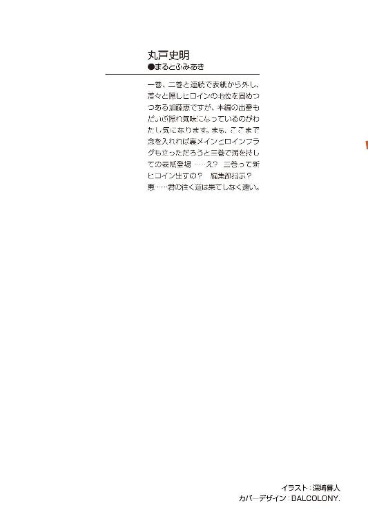
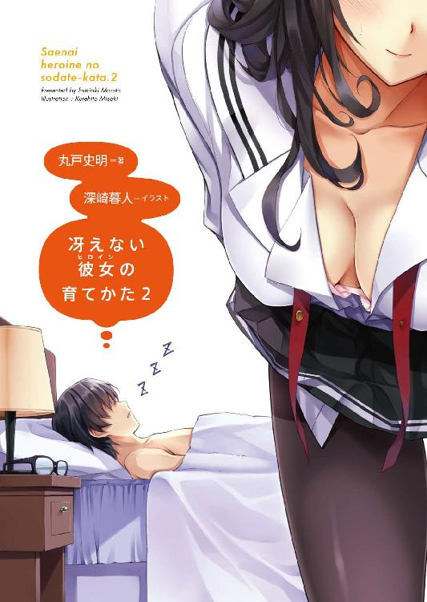
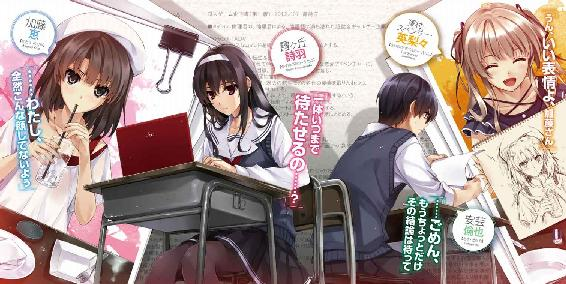
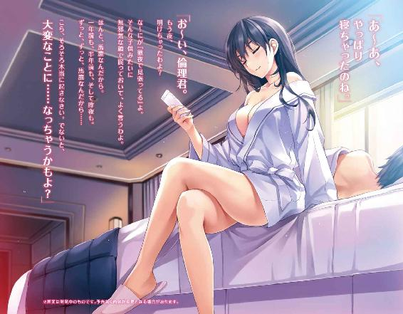
冴えない彼女の育てかた２
丸戸史明

富士見ファンタジア文庫
本作品の全部または一部を無断で複製、転載、配信、送信したり、ホームページ上に転載することを禁止します。また、本作品の内容を無断で改変、改ざん等を行うことも禁止します。
本作品購入時にご承諾いただいた規約により、有償・無償にかかわらず本作品を第三者に譲渡することはできません。
本作品を示すサムネイルなどのイメージ画像は、再ダウンロード時に予告なく変更される場合があります。
本作品は縦書きでレイアウトされています。
また、ご覧になるリーディングシステムにより、表示の差が認められることがあります。
口絵・イラスト 深崎暮人
プロローグ
放課後の視聴覚室に差し込む夕陽が、春先よりもずっと高くなった六月中旬......
「何言ってんの倫也、今月末までにキャラデザなんて無理、絶対無理！」
......なんだけど、そんな季節の移り変わりなんてお構いなしとばかりの甲高い怒声はもはや様式美。
「ラ、ラフでもいいから！」
「ラフどころか棒人間でも無理。だって来週末のイベント新刊、まだ一ページも描いてないし」
「そんな情けない事情をバラすのにそんな思いっきり胸張られてもサイズは増えないと思うんだがどうよ？」
「あ、さらにモチベーション落ちた。これは永遠に完成しないフラグ？」
人の目の前で、自分を威圧的に見せようとオーバーに振る舞っていても、その各所のサイズの小ささが邪魔をして単にちょこまかせわしなく動いているようにしか見えない。
まぁ、そんな欠点を差し引いても、明るめの夕陽にキラキラ反射しながらふわりと揺れる金色の髪は、この情けない状況に置かれた俺みたいな奴じゃなければ、はっとするくらい美しく見えるんだろう。
それがこの、見た目だけは完璧な擬態学園アイドル。
画家に見せかけたエロ同人作家。
暴虐の金髪ツインテール。
歴史の闇に封印された幼なじみ属性。
澤村・スペンサー・英梨々。
「仕方ない、じゃあ苦渋の決断だが七月中ってことで」
「そんな夏コミの新刊が佳境に入ってる時期に何お花畑みたいなこと言ってんのよ？」
「お前、期末試験は視野に入れてるか？」
「......夏コミが終わったらすぐコミトレだし。折り本とはいえ新刊の予定だし」
「なぜ目をそらす」
「しかも一○月はサンクリで、それが終わったらいよいよ冬コミの準備だもの。この調子じゃ今年いっぱいはどうにもならないわね」
「お前それ去年とまったく同じスケジュールじゃねえか！」
「心配しないで！ きっと来年もまったく同じだから！」
「その優先度の低いオファーに対しての『いつか機会がありましたら～』みたいなまるっきり脈なしな言い方やめろっての！」
その、アニメやコミックだと萌えポイントとされるかもしれないけど、リアルでやられたらムカつくことこの上ない傍若無人ぶりは今日も健在だった。
と、その時......
「まったく、そんなこと言ってたら何も始まらないでしょ澤村さん」
「っ......」
「う、詩羽先輩......！」
そんな英国女王クイーンエリリザベス（小学生時代に俺が付けた一七のあだ名のうちの一つ）に静かな声で、けれど忌憚なく意見する冷静沈着な大和撫子がここに一人。
「まぁ私も、プロット提出期限が今月というのはまったくもって承服しかねるけど」
「せ、先輩ぃ......」
いや、大和撫子ってのはその艶やかな黒髪に対しての比喩表現ってだけで、その清楚な見た目とはかけ離れた慈悲のなさで容赦なく俺を絶望に突き落とすのも様式美。
それがこの、周囲（主に俺）を巻き込んで自爆する文系テロリスト。
孤高の秀才に見せかけたラブコメ系ラノベ作家。
毒舌の黒髪ロング。
間違いだらけの元カノ属性。
霞ヶ丘詩羽。
私立豊ヶ崎学園の二柱の女神とも呼ばれる二人がこうして目の前に並ぶと、様々なコントラストが白日の下にさらけ出され、同じ美の表現でもこれほどまでに方向性が違うのかと感嘆のため息をつかざるを得ない。
一つは極限まで突き詰めた無駄のないシャープなフォルム。
一つは圧倒的なボリュームではちきれんばかりの豊かな曲線。
......まぁ、そうやって二人を絶賛したところで『誰が貧乳よ!?』『デブって言った今？』などと双頭の蛇を藪から呼び出すことになりかねないので黙ってるけど。
「実は今、ちょうど新作の執筆に取りかかってるのよ。何しろ新シリーズの立ち上げだから全力で取り組まないと」
「そりゃ凄ぇ！ ......って、こっちとしては残念だけど、でも新作楽しみにしてます！」
「ありがと......また読んだら感想聞かせてね」
「もちろん！」
しかしこの人、ちょっとはにかんだように微笑むと、はっとするほど天使なのに......
「で、七月は雑誌書き下ろしの短編があるのよ。一応、巻頭ページの特集ももらえたし」
「マジ？ それも楽しみだなぁ！」
「そして、新シリーズなんだから当然最初のうちは間を置かずに続き出さないとね。というわけで八月はもう二巻のプロット作業に入る必要が......」
「ぞ、続編がそんなに早く読めるなんてラッキー......」
「となると九月に二巻を書いて、一〇月にふたたび雑誌書き下ろしの短編......実は最初からコミカライズも決まってて年明けから連載開始だから年末は打ち合わせが大変で」
「誰にもどこにも隙間ないじゃん！ どうやってゲーム作るのこのサークル!?」
なのに、その天使っぽさが続かないというか、ナチュラルに『上げて落とす』テクニックを身につけている厄介な悪魔......
そんなこんなで、つい先日『伝説のギャルゲーの伝説......じゃなくて伝説のギャルゲーを作ろうぜ！』という固い誓いとともに手を取り合った四人の前に、いきなり暗雲が立ちこめる。
「あんたが隙間だらけでしょ。一人で勝手にコツコツ作れば？」
「何しろ同人ですものね。たとえ未完成だろうが何年かかろうが正解率が一パーセントだろうが私を殺した責任を取りさえすれば勝ちじゃない？」
「や、約束したよな二人とも？ ちゃんと俺のゲーム制作に協力してくれるって！」
念のためにもう一度言っておくけど、手を取り合ったのは四人。三人じゃなく四人。
この場所に全員集い、誰一人欠けていない、四人。
「確かにやるとは言ったけど、まだその時期の約束まではしてないでしょ？ そのことをどうか倫也も思い出して欲しいわね」
「つまり、私たちがその気になればゲームの完成は一○年二○年後ということも可能だろう......ということ」
「なんでネタ合わせだけ完璧なんだよ!? お前ら普段は仲の悪いお笑いコンビかよ！」
わかりやすいサークル瓦解の法則 その一
〝メンバーのスケジュールが全然合わない〟
まずい、このままでは俺たちの栄光の軌跡にいきなり汚点が......
夏コミで制作告知、冬コミで衝撃デビュー、そして大ブレイク。
来年の夏には壁サークル昇格、冬に商業進出、さらに大ヒット。
そうなれば周囲が放っておかず、ノベライズ、コミカライズ、ドラマＣＤ、フィギュア化等のメディアミックス花盛り。
そして満を持してのアニメ化......そう、アニメ化は重要だ。
勝ち組アニメなら原作は相乗効果で一生食っていけるコンテンツにもなろうが、負ければ原作含めて一気にオワコン化が待っている。
だから、勝つためには時間を掛け、金を掛け、しかし口を出すのはスタッフ集めまで。
一度人を集めてしまえばあとは彼らの能力を信じて任せるだけ。
原作側が中身にまで口を出しすぎると大抵ロクな事にならないんだよなぁ......
「ねぇ、倫理君」
「......ともやです」
と、そんな夢いっぱいな俺を現実に引き戻したのは、いつもながらの詩羽先輩の失礼な呼びかけだった。
なお、彼女の俺に対するこの蔑称の理由はいずれ話すつもりはない。
「それに、スケジュールよりも先に検討しなくてはならないことがあるんじゃないかしら？」
「え、それって？」
「まぁ、これは何にでも付きまとう話だけど、お金よ」
「......金ならもう一生分稼いじゃったけど？」
「......あなたの脳内、今どこに行っちゃってるのよ？」
おっといかん、まだ少しだけ現実に戻ってなかったらしい。
頭の中ではスピンアウト作品を後進に任せ、自分は働かずのんびり稼いで幸せな老後を過ごすイメージまで到達してた。
「ま、まぁ、当座の金なら先月のバイト代がまだ結構残ってるし」
「やっぱりまだ真剣に考えていないようね？ 私の言ってるのはイベントの参加費とかそんなレベルの話じゃないわよ？」
「......って言うと？」
「例えばゲームが完成したとするわね？ まぁ、そこまででも結構な費用がかかると思うけどそれは置いても、ちゃんと売るならモノを作らなくてはならない」
「そりゃ、まぁ......」
「ＤＶＤのプレス代、パッケージやマニュアルの製作、印刷費......数十万から一〇〇万のレベルでお金が飛んでいくわね」
「ひゃ、ひゃくまん!?」
「まぁ、まかり間違ってヒットして回収できればめでたしめでたしだけど......それまでの初期投資は馬鹿にならないわよね」
「ひゃ、ひゃくまん......」
わかりやすいサークル瓦解の法則 その二
〝お金が尽きる、もしくは最初から無い〟
「馬鹿馬鹿しい、そんな現実、この馬鹿が認識してるはずないじゃない」
「なんだとぅ？」
と、黒色のシビアな指摘の後に、金色の幼稚な舌鋒が俺に突き刺さる。
英梨々が詩羽先輩を押しのけるように俺の前に進み出て、ふたたび威圧感を示そうと胸を張った。
......だから強調すればするほど隣にいる詩羽先輩との残酷な格差を俺に刻みつけるだけだというのに懲りない奴。
「だいたい倫也みたいな生まれつきの消費型オタに、一からモノを作る企画力も分析力も持続力もあるわけないわよ。こいつの頭の中にあるのは『ぼくのかんがえたさいきょうのギャルゲーが大ヒットしてＴＶアニメ化されて劇場アニメ化されて最終的には実写映画化』っていう、見果てぬ夢だけ」
「馬鹿言うな！ その十数年後に完全リメイク劇場アニメで一世を風靡するところまでちゃんと視野に入れてるぞ！」
「余計タチ悪いでしょそれ！」
わかりやすいサークル瓦解の法則 その三
〝リーダーが現実見てない〟
「まぁ、そんな夢を叶えるためにも先立つものは必要よね？」
「せ、先輩......」
そして、幼稚な煽りを受けてまた黒い囁きが後を継ぐ。
詩羽先輩が英梨々の前にすっと割り込むと、俺の耳元に息が届くくらいに顔を近づける。
後ろで英梨々が不満の声を上げかけたけど、完全にボリュームに気圧されて一瞬で視界から消え去った。
「で、どうするの？ 消費者金融にでもお金借りる？ それとも腎臓でも売る？」
「黒いよ黒すぎるよ先輩!?」
そして、幼稚な煽りを受けてまた黒い囁きが後を継ぐ。
「......なんなら、私が融通してあげてもいいんだけど？」
「え、でも......」
「遠慮することなんかないわよ？ 別に持ってないわけじゃないし」
そ、そういえば......
このひとは、、高校生の分際で、デビュー作を全五巻累計五○万部売った人気ラノベ作家なんだった。
つまり、えっと、累計五○万部ってことは印税が......例えば一冊六○○円として作者の取り分が□％として五○万×六○○の□％で......
............？
「マジでっ!?」
「ま、もちろん無利子ってわけにはいかないけれど？」
俺のリアクションの中途半端なタイムラグにはあえて突っ込まずに、先輩がいつも通り俺のすぐ右隣に回り込む。
「い、いや、けど返せるアテは......」
「別に、お金でなんて言ってないわよ？ 恩を返す方法なんてそれこそいくらでもあるわけだし」
と、詩羽先輩の目が妖しく光る。
そう、それはまるで街金の人か洋館モノアドベンチャーゲームの未亡人かってくらいに。
「で、でも腎臓は......」
「そんなのネタに決まってるでしょ。別に大した要求じゃないわよ。多分、思いっきり拍子抜けするレベル」
「ほ、本当に？」
「ええ、だって私の方はそれほどお金に興味ないし」
さすがこの歳で確定申告してる人は言うことが違う......
「じゃ、じゃあ俺、どうすれば......？」
「それはね......」
右耳に、詩羽先輩の熱い吐息がふっとかかる。
そう、それはまるでギャルゲーのお姉さんキャラか女教師キャラかってくらいに。
「私の、ド......」
「やめんかああぁぁぁぁ～！！！」
と、その瞬間、清々しいくらいにテンプレなタイミングで、両サイドで結わえられた金髪が八の字の軌道を描いて俺の両頬を何度も打つ。
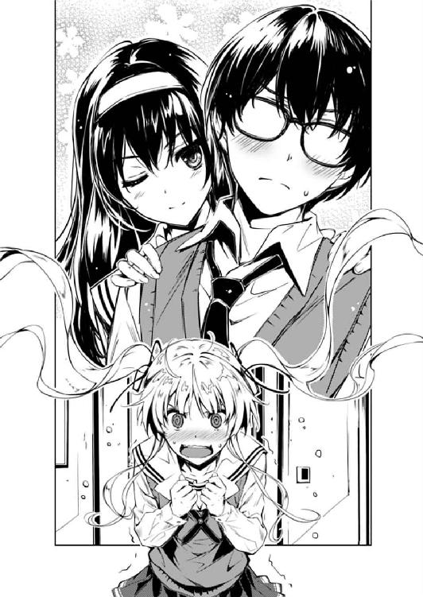
自らの背の低さを利用して、ダッキングで俺と詩羽先輩の間に踏み込んできたようだ。
なんという純血のインファイター。いや日英の混血だけど。
「い、い、いい加減にしなさいよ霞ヶ丘詩羽！」
しかも続く台詞がまたテンプレ丸出し。
「でも、お金は大事よ？ 澤村さんだってタダ働きはごめんだって言ってたでしょ？」
「突っ込みどころはそこじゃないし。てゆうかあたしをダシにしないでよ！」
「サークル活動を円滑に進めようという私の配慮をそんなふうに言わなくても」
「いっつもそうやって人を小馬鹿にしたような言い方して！」
やっぱりこの二人、舞台を下りたらお互い目も合わせないお笑いコンビだ......
わかりやすいサークル瓦解の法則 その四
〝メンバー同士の仲が悪い〟
「そこまで嫌がるなら、澤村さんが彼に貸してあげればいいじゃない。あなただって同人の上がりでごっそり稼いでるでしょ？」
「知らないわよそんなの！ 原価も部数も売り上げも全部パパ任せだし」
さすが自分の確定申告まで親にさせてる人は言うことが違う......
いや、あるいは外交特権で隠蔽されてるかも、こいつの資産。
「せっかく彼のピンチを救うチャンスなのに......後悔しても知らないわよ？」
「あたしはあなたみたいに男を奴隷やヒモ扱いする趣味はないの！」
ああ、さっき先輩が言いかけたあれってそういう......
「男の成功を陰ながら支える女ってのも昔ながらのロマンがあっていいと思わない？ 今度の新シリーズに一人そういうヒロインを入れようと思ってるんだけど」
「全然陰に隠れてないし、大体こいつが成功するわけないし、ってそれ以前に男として意識するとかありえないし！」
「私、あなたのそういう見え透いたところ、本当に嫌いじゃないのよ？」
「あたしはあんたのそういう心の底から邪悪なところが本気で嫌いっ！」
わかりやすいサークル瓦解の法則 その五
〝サークル内で多角関係が構築されている......？〟
「......はぁ」
数秒後、そこには教室内に取り残されてため息をつく俺の姿が。
ていうか二人とも、俺が介入する隙すら与えずにいがみ合いながら出て行ってしまった。
すげぇ、一月前から何一つ進展してないぞ、あの二人......
「......はぁぁぁぁ～」
などと、人の心配でため息をついてる余裕なんか、今の俺にはなかった。
何しろ一月前から何一つ進展してないのは、俺だって同じだ。
運命に導かれるように、彼女と出逢った三月。
大いなる野望に燃え、ゲーム制作を思い立った四月。
様々な紆余曲折を経て、最強のメンバーが揃った五月。
そして、次々と試練が降りかかってきたこの六月......
最初に時間というハードルが目の前に迫り。
それを越える間もなく、予算というハードルがその先に見え。
最後に協調性という、それまでよりも数段高いハードルがそびえ立つ。
どう考えても、もはやこれまでとしか言いようのない状況。
だからもう、諦めてしまえばいい。勇気ある撤退を決断すればいい。
もともと、単なる思いつきから始まった計画だ。
そこに人生や生死を賭けた戦いなんてものは存在しない。
だから、ただ一言、しょうがねぇなぁって。
けれど......
「ところでさっきから何やってんだ加藤？」
そんな四月の頃と同じ嘆きをいつまでも垂れ流していても仕方ない。
「ん～とね、サークルの名前考えてたんだけど」
「......サークル名だぁ？」
仕方ないから、さっきからこっちの騒動にまるっきり関与せずに、教室の隅でステルス性能をフルに発揮していた〝四人目〟へと話しかける。
「うん、立ち上げてから一月経つけど、まだ名前ないよねウチのサークル」
「ああ、うん......そうだね」
いたねそういえば......
こんなところにも、四月の頃から何も変わっていない奴が。
可愛いと綺麗が中途半端に同居した、なぜか注目を浴びない端麗な容姿。
ボリューム中くらいのいまいち特徴に欠けるボブカット。
英梨々より高く、詩羽先輩より低い背丈。
ついでに、英梨々よりは豊かで、詩羽先輩よりは貧しい......
なんだろう、この目立たなさも立派な様式美......なのか？
「こんなのどうかな？ 『倫也の愉快な仲間うち』って......」
「......ああ、いや、それによく似た名前の有名なサークルあるから」
「そっかぁ、駄目かぁ」
うん、駄目だよ、その物事の優先順位。
何しろ今がそんな事態じゃないというのは......
まぁ、わかってないだろうし、わかってても何も変わらないだろうけどな、こいつは。
わかりやすいサークル瓦解の法則 その六
〝なぜいるのかわからない役立たずがいる〟
いやいや、役立たずでも代表の彼女でもない。
それどころか俺にとっての全ての始まり。象徴、シンボル、つまりこのサークルの陛下。
ゲームの、物語の、そして俺のメインヒロイン、加藤恵。
運命に導かれるように、彼女と出逢った三月。
バイト中の俺と、突然の風と、偶然通りかかった加藤がドラマチックな融合を果たし、俺のギャルゲー脳を目覚めさせた春休み。
大いなる野望に燃え、ゲーム制作を思い立った四月。
実は同じクラスで二週間以上前から再会していたことを知り、偶然と運命ってのはまるで別物なんだと思い知らされた新学期。
可愛いけれど目立たない、話が弾むのにときめかない、何でも許してくれそうだけどそんなの俺が許せない......
そんな、いまいちキャラデザが微妙なご当地萌えキャラのような加藤恵という女の子を、俺の理想のメインヒロインに魔改造しようと決意した。
様々な紆余曲折を経て、最強のメンバーが揃った五月。
加藤のため、俺のため、今まで封印していた、最強にして最狂の人脈を解き放った。
そして召喚されたのは、澤村・スペンサー・英梨々と霞ヶ丘詩羽。
能力も、美貌も、知名度も、そして扱いの難しさも最大級な、私立豊ヶ崎学園の二柱の女神。
当然のように勧誘は困難を極め、一時は諦めてしまおうかと思ったゴールデンウィーク。
でもそんな彼女たちを、地道な努力でなんとか仲間に引き入れたのは俺じゃなかった。
やる気がないと、ただ流されているだけだと決めつけていた加藤がやり遂げた。
だから、まだ名前すら決まらない俺たちのサークルは、こうしてここに存在している。
そして、次々と試練が降りかかってきたこの六月......
加藤恵は今日も、サークルのために役立とうと頑張っている。
「あ、そうだ」
「どした？」
「じゃあ、こういうのは？ 『あっかんべソフト４』って......ほら四人で立ち上げたし」
「......それに似た名前の大手商業メーカーあるから。しかも３まで」
そうだ頑張れ、我がサークルの象徴よ......
第一章 可能性を生み出しただけでアウトなんだよ
「ありがとうございました～、またお越し下さいませ～」
家の近所の探偵坂を下りきって交差点を左に行き、そこから二〇〇メートルほど国道沿いに行った先となれば、それは結局のところ家の近所。
そんな近場のファミレス『ファミール』は、かき入れ時であるはずの日曜夜にもかかわらず、いまだに八分の入りだった。
「お客様四名様ですか？ お煙草はお吸いになられますか？ ではこちらへどうぞ。禁煙席四名様お願いします～」
何しろこの場所は、どの駅からも中途半端な位置にある上に、敷地が狭いせいで国道沿いにもかかわらず駐車場が確保できないというネックもあり、俺が知っている限り、一年以上もった店がないという出入りの激しい魔のロケーションだったりする。
「シチューハンバーグ、和食セットのお客様......お待たせしました。鉄板熱くなっておりますのでお気をつけください」
まぁ、逆にそんな場所にある店だからして、働く側としてみれば、ピーク時でもそれほど忙殺されずに済む手頃なバイト先として評判がいい。
「オーダー入りま～す、あとお客様お会計ですのでレジお願いしま～す！」
そして今の俺は、働く側の立場としてこの場にいる。
つまり、さっきから忙しそうに喋っているのは何を隠そうこの俺だ......
「安芸くん、ちょっといいかな？」
「あ、店長、なんです？」
もちろん、ただ働くだけじゃない。
キッチンにゲーム好きのスタッフがいれば、行ってギャルゲーの奥深さを説き。
フロアに流行のアニメで盛り上がるウェイトレスたちがいれば、行ってその輪に加わり。
テーブルでキャラグッズを広げるお客様がいれば、行ってさり気なく作品名を呟き。
「君がこの前提案してくれたタイアップの件なんだけどさぁ......本部経由で代理店と連絡取ってもらったんだけど、どうやらＯＫ出そうなんだよ」
「マジっすか！」
......さらに、店長室で企画会議があれば呼ばれてもいないのに参加して、次期放映予定アニメとのコラボイベントを提唱する。
「それで、どういったグッズを用意したらとか、宣伝はどうやっていこうかとか、色々相談に乗って欲しいんだけど。何しろ私はこういうのに疎くてね」
「やるやる！ もうどこにでも出向きますから是非やらせてください！」
そういうオタクに、俺はなりたい。
......いや、なってるんだけどな既に。
「じゃ、その話は来週から進めるとして......安芸くん、今日はそろそろ上がっていいよ」
「いえ、今日も閉店まで頑張ります」
「って頑張りすぎだよ。昨日も今日も、午前中から休憩も取らずに働きづめでしょ？」
「いいんです、俺には為さねばならない目標があるから！ そのためには一日一五時間働かされたり開店二時間前から準備させられたりほとんどの時間がサービス残業だったりそれでいてボランティアに強制参加させられたりしたって構いません！」
「......言っておくけどウチそんなブラックじゃないから。そもそも君、めっちゃ活き活き働いてるじゃないか」
「やだなぁ、単なるたとえですよたとえ！」
三十代の、痩せぎすで小柄で弱腰の店長が少し困った表情で眼鏡に手をやる。
この人、オタクじゃないんだけど同じ眼鏡キャラであるせいか結構気が合う。
「まぁ、バイトにもかかわらず自主的に色々やってくれるし助かってるよ。けど決して無理はしないようにね？」
「大丈夫です！ 俺この仕事、天職だと思ってますから！」
「はは、頼もしいね」
ちなみに新聞配達は深夜アニメが終わったすぐ後にシームレスに働ける天職だ。
引っ越し屋は時給が高い上にいつでも入れていつでも抜けられる天職だ。
レンタルショップは同じ趣味の人間の比率が多い上に、最新の映像にタダで触れられる天職だ。
結論......俺、労働厨。
一一月二三日は感謝しつつ働き、五月一日は権利を訴えつつ働く。
そういう自給自足オタクに、俺はなりたい。
「あ、それじゃ俺戻りますんで、これで」
と、そのときフロアのチャイムが鳴り、新たな客の訪れを告げた。
「じゃあ、来週もよろしくね、安芸くん」
「あざ～っす！」
店長に深々と頭を下げ、颯爽と店長室を出ると、ふたたび戦場に戻る。
閉店まであと三時間ほど......いや、冬まで気を抜かずに全力で駆け抜けよう！
そして、必ず手に入れるんだ。
ＤＶＤのプレス代、パッケージやマニュアルの製作、印刷費、あとついでに原画とシナリオのギャラも含めた総額ひゃ、ひゃくまんを超える大金を！
「いらっしゃいませ何名様......!?」
「あれ、安芸くん？」
......と、気合を入れ直した瞬間。
俺のその気持ちを一瞬で凍らせるような場面が、俺の目の前に展開される。
「......に、二名様、お煙草はお吸いに......」
「あ、禁煙で。なに、また新しいバイト？」
何しろ、そこにいたのは......
「あれ？ 恵ちゃんの知り合い？」
そう、そこにいたのは恵......こと加藤。
それはまるでどこの漫画かラノベだよというくらいの偶然に彩られたシーンだった。
ただ、指好的には安心安全の萌えラブコメ系ではなく......
「あ、うん、同級生。安芸倫也くん」
「へ～、偶然じゃん。あ、俺、加藤圭一って言います、よろしく」
「............ども」
そう、泥沼系というか、ＮＴＲ系というか......
※ ※ ※
「ああ、圭一くん？ うん、従兄弟だよ」
「イ、イトコ......？」
明けて月曜日の朝。
始業前のざわめく教室で、俺は意を決して加藤に昨日のことを問いかけた。
さすがに今回は、放課後のサークル活動までなんて待てなかった。
何しろこれは、サークル存続の危機でもあったのだから。
けれど......
「うん、しかも城北医大の四年生」
「い、医大生!?」
「子供の頃から優等生でね、加藤家の姉妹と違って親戚一同の自慢のタネだったんだよ」
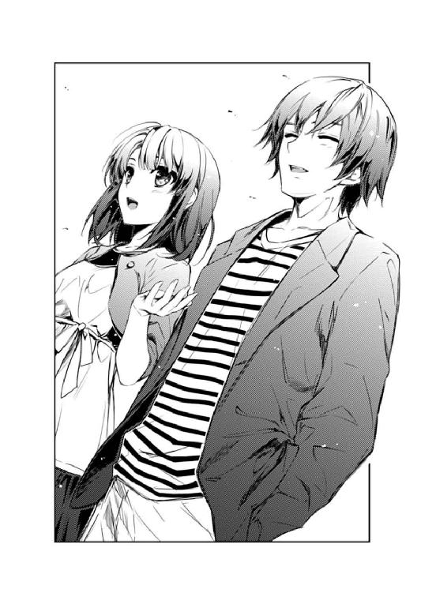
「医大生......」
「先週、おじさんとこの一家が久しぶりに遊びに来たんだけど、親たちが連れだってお芝居見に行っちゃって、わたしたち二人だけ夕飯もなしにほっとかれちゃってさぁ」
「.........」
加藤の反応は、思いっきりいつも通りにいつも通りだった。
「それよりも安芸くん、バイト先でもすっごく溶け込んでたよね。店の人たちに何度も声かけられてたし」
たまたま俺がバイトに入った店に、たまたま自分が訪れたという、見ようによっては運命的なシチュエーションもほぼスルー。
「ほんと、安芸くんほどコミュ力の高いオタクってそうそういないんじゃないかな？」
その時、別の男と一緒にいたという、見ようによっては修羅場的なシチュエーションも〝従兄弟〟の一言であっさり解決。
「普通、そういう人たちってさ、仲間うちではすっごく仲いいけど、それ以外だとクラスメイトともめったに会話しなかったりするじゃない？」
そして、よくある親戚同士の一族を巻き込んだほのぼのエピソードを付け加えることでこっちの緊迫感をごっそり奪っていく。
......どうでもいいけど、ベレーをあげた従姉妹といい、親戚関係充実してるな加藤家。
「安芸くんの場合、クラスや校内どころか、どこに行っても何も変わらないんだもん。物怖じしなくて、誰とでもすぐ友達になって......ああいうところ羨ましいなぁ」
本当、これだから加藤はなぁ......
何があってもドラマにならない、どれだけ疑惑があってもまったく心配いらない、嫌なくらいに安心感のある救済キャラみたいなチョロい系メインヒロイン......
「ってんなわけあるかぁぁぁぁぁ～!!」
「安芸くん？」
......だったのは、昨日の夕方まで。
「か、加藤っ！ お前、自分が何をやったかわかってるのか!?」
「あ、もしかして働いてるとこ見られるの嫌だった？ ごめん、でもあれは偶然で」
「いやだから俺の話じゃなくってぇ！」
「......？」
「あ、あれは......あれは駄目っ！」
「あれって？」
「だからあれ...ええと、あいつ......あの人っ！」
「......圭一くん？」
「そう、圭一くん！」
ファミレスでもずっと加藤の向かいに座り、一緒に飯を食って車で連れ帰った男！
年上の従兄弟にして医大生！ しかも車アウディだったし！
ついでに前髪サラサラで、一昔前に流行った醤油顔とかいう表現の似合う、脂っぽさを感じさせない容姿......かと言って乾燥肌でもない......とかそれはどうでもいい！
「彼がどうかした？」
「彼とか言った！ 今言っちゃったよ彼って！」
「うわ......」
と、加藤が壮絶に退く。
いやわかる。今の俺は確かにウザい。端から見てなくても壮絶にウザ過ぎる。
けれど、俺もギャルゲーマーとしてここで引き下がるわけにはいかないんだ。
「か、加藤、いいか......お前に言っておくことがある」
「う、うん？」
「あの人はやめとけ......」
「やめとけって、何を？」
「色々！ 一緒に飯食うのも相手の車に乗るのも、誤解を受けそうなことは全部！」
「ごめん、やっぱり意味わかんない。だって親戚だよ圭一くん？」
「その名前呼びも禁止！」
「けど向こうも加藤だし」
「な、なんたる偶然......これも運命の悪戯か！」
「......確率、四分の一くらいじゃない？」
お、落ち着け、動揺するな安芸倫也。
加藤は気づいてないだけなんだ......これがどれだけ深刻な萌え系ユーザーに対する裏切りなのかを。
だから、ちゃんと噛んで含めるように説明すればわかってくれるはずだ。
「年上の従兄弟ってのはな......あまりにも頑強なお兄ちゃんフラグなんだよ......」
「......なにそれ？」
「幼い頃の話だ......」
毎年、お盆と正月の時期、田舎に親戚一同が集う時にだけ会うことのできる、少女より年上の聡明で大人びた少年......
いつも同い年の男の子たちと野山を駆け回っている少女は、しかしその少年が自分に向ける軽やかな微笑みの前にはなんだか妙に気恥ずかしくなってしまい、変に避けたり悪態をついたりしているうちに別れの日になってしまい後悔するのが毎年の恒例だった。
けれどある年、転機は訪れる。
いつものように少年の誘いを振り切って一人で山に分け入った時、ふとしたことで足をくじいて動けなくなってしまう少女。
気がつくと山の夕暮れはあっという間に訪れ、薄暗い森の中にカラスの不気味な鳴き声が響き、周りを蝙蝠が飛び交い始める。
そんな、寂しさどころか恐怖に支配され、助けの声すら出せずに震える少女のもとに、茂みを分け入って少年が現れる。
切り傷だらけの彼におぶわれて山を下るとき、さっきまで出なかった声が涙とともに溢れ出し、お祖母ちゃんの家に帰り着くまでずっとその背中で泣き続けた。
そして、涙にまみれた声で何度も少年のことを『お兄ちゃん』と呼び続けた恵であった。
「............」
「............」
「いや、『恵であった』とか言われても」
「で、今になってその頃の思い出が頭をよぎり『久しぶりにお兄ちゃんって呼んじゃってもいいかな？』なんて食事中にぽつりと聞こえない程度に呟いたりしなかったか？」
「しないよ普通」
「するんだよギャルゲー的には！」
「え～」
しかも向こうがそういうときに限って『え？ 今何か言った？』とか超絶鈍感難聴野郎になったりしてもう......っ！
「あ、あと結婚の約束してたりとか！ しかもそんな子供の頃の約束をずっと信じて待ってたりとか！」
「だから親戚のことそんなふうに思ってたら変だよ」
「変じゃないよ俺が圭一くんだったら激萌えだよ！」
「え～」
従兄弟とかいう結婚できる四親等。
しかも子供の頃から一緒に育ったせいですぐに『お兄ちゃん』化できるというギャルゲー主人公候補の第一シード。
そんな甘酸っぱいポジションになりたがらない奴がいるだろうか？ いやいない！
......まぁ、オタク限定では。
「加藤が、普通の女の子ならよかった......」
「わたし安芸君にいつも普通すぎるって怒られてる気がするんだけど」
「けど今のお前は、Ａ○Ｂも真っ青な恋愛禁止令の制約が課せられたギャルゲーヒロインなんだよ」
「いつの間にそんなことに......？」
「なのに主人公であるユーザーを差し置いてそんなフラグ立ちまくりのライバルキャラが登場しちゃったりなんかしたらもう......っ」
「え、圭一くんもゲームに登場？」
「しかもトドメと言わんばかりにそれが医大生ときた日には！」
「ついでに医大生に何か偏見持ってる？」
「加藤にはわからないよ......たぶん、一生な」
俺たちギャルゲーマーと医大生の間には、決して埋まることのないメインヒロインに対する距離感の差というものがやんやんややんやん。
「ふぅ...っ」
と、俺は一つ大きな息をついて心を落ち着かせると、もう一度真摯な表情で加藤に向き直る。
「加藤、改めてお願いだ......」
「あ～、うん」
そして加藤は安定のフラットな表情で俺の言葉を待つ。
「理不尽かもしれない。ウザイかもしれない。馬鹿じゃないのこいつとか思ってるかもしれない」
「えっと、ごめん。それ『かもしれない』いらない......」
「それでも、彼とは......圭一くんとはしばらく会わないで欲しいんだ。できれば、ゲームが完成するまでその恋心を封印してくれ」
「そもそも恋じゃないって何度言えば......」
「これは単なる俺のワガママってだけじゃない......」
「あ、ワガママも入ってるってことは認めるんだね」
「最強のギャルゲーを作ると誓ったクリエイターとして、この企画を成功させると誓ったサークル代表として、そして、お前をメインヒロインにすると誓ったプロデューサーさんとして！」
「なんで最後だけさん付け？」
「頼む閣......加藤！」
その祈りとともに、机にぶつけるくらいに深く頭を下げる。
これが今の俺にできる精一杯の気持ちだから。
加藤に、ギャルゲーマー全員の願いが伝わってくれると信じて、俺は......っ、
「えっと、ごめん。さっそく今週末一緒に出かけることになってるんだけど」
「アウトぉぉぉぉぉぉぉぉ～～～!!」
と、俺が腰を落とし脚をガニ股に開き親指を突き出した右手を挙げた瞬間、教室内に予鈴が鳴り響く。
......なお、俺たちがこんなにも派手に、痴話喧嘩とも取られかねない言い争いをしてる最中も、クラスメイトたちはまるっきりいつものこととしてスルーしていた。
※ ※ ※
「こ、これが六天場モール......？」
深夜の俺の部屋に、今日はお馴染みのアニメの音声は流れていない。
代わりに響くのは、静かに唸るだけのＨＤレコーダーの駆動音。雑誌のページをめくる音。そして、俺のため息交じりの独り言。
「行くのか、ここに......？」
テーブルの上に広げられたじゃ○んと東京○ォーカーのカラーページに、また俺の脂汗がぽとりと落ちる。
その誌面には『今月オープン！ 六天場モール大特集』の文字とともに、カラフルな写真が大量に掲載されている。
六天場モール。
タウン誌の記事にある通り、今月の初めに玉崎市にオープンしたショッピングモールだ。
紹介記事によれば、国内、海外合わせて一○○を超えるブランドが集結したショッピング街に、これまた三○を超える有名店が軒をそろえるレストラン街、それにシネコンまで併設された巨大施設ということだった。
そう、これが加藤の約束の地......
従兄弟の圭一くんと今週末出かける約束をした場所。
そして今となっては、今週末、俺と一緒に出かけることになった場所......
え～と、順を追って話そう。
最初、加藤はクラスメイトの女子たちを誘ってみたらしい。
そしたら『オープン直後は混んでるから行きたくない』との理由で一刀両断されたとか。
そりゃそうだ。俺にはその友達の気持ちが凄くよくわかる。
この暑い中、電車で一時間以上かけて人に揉まれに行くってどんなＭだよ（ただしコミケは別）。
で、そのことをたまたま遊びに来た親戚の男の人に話したところ、一緒に遊びに行く計画がとんとん拍子にまとまったらしい。しかも車まで出してくれることになったとか。
......そりゃないわ。親戚のよしみでそんな拷問に付き合うとか聖人の域を脱してるって圭一くん。
むしろ下心があったと考える方がよっぽど理解できる。納得は絶対しねぇけどな！
そんなこんなで、ギャルゲー主人公的に加藤のその予定だけは容認できない俺は、ついその瞬間叫んでしまったんだ......
『なら代わりに俺が行く！ 加藤と一緒に六天場モールに付き合うから！』
『安芸くんが？ まぁそれでもいいや。じゃあ圭一くんに断りのメール入れとくね』
『いいの!?』
今さらながら、加藤の付き合いの（どうでも）よさを侮っていた。
しかしさすがに圭一くんが気の毒だと思ったら、向こうもあっさり『了解。彼氏によろしく』と返信してきたらしい。
何それ単なる親戚づきあいじゃん。いや加藤は最初からそう言ってたけどさ。
「こ、これが六天場モール......」
そして時は動き出す......ていうか我に返って再び脂汗をたらたら流す。
特集記事をどれだけ読んでも、俺がこのスポットに存在してるイメージが湧いてこない。
何しろこのショッピングモール、徹底的にカップルやファミリーなどの一般リア充向けに作られてる。
アミューズメントパークや水族館やプラネタリウムみたいなオタクに優しい施設がない。
辛うじてシネコンがあるけど、アニメを一本も上映していないところなんか徹底してる。
何より致命的なことに、アニ○イトがない。
そこまで俺たちが嫌いか、六天場モール......
そして、何故そんなところに行きたがる、加藤恵......
行くのか？ 俺、本当にそんなところに行くのか？
ユ○クロとＡ○Ｃマートがあれば生きていけるこの俺が？
しかも、女の子と一緒に？
この、男女二人で行けばどう考えてもリア充的なデートとしか見えないようなこの場所に......？
今さらながらに思い知らされる。
加藤恵という女の子は、その気安さで気づきにくいけれど、本質的にはあくまでも普通の女子高生なんだってことを。
ファッション誌をチェックして、休日には服や靴やアクセサリを見て回る。
映画は恋愛モノや流行りの邦画。
ライブやコンサートはアニサマとかじゃなくてアイドル系やなんちゃらＰＯＰ。
オタクに対して理解と付き合いがいいのは彼女の大きな美点だけど、それでも深い話が通じるわけじゃない。
そんな、基本的に俺とは住む世界が違う女の子......
「......昼飯どこで食うかくらいはこっちで決めとかないと」
とか、今は怯んでいる場合じゃない。
今回の〝デート〟は、今までとはまったく違った戦い方が要求される。
事前調査を怠るわけにはいかない。
「お、スイーツ食べ放題とか。これはいいかも」
なぁ、加藤......
お前、俺のことコミュ力高いとか、誰とでもすぐ仲良くなれるとか言ってたよな？
けど、それは勘違いだ。
「って、なんだこのジャンボパフェ？ 名前の通りアンビリーバブルな......」
俺はただ、いつもそのコミュニティを無理やり自分色に染め上げるからこそ、そこにいることができるだけなんだ。
変えられないコミュニティに溶け込むことはできないんだよ......
「......ん？」
ところで圭一くん、今になって急に思い出したんですが、あなたのメールに書いてあった〝彼氏〟ってナンノコトデスカ？
※ ※ ※
そして、誰にとってなのかわからないけど、待望の週末......
『......え？』
「ごめん、熱が三九度超えてて......そんなわけで行けなくなった。申し訳ない」
そこには、電話口で加藤に平謝りする俺がいたりとか。
『なに？ どしたの？ 風邪？』
「う、うん、そんなようなもの......」
言えない......言えるわけがない......
デートのことで頭を悩ませすぎて知恵熱を発症しただなんて。
第二章 お見舞いって、個別ルートのイベントだよな？
気がつくと俺は、真っ白な光の中に放り出されていた。
その眩しさと痛さにしばし目をしばたたかせ、白い世界にゆっくりとなじませていく。
......と、それがショッピング街の中の過剰な電飾だということに気づいた。
しかも俺は、女の子やカップルたちで賑わうカジュアルショップの中に一人で放り出されているらしかった。
どうして、こんなところに......？
『あ、何かお探しですか～？』
と、そんな戸惑う俺をめざとく発見した店員らしき茶髪の男が、妙にフランクに俺に話しかけてくる。
その瞬間、今度は目じゃなくて、頭の中が白さに染まっていく......
いや、別に、何も探してないから。
だから寄るな、話しかけるな、上から下までなめ回すように見るな。
シャツの柄を観察するな、襟の立て方までいちいち確認するな。
Ｔシャツをズボンの中に入れるのはそんなに悪か。今日はたまたまなんだよ。
だいたい、冷静に考えればこっちの方が着心地いいだろ。
なんだよ、ズボンって言って何が悪いんだよ。親と同じ言い方してるだけじゃないか。
おい、鞄が背負いなだけであからさまに態度を変えるな。
あと靴でその人間のセンスを決めつけるな。履けりゃいいだろそんなもの。
うるさいな、俺を彼氏とか呼ぶな。俺が女だったら彼女氏って呼ぶのかよ？
ちゃんと安芸氏とか倫也氏と呼べ。ほら急にオタクっぽくなっただろ。
ええい、こんな場所にいつまでもいられるか！ 俺は先に部屋に帰らせてもらう！
※ ※ ※
「～～～っ！」
と、何故かその後、俺の惨殺死体が洋館のホールで発見されたところで、その忌まわしい夢から覚めた。
目を開き、声にならない叫びを上げた瞬間、赤が世界を支配する。
その眩しさと痛さにしばし目をしばたかせ、赤い世界にゆっくりとなじませていく。
......と、それが単なる窓から差し込む夕陽だということに気づいた。
そっか、もう夕方か。
てことは、昼間ずっと寝てたのか。せっかくの土曜なのに、丸一日無駄にしたな。
......いや、本当に無駄にしてしまったのは俺の方じゃなかったな。
『ううん、いいよそんなの。別にいつ行っても構わないし』
『暑いからってエアコン利かせすぎないようにね。あとこまめに水分補給しなよ？』
『それじゃ、お大事に』
今日は、加藤には悪いことしたなぁ。
......などとあっさり流してる場合じゃない。
ゴリ押しでデートの約束をしておきながらそれを当日になってすっぽかすとか、三年目の倦怠期カップルでも別れるレベル......
いやそれは喩えが悪いな。三月目の初々しいカップルでも別れるレベルだ。
「暑......」
もう鳴き出したセミの声と、エアコンの風が吹く音と、ペンが滑らかに軋む音と......
静かな部屋の中に、そんな数種類の小さな音だけが響く。
ぼうっとしたままの頭を振り、少し現実に立ち戻ると、すぐに口の中がからからに渇いているのに気付いた。
エアコンをつけていたにもかかわらず、着ていたＴシャツはかなり汗でべとついている。
どうやらまだ熱は下がっていないみたいで、全身はけだるく、渇いた喉が熱い。
「水でも飲んでくるか」
「あ、あたしコーラ」
「わかったよ......」
のそのそとベッドから起き出して、部屋を出る。
いまだにふらつく頭を押さえつつ階段を下り、キッチンに入る。
リビングの方も覗いてみたけれど、予想通り親は安定の外出中だった。
仕方ないので自分で戸棚からトレイを出し、飲み物を求めて冷蔵庫を開け......
「............？」
何も取らずに急いで冷蔵庫を閉め、キッチンを出る。
そのまますぐに階段を、下りてきた時とは段違いの勢いで駆け上る。
そして勢いをつけたまま部屋のドアをぶち開けて......
「なんでお前がここにいるぅぅぅ～!?」
俺の机で一心不乱にイラスト作業にいそしんでいるジャージ姿の金髪女に突っ込んだ。
「あ、飲み物はそっちに置いといて。原稿濡れると困るから」
「リアルタイムに困ってるのは勝手に家に上がられて何の理由もなく原稿描かれてる俺の方だと思うんですが!?」
「しょうがないでしょ。いくらチャイム鳴らしてもおじさんもおばさんも出ないし、あんたはあんたで起きないし」
「......で、原稿については？」
「まぁ、それはそれ、これはこれ......って、だいたいこっちは毎月締め切りを抱えてる身なんだからそんな薄情なこと言わなくてもいいじゃない！」
あれ？ なんかみっともない逆ギレ来たよ？
そもそも、チャイム鳴らして誰も出なかったらいったん出直すのが普通じゃないのか。ご近所さんなんだし。
いや、それ以前に......
「結局何しに来たんだよ英梨々？」
「別に」
最近になってようやく七年に及ぶ鎖国が解除されたとはいえ、何の理由もなく家の敷居をまたぐほど国交が回復したとも思えないんだが......
しかも、せっかくの休日に。
だいたい、俺だって熱さえなけりゃ出かけていたはずの......あ、もしかして。
「ひょっとして、見......」
「なわけないでしょ！」
「......せめて〝舞〟まで口にした後で否定しようぜ？」
どこまで先読みしてんだこいつは。というか俺が病気なこと絶対知ってただろその反応。
「この間、イベントの原稿手伝ってもらったでしょ。そのお礼を持ってきただけ」
「あ、ああ......、先月の」
「ほら、そこに置いてあるから受け取りなさいよ」
と、改めてテーブルの上に目をやると、確かにそこには控えめにラッピングされた紙包みが置いてあった。
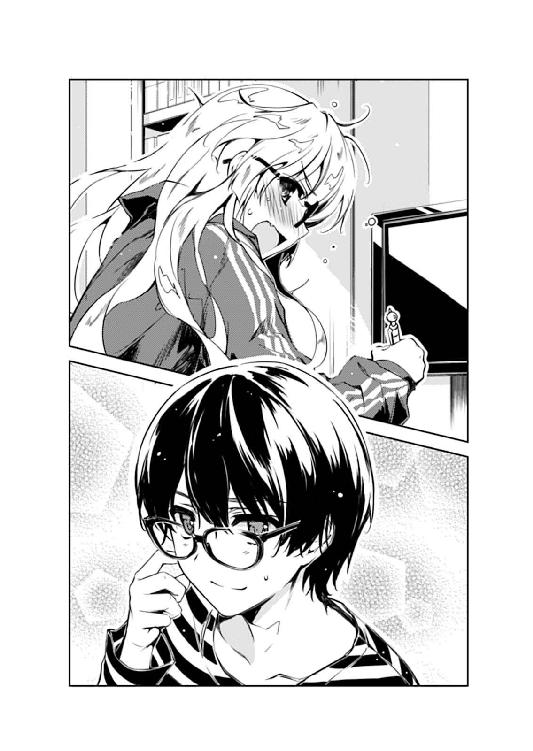
「結局モノくれるんなら見舞いって言ってもいいじゃん」
「いいわけないでしょ！ お礼は人として当然の礼儀、お見舞いは女の子としてのイベントフラグ、そこには埋めようのない認識の差があるわよ！」
「お、おう......」
なんだかんだ言って、こいつも俺と同じくギャルゲー脳に染まってるな。
まぁ、誰が染めたかについては議論の分かれるところだけど。
「まぁ、とりあえずありがたくいただく......お、桃缶、懐かしいな」
「でしょ、デパ地下で見つけて、ついつい買っちゃった」
「それと......って、おい、これマスクメロンじゃないか」
「嫌いだったっけ？」
「いや、滅多に食ったことないし......てかあの程度の手伝いの礼にしちゃ高すぎだろ」
「それなら平気よ。ちゃんとこの前のイベントの売り上げから出してるから」
そういう問題なんだろうか......これだからブルジョワは。
「あとは、ええと、バナナに、リンゴに......なんか果物が多いな」
「その辺はフルーツパーラーで適当に詰めてもらっただけだし」
やっぱり非常に見舞いっぽいラインナップに見えるのは気にしたら負けなんだろうか？
で、そんなフルーツ類を全部取り出すと、最後に紙袋の底から、なんか妙に毒々しい色の粉末が入った袋が現れる。
「......シト○ンソーダ？」
「うん、期間限定で復刻したんだって」
「......なぜこんなものを？」
「それも懐かしいでしょ？ 子供の頃、遠足とかに持って行かなかった？」
「ああ、本当に懐かしいな。じゃあ今から作ってきてやるから遠慮なく飲んでけ」
「いらないわよそんな合成着色料の塊。あたしはコーラだって言ったでしょ」
こっちは病人だってのに何か一つは嫌がらせをしないと気がすまないのかこの女は......
「で、熱は下がった？」
「まだ三八度くらいあるな」
閑話休題。
そんなこんなで、見舞いの品を適当に切って盛りつけ、夕暮れのひとときを過ごす。
なお用意したのは当然のごとく病人の方の俺。
何しろ、この見舞客に任せられるわけがない。手先もさることながら視力の関係で。
「しっかし、あんたが風邪ひくとはねぇ......雪でも降ってそのせいでどこかのカップルが別れなきゃいいけど」
などと英梨々はおなじみの皮肉を振りまきながらコーラを口に運ぶ。
ちなみに英梨々のグラスは『あの雪のプリズム』キャラクターグラス第二弾『渚麻里子』バージョンで、俺のは同作キャラクターグラス第一弾『天女羽衣』バージョンと、互いの一押しキャラという配慮に満ちている。
「っ！ ごほっ、ごほぉっ！ やっぱこれ飲めたもんじゃないわよ倫也！」
「大丈夫、飲んだときより作ったときの方が大惨事だった......」
そう、俺は、つい先ほど『コーラにはシ○ロンソーダの粉末は入れない方がいい』という教訓を得たばかりだった。
粉ジュースとコーラという両炭酸の豪華コラボのせいでテーブルと絨毯と雑巾がダークグリーンに染まっちゃったよ......
「にしてもさ、あんたが寝込んだのって一○年ぶりじゃない？ 確か前のときは......」
「その記憶は七年くらい間がばっさり抜けてるだろ。いくらなんでもそこまで頑丈じゃないぞ俺」
「......そうね」
と、ちょっと弾みかけた会話があっという間にしぼむ。主に俺のせいで。
だって俺たちは、しばらくというレベルを飛び越えて長い間交流がなかったんだから、今さら昔話をされても素直に頷けない。
まぁ、本当のことを言っちゃえば、確かにこの一○年風邪なんかひいたことなかったけど、それを認めるのもシャクだ。
確か一○年前のときは......おたふく風邪で寝込んでたその横で、フランス人形のようなイギリス人（日本人精一杯の皮肉）の女の子が泣きそうな表情で俺のことを見つめていたような気がする。
「そういえば、お前はよく風邪ひいてたよな。月に一度くらい学校休んでさ......」
「それって七年間くらい間がばっさり抜けてるでしょ。今は全然元気だってことも知らないのね」
「......まぁな」
あの頃の、澤村・スペランカー・英梨々（一七のあだ名のうちの一つ）の面影は、今のこいつにはもうない。
「............」
さっきまで夕暮れだった空が、いつの間にか暗く染まっていた。
セミの声はようやく収まり、エアコンの風は変わらず吹き、そして、ペンの音も......
「............」
結局、さっきのちょっと気まずい沈黙の後も、英梨々は帰る気配を見せなかった。
ベッドでおとなしく横になる俺にずっと背を向けて快調にペンを走らせる。
まるで俺なんか最初からこの場所にいなかったかのように......俺の部屋なのに。
「......ところでさ、英梨々」
さすがに退屈かつ手持ち無沙汰になった俺は、もう一度きっかけを求めてその背中に話しかける。
「なに？」
と、相手もそれを待っていたのか、ぎこちない自然体で相づちを打ってきた。
「デートって、したことあるか？」
〝がりっ〟
が、次の瞬間、紙にペンが突き刺さり破れる音がした。
「あああああぁぁぁぁぁ～!!」
そして直後に英梨々の断末魔の叫び声......どうやら結構進んでいたらしい。気の毒に。
「デ、デ、デ......」
「いや、そんなに衝撃受けるほどの質問か？」
「今さらデートとか、そんな死語使われたら誰でも鳥肌立つわよ！ しかもあんたみたいなキモオタに！」
「キモオタだからそっち方面の知識がなくて死語を使ってしまうんだろうが。そもそもじゃあ今ってなんて言うんだ？」
土曜の夜にキモオタの家でジャージ姿でせっせとエロ同人原稿描いてる奴にキモオタとか言われたくなかったけど、そっちに突っ込むと余計に話がややこしくなるので批判は甘んじて受ける俺って大人だと思うんだ。
「だいたい女の子に経験のあるなしを聞くなんて、そういうのがキモオタの空気読めなさなのよ！」
「もうキモオタ論はいいから。ていうか変な省略の仕方してるせいで余計に不適切発言になってるぞ」
「そ、それとも暗に誘ってるの？ さっきのお詫びがそれ？ 極端から極端に走るな！」
「誰がお前なんか誘うか......って、断っておくがこれはツンデレ的な反応じゃないから勘違いしないでよねっ」
と言いつつ俺は頬を赤らめそっぽを向......いたりしねえよ気持ち悪い。
「じゃあ誰と!? お母さん怒らないから正直に言ってみなさい！」
「そう言って本当に怒らなかったお母さんを俺は知らないわけだが」
「......加藤さんね？」
「全然違うから！ あ～、もう埒明かねえから言い方変えるわ」
一部合っていたけど全体的には間違っているからここは全（体的には）否定しておく。
ほら、俺って大人だし。
「俺が聞きたかったのは......人間、アウェーでどうやって振る舞えばいいのかってこと」
「......アウェー？」
「つまり、自分が苦手な場所に行ったり、状況に追い込まれたとき、どうやってやり過ごせばいいのかなって」
「苦手な場所とか状況って、例えば？」
「そうだな、ショッピングモールで女の子と服見たりとか、あとアニメや特撮じゃない映画行ったり、ファーストフードじゃない店で食事したり......」
「何よそれ！ 思いっきりデートじゃないのよ!?」
「お前、それさっき死語って......」
そして、いつの時代も大人と子供はわかりあえない......
「だからさ、本当に単なる喩えなんだって。別にショッピングモールでなくても、一緒に女の子がいなくてもいいんだ」
「なんか限りなく胡散臭いけど......まぁいいわ、それで？」
その後英梨々は、少し落ち着いたのか、原稿を描いていた手を止め、椅子をこっちに向けた。
そしてベッドに寝たままの俺を見下し......いや、見下ろしながら俺の話を黙らずに聞いてくれていた。
「俺にとってのアウェーってのは、例えば六本木ヒルズとか、恵比寿ガーデンプレイスとか、原宿と○メモカフェとか......」
「最後のは限りなくあんた向けな上にとっくの昔に閉店してるような気が」
「ＣＤを買う場合でもさ、メイトやゲマだったら会員カードもあるし万全だけど、まかり間違ってタ○レコとかＨ○Ｖに入ってしまったときの絶望感とか」
「そして人はア○ゾンに集うのね......」
「サンシャインに限定すると、ナン○ャタウンから一歩出たら急に歩くのが早くなるとか」
「そのままサンシャインを出て乙女ロードをどう歩くかの方が興味あるけど」
ほんっと、まるっきり黙らなかった。一言一句にしっかりツッコミを入れてきた。あ～うぜぇ、俺そっくり。
「そういう息苦しい状況になったとき、お前ならどうする？」
「なんでそれをあたしに聞くの？」
「お前なら、わかってるんじゃないかと思ってな......いつも仮面被ってるお前なら」
「嫌味？」
「まさか、恨んでも嫌ってもいないぞ、俺の方は」
「............」
「いや、別に、なんでも」
それでも、二人ともまだちょっと全力を出し切れないのは、俺の病気のせいなのか、おかげなのか......
「ま、少なくとも下調べは必要ね。『敵を知り己を知れば、客船危うからず』とも言うし」
「あ、ああ......」
なにそのタイタニックの教訓を活かしたみたいに微妙につじつまの合う間違い。というか本当に調べてますか英梨々さん？
「嫌いでも、興味なくても、時間を割いてきちんと向き合わないとね」
「それは一応......ほら、俺の部屋に似つかわしくない雑誌がここに」
と、俺は買って数時間で床に投げ捨てられていた東京ウォー○ーを数日ぶりに発掘した。
うん、時間を割いてきちんとってところに関しては反省せざるを得ない。
「なるほど、六天場モールね。って、やっぱりデート......」
「あ～、とりあえず話を進めようぜ？」
だから死語じゃなかったのかよ死語じゃ。なんでいつまでもデート連発してんだよ？
「で、それでも壁にぶち当たったら......とりあえず笑顔ね」
「笑顔？」
「そう、見栄を張って無理やりわかってるふうを装わない方がいい。笑顔で『？』って顔をしてればいい」
「なるほど、『え、何それは......』みたいな顔か」
「ちょっと、笑顔って言ったでしょ！ なんでそんなドン引き顔するのよ？」
「え、違うの......？」
表情で語るってのはニュアンスが難しいんだな......
「向こうが何言ってるのかわからなくてもとりあえず笑顔。余計な質問は自重。周囲から浮くような言動はしない。こっちの主張をゴリ押しなんてもってのほか......」
「......なんかそれってつまんねぇな」
「少しくらい相手に花を持たせた方がいいのよ。でないと余計な敵を作るわよ？」
「なんだよその引き分け狙い」
「アウェーの戦術でしょ？」
「............」
確かに、勝とうとするから無理が出る。知恵熱まで出す馬鹿もいる。
なら、英梨々の言っていることは総合的に正しいのかもしれない。
「要するに、目立つことさえしなければ、興味も敵意も持たれないから安心ってことよ」
「なんか加藤みたいだな」
あいつの場合、狙ってそれをやってる訳じゃないのが余計に哀愁を誘うんだけど。
「ま、あんたの流儀に合わないってのは認めるけどね」
「そりゃそうだ。だって、スルーされるって何か嫌だろ？ せっかく関わり合いになった相手なら、ちゃんと認められたくならないか？」
「そういうのは、ホームでやればいいのよ」
俺たちのホーム......それはつまり、オタクのフィールドってことで。
確かにそこなら、同じユニフォームを着た、同じ言葉を喋る、同じ地元のサポーターたちが力強い声援を送ってくれる。
俺たちは、そのサポーターたちの力を受けて高いパフォーマンスを披露する。
まぁ、たまに身内に思い切り叩かれてとんでもない馬鹿試合になることもあるけど。
「だから、二つの顔を持っておくことは決して悪いことじゃない......自分のためにも他人のためにも、ね」
アウェーでは、ハーフのお嬢様にして美術部のエースにして学園のアイドル。
ホームでは、引きこもりのオタク娘にして新進イラストレーターにして同人の壁作家。
澤村・スペンサー・英梨々という人格は、そうやってホームで勝ち点を稼ぎ、アウェーで相手の勝ち点を最小限に抑えることでシーズンを戦い抜く、総合的に強いチームとして培われたものだった。
......まぁ、『アウェーでも十分強ぇじゃねえかお前！』というツッコミは、多分こいつには何の意味もないんだろうからここでは黙殺するとして。
「でも俺は、いつでも、いつもの俺で勝ちたいんだけどな」
けど、はからずも英梨々も指摘した通り、俺には状況による戦術の選択とか、シーズンを通して勝ちに行く戦略とか、そういった効率的で効果的な考え方がどうにも苦手だ。
「そんなの無理よ......あたしも、霞ヶ丘詩羽でさえ裏の顔を持ってる。仮面を被ってる」
でも英梨々は変われと言う。
もっと賢くこの世を生きろと言う。
......図らずも、俺たちが袂を分かったあの時から、ずっと。
「でもさ......」
「ん？」
「お前や先輩はともかく、加藤は全然そんなことないんだよな」
「............」
そう、そんな戦術も戦略も、最初からまるっきり理解していない奴もいる。
「あいつ、俺以上にホームもアウェーも同じ戦い方なんだよな」
「........................」
そう、しかも気負いもしないし萎縮もしないし、どこでもいつでもどんな状況でも相手に対してフラットに対応する。
「俺、あいつのそういうところは、ある意味凄いなって......」
「....................................っ」
そう、だからこそ、俺とは全く違う方向性だけど、もしかしたら何も考えていないのかもしれないけれど、そういった効率的で効果的な考え方をする気配もない加藤に、憧れにも近いシンパシーを感じるのかも。
「まぁ、そのせいでいっつも引き分けな気もするけど......って、あれ？ そう考えるとやっぱり英梨々の言ってることの方が正し......」
「さんざんあたしを頼っておいて、結局、結論はそれなんだ......」
「......え？」
と、英梨々の意見を肯定しようとしたらなぜか静かにキれられた。
「やっぱりデートの相手は加藤さんでしょそうなんでしょ!?」
「またそこに戻るのかよ!?」
「ほら、お母さん怒らないから正直に......っ！」
と、今にも英梨々の手が棚のフィギュアにかかろうとした瞬間......
〝ピンポーン〟
「っと～！ ちょっと待て来客来客！」
ちょうどいいタイミングで表のインターフォンが鳴った。
本当に危なかった。もしあれを投げられていたら今度の俺たちの決別は一生じゃ済まないレベルになっていたに違いない。
けれど、こんな時間に誰が......
「ま、まさか......やばっ」
「......やば？」
と、英梨々が慌てて俺のベッドに飛び乗り、カーテンの隙間から外を覗き込む。
何しろ、この部屋の窓から玄関の来客が見えるってのは、こいつにとっては一○年前に把握済みの住宅事情だ。
けど、なんで英梨々がこんなに慌てて......
「って、嘘！ なんであっち!?」
「......あっち？」
と、その英梨々の意表を突かれたような驚きの声に、俺も窓の外を覗き込む。
そこには......
「......詩羽先輩？」
黒髪ロングの、見た目だけ物静かそうな美人が、なんか花束片手に佇んでいた。
第三章 あ、でも鉢合わせイベントが起こるならまだ共通ルートか
「それじゃ、お邪魔します」
「すいません、散らかってますけど......」
と、扉を開けて詩羽先輩を招き入れつつも、俺は見舞いに来てくれた年上の女性ではなく、誰もいないはずの部屋の中を注意深く見回した。
「へぇ、思ったよりも片付いてるじゃない。置いてある物のオタク率はさておき」
「ええ、まぁ......」
確かに、部屋の中は片付いていた。主に、さっきよりも。
テーブルの上には食べかけのフルーツ盛りが残っていたけど、取り皿とグラスはちゃんと一つずつ減っている。
学習机の上の原稿類はきちんと片付けられ、念には念を入れたのか消臭剤の香り。
カーペットについた緑色の染みはそのままだけど、それはさすがに仕方ない。
うむ、抜かりはなかったな、英梨々。
『ちょっと倫也！ 霞ヶ丘詩羽を連れて外に出てて！ 一〇分でいいから！』
『って、どうやって？』
『飲み物がないからコンビニ行きましょうとか、適当な理由つければいいでしょ！』
『な、なるほど......で、なんで俺がそんなことしなくちゃならんの？』
『決まってるでしょ！ その隙にあたしが帰るためよ！』
『な、なるほど......で、なんで詩羽先輩に見つかるのがそこまで嫌なの？』
『だってあの人あたしを見たら絶対いつものように訳知り顔で見下すんだもん！ あの〝私はなんでも知ってるわよ澤村さん〟って目で語られるのが死ぬほどムカつくの！』
『めんどくさいなお前らの関係......』
まぁ、そんなやり取りがあったのが一○分ほど前。
それから俺は、英梨々の提案通り、玄関先から先輩を連れ出し、近所のコンビニで買い物ついでに一番くじを引いて、少しゆっくりと家に戻ってきた。
「あ、この果物、余り物ですけど食べてください」
「こんなにたくさん......誰かお見舞いに来たの？」
「......こういうこともあろうかと自分で買い込んでおいたんです」
そういえば、一つ大事なことを言い忘れていた。
とても残念なことに、Ｆ賞だった。
※ ※ ※
「あら、このメロン美味しいわね。ブルジョワの味がする」
「......で、どうして俺が風邪ひいてるって知ったんです？」
未だに何かしらの疑惑が捨てきれないのか、詩羽先輩はフルーツをつまみながらも妙に思わせぶりなことを言ってくる。
「加藤さんからメールもらったのよ、昼過ぎに」
「なるほど......」
きっと加藤のことだから、サークルの連絡網みたいな感覚で、とてもフラットにこの情報を拡散したんだろう。
つまり、英梨々にも俺が病気だったという情報は伝わっていたはず......何が見舞いじゃない、だ。
「加藤さんもお見舞いに行こうか迷ってたみたいだけど、みんなで行っても病人を疲れさせるだけだからやめておくって言ってたわ」
「......はぁ、そうっすか～」
と、詩羽先輩がアイスコーヒーを飲みつつ、さらっと重要なことをこぼした。
ちなみに先輩の使っているグラスは、残念ながらごく普通の市販品だった。
せっかく雑誌の読者プレゼントに応募してなんとか手に入れた『恋するメトロノーム』のキャラクターマグカップを使おうとしたのに、あろうことか原作者本人にやんわりと拒否されてしまったのだ。
仕方ないのでそのカップは今、先輩の見舞いの花を飾る一輪挿しとなってテーブルの上に鎮座している。
いや、だから今はそんな無駄情報はどうでも良くて......
「......不満？」
「いや、別に」
うん、別に......ちょっとだけしか不満じゃないよ？
なんつ～か、あいつが情報を拡散させた相手の人たちはこうして軒並み顔を出してるのに、肝心の一次取り次ぎである当人だけが何のリアクションもないってのは。
いや、約束すっぽかしたのは俺だけど、無理やり誘ったのも俺だけど、親戚の男の人にあらぬ嫌疑をかけたのも俺だけど、そもそも変なサークルに巻き込んだのも俺だけど。
......って、そうやって考えると、本当にあいつはよく俺につきあってるな。右耳がセクハラ発言で汚されたら左耳を差し出してオタク会話に汚されてくれる聖人のようだ。
「まぁ、その分、今度のデートで埋め合わせすればいいじゃない、お互い」
「あいつメールにそんなことも書いちゃったの!?」
なんてことだ......そこまで拡散するのか加藤......
今後、あいつを本気で好きになった奴は、その真剣な思いの丈を、やっぱりサークルの連絡網みたいな感覚でみんなに拡散されてしまうんだろうか。
もしかしたら加藤恵って女の子は、ちょろいくせに、いや、ちょろいが故にめちゃくちゃ敷居が高いと言えるのかも......
「............まさか、そんなことメールに書くわけないじゃない、あの加藤さんが」
「ですよね～！」
と、そんな俺の疑心暗鬼を、詩羽先輩が一言のもとに払拭してみせる。
それはそうと、なんでその一言を言うのにそんなタイムラグを取るんです？
どうして俺の顔を見ながら口の端を微妙に上げているんです？
そんなに俺が動揺するのが......うん、楽しかったんだろうなぁ、きっと。
「直接聞き出したのよ、ちょっと用事があって電話した時に」
「それであっさり喋ったんですか加藤？」
「まぁ、確かにあっさり......誘導尋問に引っかかってくれたわね」
「怖っ!?」
「大丈夫、ちゃんと聞き方には気を使ったから。きっと本人はバラしちゃったって自覚もないわよ？」
「めっちゃ怖っ!?」
落としのウタさんこと霞ヶ丘詩羽は、今日もその長い髪と同じくらいに真っ黒だった。
「にしても、今日初めて加藤さんと色々話してみたけど、とても楽しかったわ」
「そもそも毎週ミーティングしてるのに、先輩も英梨々もまるっきり加藤と会話しない方が問題だと思うんですよ」
「だってあの子って倫理君のお気に入りじゃない？ それってつまりプロデューサーの一押しって言うかゴリ押しっていうか、きっと愛人だよねって感じのアンタッチャブルな存在感を醸し出していて制作側は誰も口出しできないっていうか」
「そういうの全然ない上にあんたら俺を上だと思ってない上にめっちゃ口出してるじゃないですか！」
まぁ、そんな詩羽先輩の妄言はともかく、もし俺の作ったゲームが同人で大ブレイクして、商業メーカーが食いついて、さらに大きく展開してアニメ化とかなった時にもこういうことをリアルに言われないよう気をつけようとは思った、うん。
「まぁ、それはともかく、で、どんな話をしたんです？」
「どんなって、普通のガールズトークよ？」
「詩羽先輩のガールズトークってのがまず想像できないんですが」
「まずはなんといっても男の子の話よね」
「嫌な予感はしますが、まぁ定番ですね」
「倫理君のことをどう思っているのかとか」
「お友達。ものすっごくフラットなお友達」
この回答予測は自信あるぞ。
先輩がどれだけ煽ろうが、加藤がそれ以外の回答をする要素がない。
事実的にも性格的にも、そしてあいつの認識的にも。
「どこまで行ったのかとか」
「一番遠いところで和合市」
今度埋め合わせに、もう少しだけ遠いところに行くかもしれない程度。
「まぁ、そんなこんなで時間を忘れて随分と盛り上がっちゃって」
「ここまでで盛り上がる要素が何一つ感じられないんですが......」
「そして話は核心に迫り私と倫理君との初体験のことに......本当、あの時は痛かったわ」
「ないから！ 初体験ないから！ 痛いこと何もしてないから！」
「大丈夫よ、痛かったのは心の方だから」
「それも問題あるから！ やめてよそういう流言卑語......じゃなくて飛語！」
「そんなにリアリティないかしら？ 加藤さんはちゃんと信じてくれたわよ？」
「いや信じてくれた方がさらに問題あるから！ 勘弁してよ......」
猛毒の詩羽先輩と無色透明の加藤......
もしかしてこの二人って、混ぜたら誰も気づけない最強の暗殺兵器になるのでは？
「ま、そんなこんなで、とても有意義な時間だったわ」
「いやだから今の会話のどこに意義が......」
「加藤恵というヒロインの造型に、少し近づいた気がする」
「え......」
はっとして詩羽先輩を見返すと、彼女の目に宿る光がいつの間にか変わっている。
「性格、言動、特徴的な台詞、趣味、好きな食べ物、好きな色......」
いつもの、冷ややかな微毒に満ちた皮肉っぽいものとは違い、ほんの少しだけ熱めで、ほんの少しだけ真面目で、ほんの少しだけ照れくさそうで......
「誕生日、血液型、スリーサイズ......色んな情報を、彼女から引き出すことができた」
「えっと、最後のだけとりあえず教えてくれませんか？」
「今は人の話を聞きなさい」
「はい......」
だからこうして、こっちが照れ隠しにボケてみせても、そんな逃げを許さない。
「これで一通り、キャラ設定に必要なパーソナルデータは揃ったかしらね」
それは、彼女が実際に創作活動をしている時の、クリエイターの目。
「確かに倫理君の言う通り、一つ一つの項目に特徴が少なくて薄いのは否めないけど」
出会った頃、俺の痛いファン丸出しの視線や言動に、ファン慣れしていないキャリアの浅い作家として接していた、熱く、ちょっと恥ずかしい目の光。
「けれど、その一つ一つを濃縮して、ちょっとデフォルメして、微妙に軸線をずらせば、物語上のキャラクターとして立たせることはできると思う」
いつもは冷静な皮肉屋を気取っていても、しょせん作家なんて一皮剥けば痛い中二病患者の資質が眠ってる。
自分の溢れ出る妄想を作品に落とし込む構想パートで、評論家みたいな目をしてなんかいられない。
「それって......」
つまり、今は......
「ええ、そろそろ作業に入るわ」
「詩羽先輩......っ！」
彼女にとって、その時が来たって、こと。
「まずはメインヒロインのキャラ設定とシナリオプロット作成から......でいい？」
「あ、ありがとう先輩！ 何よりのお見舞いだよ！」
本当に、今の俺にとってこれ以上のプレゼントはない。
いくら桃缶とかメロンとか持って来てくれても、俺の目の前で別の同人原稿描いてる奴とは本質的に違う。あと嫌がらせにシトロ○ソーダ持って来たりとかふざけるな。
「別にそこまで感謝されることじゃないわ。ただ、やっと商業の仕事が一段落ついたから、今のうちに片付けてしまおうってだけなんだし」
「いや、頼りになります！ やっぱ詩羽先輩ってなんだかんだ言って優しいんだよなぁ」
そうだ、最近あまりにもその毒舌に心削られることが多くて忘れていたが、霞ヶ丘詩羽というひとは、基本的にはとても面倒見がよくて優しい先輩なんだった。
「そんなことないわよ、ちょっと敵と味方の区別が激しいだけ」
「うんうん、まんまヤクザの親分だよね！」
「あなた破門」
「オヤジぃ!?」
※ ※ ※
で、その後も話は弾み、最近のラノベ界隈の動きとか、担当編集者の悪口とか、新作の初版部数における営業と編集との攻防とか、とりとめもなく続いた。
いや、後半は一般人の俺に話しちゃっていいのかとも思わないでもなかったけど。
「じゃあ、病人の家であまり長居してもなんだし、そろそろ」
「そうですか......」
まぁ、それはともかく、詩羽先輩は三○分もたたないうちに、あっさり席を立った。
この辺りの潔さも、人を気づかいもせずダラダラと長居して全然帰ろうとしないどっかの誰かとは本質的に違う。
ほんと、たった一歳しか違わないのに、どうしてここまで大人なんだろう。
......それこそ、敵に回った時の手強さやド汚さや黒さも含めて。
「設定とプロット、とりあえず最初の期限は来週いっぱいってところでいい？」
「十分です。忙しいのにありがとう、先輩......」
「ううん、いいの......私も結構嬉しいから。倫理君とまたひとつになれて......」
「いやひとつになってないですから。そもそもまたって何？ そうやって過去のことをさも因縁深そうに捏造するのやめて」
「ちょっとした喩えじゃない」
「現役作家に情感豊かに喩えられると色々と誤解を生みやすいんですってば！」
加藤にはそれほど効果がなくて助かったけど、なんか別のどこかで大変なことになっている気配がヒシヒシするし。
「でも、嬉しいのは本当よ？ あなたとまた繋がりができたこと。それは彼女も同じだと思うけどね」
「いや俺、詩羽先輩とは一度も切れたつもりありませんけど」
まぁ、あっちはともかくとして。
いや、そもそも俺との繋がりを好ましく思ってくれてるんなら、さっさとサークルに入ってくれればよかったのに。あんな駄目企画書のダメ出しとかしてないで。
などと余計な一言を添えるとまた話がややこしくなるのでここはあえて黙る。
「......まぁ、ユーザー側の感覚なんて、そんなものなのかもしれないわね」
「......どういう意味です？」
けど詩羽先輩の方は、なんか余計な一言を俺のように飲み込まなかった......
どういうことそれ？
なんか不安感あるよ先輩？
それも、いてもたってもいられないほどの息苦しい不安感が！
「ねぇ倫理君......いえ、倫也君、覚えておいて」
「せ、先輩......？」
と、俺のそんな内心の焦燥を見透かしてるのかそうでないのか、詩羽先輩は、俺の目の前に立ち、瞳をまっすぐに見据える。
「私はあなたのためならなんでもやるわよ？」
「え、ええ...っ」
そして、殺し文句みたいな際どい台詞をこぼす。
それも、息がかかりそうなくらいな近距離から。
「......まぁ、時間的、金銭的、精神的に十分過ぎるほどの余裕があればね」
「なんかいきなり普通になった!?」
で、そんな俺の焦燥を、詩羽先輩がまた一言のもとに払拭してみせる。
だから、なんでたった一言を付け足すのにそんな長いタイムラグを......
「ま、暇な時なら協力は惜しまないわよ？ 今まで通り」
そして、俺の少し右側に視線を移し、少しだけ薄い、すごく邪悪そうな笑みをこぼす。
そのせいで、また俺の右耳に先輩の息がふっとかかる。
これがまた気持ちよくすぐったくてたまらない。ああもう。
「すいません......俺の方は、小指くらいしかあげられるものありませんけど」
「もうそのネタ引っ張らなくていいから」
「あ、そう？」
そんな感じで詩羽先輩は、とっくに素に戻っていた。
「それじゃ」
「あ、玄関まで送り......」
「いいわよ、病人はおとなしく寝てなさい」
何事もなかったかのように俺に背を向けると、さっさと部屋から出ていく。
さっきの扇情的な態度は一体なんだったのかと思うくらい......まぁ、この人の気まぐれは今に始まったことじゃないけど。
「あ、それと......自転車も隠しておくべきだったわね」
「自転車？」
「それじゃ」
「あ......」
で、最後の最後まで、なんか伏線めいた捨て台詞を残しつつ、詩羽先輩は部屋のドアを閉める。
続いて、階段をゆっくりと下りる音、玄関の扉が閉まる音が響く。
窓際に移りカーテンを開けると、玄関に先輩の後ろ姿が現れ、すぐ闇に飲まれた。
いつの間にか、外はすっかり暮れていた。
「.........ふぅ」
一人きりに戻った部屋で、俺は、気が抜けたようにゆっくりと息をつく。
午前中は、風邪で寝ているだけの退屈な一日だと思っていたのに、午後からは色々な人が来て色々なことがあった。
ウザいこと、ありがたいこと、心臓に悪いこと、そして嬉しいこと......
中でも、いよいよ俺の企画が動き出したって事実が、病気のはずの俺のテンションを上げて、熱もまた少し上げたっぽかった。
そのせいでちょっとふらつき始めた頭を、けれど今は誰もいないのをいいことにベッドに横たえる。
もう寝よう。そして、休息を明日の活力に変えていこう。
週が明ければ、いよいよゲーム制作の本格始動だ。
これからは病気なんかに負けている暇はないんだ。
あ、あとついでに『六天場モール問題』とも向き合っていかないと......
〝ずりっ〟
「......？」
と、来週からの決意を胸に、電気のスイッチに手を伸ばした瞬間......
〝ずりずりずり〟
「な......っ」
部屋の中から、蝉でもエアコンでもペンでもない大きめの異音が響く。
〝がり、がりがりがりっ〟
しかもその異音は、音を変え大きさを変え、けれど方角だけは変わらず、部屋の西側から聞こえてくる。
しかしその方向には、隣の部屋はなく......
〝どがっ〟
「あ......」
ただ、クローゼットの扉が......
〝～～～っ!?〟
「......大丈夫か？」
抱き枕がいっぱいに詰まっていて、中からは簡単に開けられないクローゼットの扉があるだけで。
〝どんどんどん！ どんどんどんがんどんがらがんがん！〟
「......わかったから俺の部屋を壊すな」
つまり、外から開けてやるしかないわけなので、俺はますますふらついてきた頭を押さえつつ、その扉に手をかけ、力いっぱい引っ張る。
すると......
「いだだだだだだだ......っ」
「お前は俺の部屋に来るたびに頭をぶつけないと気が済まんのか......」
なんか抱き枕を両手に抱えた金髪女が引きずり出されて来やがりましたよ。
「あ～、もうちょっとで熱中症になるところだったわ」
「帰ったんじゃなかったのかよ......」
病人の俺より汗だくで、顔真っ赤にして......確かに色んな意味で熱中していた。
「あ、あの女ぁ......ほんっと、嫌味ったらしいったら......なぁ～にが『あなたのためならなんでもやる』よっ！」
あぁ、そうか、詩羽先輩のさっきの扇情的な態度は......当てつけか。
いや、確かにそれ以外にも色々含みがあったっけ。『ブルジョワの味』とか、『みんなで行っても』とか『自転車も隠しておくべきだった』とか......
なんて以心伝心なんだこの二人は......何度も疑問に思うけど、本当に仲悪いのか？
にしても......
「だいたい、せっかく逃げる時間作ってやったのに、なんで帰ってないんだよ？」
「あ～、いや、コップとか片付けてる間にタイミング逃して」
「......本当か？」
「あ......あたしのどこに嘘をつく理由が？」
「............」
「............」
理由がないとは言い切れない、というかありすぎて話にならない。
「はぁ、もういい、帰れ」
けど、今日のところはもういい。疲れたっての。
「言われなくても！」
と、英梨々はぷんすかという稚拙な表現がものっすごく似合うくらいテンプレ的な怒りを周囲にまき散らしながら、どすどすと足音を響かせて部屋を出ていこうとする。
「あ、それと！」
「まだ何かあるのかよ......」
「あたしも週明けからキャラデザイン始めるから......明日で同人原稿の方もなんとかなりそうだし」
「そっか」
「って、なにそのおざなりな態度!? 霞ヶ丘詩羽がやるって言ったときはあんなに嬉しそうだったくせに！」
「......いや、すっげー助かる。嬉しいわ～、何よりのお見舞いだわ～」
「だから、なんであたしのときだけ無感動に語尾を伸ばすのよ！」
「いや、まぁ......」
だってこいつの場合、理由があまりにも見え透いてるのが......
「言っておくけど最初からそのつもりだったわよ？ 別にあの女に触発されたとか反発してるとか、そういうんじゃないわよ？」
「あ～、そう」
いや、間違いなく触発されてるし、思いっきり反発してるだろ。
「......信じてないわけ？」
「どっちにしても助かる。ありがとう。期待してる」
「......っ」
「じゃ、また来週な」
「ふんっ！」
と、最後の真面目っぽい感謝の言葉が効いたのか（いや、実際マジに感謝してるんだけど）、やっと少しは怒りも収まり、今度こそ英梨々はすたすたと部屋を出ていく。
そして去り際に、ドアノブを思いっきり引っ張って......
「待て、それは置いてけ」
「ちっ」
小脇に抱えた抱き枕が挟まって、ドアは閉まらなかった。
クローゼットにあった中でも一番のプレミアものを一本釣りしてやがる、こいつ......
第四章 うまく言えないけどさ、な～んか違うんだよね～ ＃殺意が湧いた台詞
「週末は本当ごめん！」
「............」
週明け月曜日の朝。
駅から学校まで気配を消しつつそそくさ歩く加藤を、五感の全てを動員して群衆の中から発見した俺は、すぐにダッシュでその後を追った。
......いや、別に意識して気配を消してるわけじゃないとは思うんだけど、見つけにくいんだよな、加藤って。
「今度絶対に埋め合わせするから！ だから機嫌を直してくれ！」
「............」
で、追いついた瞬間からこうして思いっきり謝り倒してはみたものの、どうにも相手の反応は芳しくない。
口を真一文字に結んで、視線をまっすぐこちらに向けて、ほぼ無反応。
まぁ、いつも通りのフラットな態度と言えなくもないけど、何より返事をしてくれない。
「な、なんだよ？ もしかして、そんなに怒ってる？」
「あ、いや、えっと、ちょっと感動しちゃって」
「な、何に？」
「あの安芸くんが、わたしに対して下手に出たことに」
......と思ったら、それは結局、実に加藤らしいリアクションだったという。
「いや、俺そこまで上からな人間じゃないと思うんだけど？」
「うん、そう思うよ、わたし以外の人に対しては」
「......加藤は俺にとって特別なメインヒロインだからってことでどうだろう？」
そんな、結局はいつも通りの日常に安心しつつ、でもまぁ一応反省して、もう少し加藤に優しく接するようにしようと誓った。
まずは、見つけにくいとか埋没してるとか小者臭がするとか、そういう微妙に失礼極まりない表現は控えることにしよう。
......いや、『微妙』と『極まりない』は両立しないな、微妙に。
「そういえば、こっちこそごめんね？ お見舞い行けなくて」
「いや、別にそんなこと」
『は？ 別に待ってねぇし！ だいたい来られても迷惑なだけだし！』とかそういう甘じょっぱい言動は昨日やったからもういいや。
「行こうかとも思ったんだけど、結局、相談してやめようって話になって」
「わかってるって、詩羽先輩が止めたんだろ？」
「ううん、澤村さんだよ？」
「は？」
「前に安芸くんの家で顔合わせたこともあるし、今度も一緒にお見舞い行かないかって誘ってみたんだけど......」
「......そしたら何て？」
「なんでも安芸くんの風邪はタチが悪くて、小学校時代にクラスを全滅させたことがあるくらいだからやめとけって」
「......ほう」
どこの生物兵器だよ小学生時代の俺。
しかし、これで昨日、詩羽先輩が来た時の英梨々の『なんであっち!?』という台詞の意味が理解できた。
あいつの中では、あの時鉢合わせする可能性は加藤しかなかったんだな......
「おはよ、オタっ君たち」
「ああ、おはよう」
「おはよミー子」
女子クラスメイトその一と朝の挨拶を交わしつつも、俺は、昨日のうちに行われた女二人の駆け引きを頭の中で必死に整理していた。
もしかして先輩は、英梨々を出し抜いた上で、さらにあいつを庇っていたのか？
どんだけ無意味な頭脳戦が行われているんだよ俺のサークル......
「うん、なんか色々と話しちゃった。あの霞ヶ丘先輩と」
「へぇ」
そして話はとりとめもなく変わり、今度は詩羽先輩の噂話。
「でも、それってつまり、あの霞詩子先生とお話ししたってことになるんだよねぇ......なんかすごいなぁ」
「だから毎週会ってるだろお前ら......」
それどころか、芝居の特訓まで受けた間柄だというのにこの距離感。
これが〝格〟の違いというやつだろうか。
「でもさ、やっぱり作家さんなだけあって、会話にセンスがあるよね～」
「お前にそれがわかるのか......」
というか、この加藤とセンスのいい会話を繰り広げるとは、詩羽先輩ってやっぱり凄い創作者......創作者？
「そういえばさ、加藤......」
「ん？ なに？」
その瞬間、俺は肝心なことを思い出す。
「先輩、俺のことなんか言ってた？」
「え......？」
『そして話は核心に迫り私と倫理君との初体験のことに......』
先輩が、優秀な創作者......悪質なホラ吹きだということを。
「いや、ないとは思うけど、俺のこと酷い男だとか、最低だとか、そういった俺に対する悪口とか、陰口とか、噂話とか、事実とか......」
「......あれってやっぱり事実も含まれてるんだ」
「言ったんだな!?」
「え、えっと......まぁ、ちょっとだけ」
「話せ！ さあ洗いざらい、全部！」
「そ、それは無理。女同士の協定があるから言えないよ～」
「加藤、お前、もし先輩にパワハラを受けてるんなら相談に乗るぞ？」
「別の人に受けてるパワハラやセクハラやオタハラの相談は誰が乗ってくれるのかな？」
くそっ、さすが詩羽先輩、加藤ごときの口封じは完璧だ。
え？ さっきの誓い？ なんのことだっけ......
「おお、倫也組、早いな」
「よう、そっちは遅いな。今日は朝練ないのか」
「おはよう永島君」
それはともかく、こうしてラグビー部所属の男子クラスメイトその二と朝の挨拶を交わしつつ、ふと思うことがある......
最近、ようやくクラスメイトの加藤に対する認識が変わってきたようだ。
......俺の友達とか彼女としてでなく、俺のオタクコミュニティの一員という風に。
※ ※ ※
いつもの、放課後の視聴覚室......
他の教室を二つ分繋げたくらいの、詰めれば一○○人は入ろうかという広い室内に、今日もたった四人の声が無駄に響く。
視聴覚室という名前を証明するかのように、教室の四隅には大型液晶ディスプレイが鎮座し、さらにそれを従えるかのように天井にはプロジェクター、教室正面には特大の電動式スクリーン。
さらにさらに、教室の後ろ側に、分厚いガラス窓で仕切られた放送室兼視聴覚準備室が隣接していて、有事の時にはミニシアターとしてアニメマラソン上映会の実施も可能だ。
こんな、学園の中でも最も高そうな機材が揃っている場所を俺たちのような無名サークル（本当に名前がないという意味でも）が毎日のように占拠できるのには深い理由がある。
一年の時から『僕が一番視聴覚室を上手く使えるんだ！』と、この教室を有効活用しまくったせいで、俺は機械音痴ばかりの教師陣からすっかりニュータイプとして重宝されてしまった。
おかげでどの先生も、この教室の機材を使っての授業で何かトラブルがあったらすぐにそこの放送室から俺を呼びつけるのが定番になっているため、いつの間にか俺がここを占拠してても何も言えない空気が形成されていった訳で。
「じゃあ加藤さん、今度はムっとした表情でお願い」
「ム、ムっとした......？」
「ほら、ちょっとだけ嫌なことがあったときの顔。少し頬を膨らませて『なによそれ、もう知らないっ』みたいな感じ」
「え？ え？」
「ちょっとぉ、今はオタオタな表情なんて求めてないの！ 早くムっとしなさいムっと！ 今日中に全表情パターン拾わなきゃならないんだから！」
「は、はいっ！」
で、そんな感じで定番となった放課後の視聴覚室に、これまた定番となった怒声が飛び交う。
とはいえ今日は、今までの定番を外れていることが一つ......
「ねぇ加藤さん......そんな虫歯の治療で頬に綿詰めたみたいな無表情されても困るのよ。もうちょっと怒れないかなぁ？」
「ご、ごめん、澤村さん......えっと、じゃあ、こうかな？」
怒声を発している人は同じでも、それを厳粛に受け止めている人が違ってたりして。
「......それ、今の状況通りの『ちょっとだけ済まなそうな表情』なんだけど」
「む、難しいね......」
背筋をきっちりと伸ばし、緊張した面持ちで椅子にまっすぐ腰掛ける加藤。
こちらも椅子に腰掛けながら、目の前に大きなキャンバスを立て、素早く鉛筆を走らせる英梨々。
なお、英梨々の方の姿勢は最悪で、キャンバスと顔の距離は一○センチも離れていない。
こいつ衆人環視の中では絶対に眼鏡使わないからなぁ。
「イメージして......倫也に酷いこと言われた状況とか、セクハラ受けた瞬間とかを」
「してないから俺！ 全然、まったく、これっぽっちも！」
「ごめん安芸くん、それはいくらなんでも嘘」
「あ、また表情がフラットになっちゃった......もう、最初からやりなおし！」
「ひぅっ」
まぁ、それはともかく、この状況はまるで画家がモデルに細かい表情の指示を出しているかのようで、普段の英梨々しか知らない人が見たら、これは紛うことなく美術部の部活動に見えるに違いない。
というか、これがギャルゲーのキャラデザ作業というのに気づける人間がどれだけいるのやら......
「それと倫也！」
「おう！ 俺にも何か手伝えることがあれば......」
「あたしレモンティー」
「え......」
「わかってると思うけどリプ○ン以外ね？ あれ紅茶っぽくて口に合わないから」
そう、これはゲームのキャラデザ作業なんだ。
とうとう、俺の立てた企画が動き出したんだ。
だからほら、こんなに重要な用事を言いつけられ......って、おい。
「あのさ、俺はこの企画のプロデューサー兼ディレクターで......」
つまりこの企画に、ひいては、この現場になくてはならない存在であり。
「ああそっか、そういえばそうよね」
と、英梨々はようやく俺の言いたいことがわかってくれたのか、ぽんと手を打つと......
「加藤さんは何にする？」
「え、えっと......？」
なんとも親切なことに、加藤のオーダーまで聞いてくれやがった。
「倫也もあたしの分だけ買ってくるって訳にはいかないのよ。現場の雰囲気悪くなるし、ディレクターとしてはスタッフみんな平等に扱わないとね」
「そうなの？ 安芸くん」
「......加藤はコーヒーでいい？」
ここで『そんな訳ないだろ！』などと言ったら現場の雰囲気悪くなるし、ディレクターとしてはスタッフみんな平等に扱わないとね......
「じゃあ、カフェオレにしてくれると」
「わかった......」
で、結局、控えめながらも遠慮しないところが加藤らしい。
「あ、お金......」
「大丈夫よ加藤さん。こういうのは普通プロデューサーのおごりだから」
「............」
そう、俺はこの企画のプロデューサー兼ディレクター、安芸倫也......
今はただ、ゲーム制作が動き出した喜びを噛み締めつつ、自分にできることを粛々とこなすだけだ。
「あ、あとついでに何か手を汚さずに食べられるものお願い」
「............」
ああ、忙しい忙しい。
「詩羽先輩......差し入れ買ってきました」
「............」
こちらは、窓際にいる英梨々たちとは反対側......
廊下側の最後尾席、夕陽も届かないそこには、黙々とノートＰＣのキーボードを打つ詩羽先輩の姿があった。
「先輩はブラックでいいですよね？ はい」
「............」
キーボードを打つ手は止まらない。
けれど、口はいつもよりも動かない。
本当に、黙々と熱中している。
これは凄い。ここまで集中している先輩は見たことがない。
「あとお菓子も......お腹空いたらどうぞ」
「............」
ああ、いや、今まで実際の制作現場に立ち会ったことがないだけかもしれないけど。
しかし、マジでこの集中っぷりはハンパない。
これはもしかしたら、名作誕生の予感......
「倫理君」
「はい？」
と、そんな集中している詩羽先輩の邪魔にならないように後ろに控えようとした俺を、逆に彼女の方から呼び止めてきた。
「甘いものある？」
「えっと、ポッキーなら」
「じゃあそれ頂戴」
差し入れの袋を漁るどころか、相変わらず目はディスプレイから、手はキーボードからずっと離れない。
「はい、それじゃこれ、どうぞ」
だから俺も、少しでも手助けができたらと、ポッキーの袋を開けて先輩の右手のすぐ横に置き、もう一度後ろに控えて......
「頂戴って言ったわよ？」
「だからそこに」
「この状態でどうやって食べろと？」
「だから右手で」
「相変わらず使えない......っ！」
「え......」
詩羽先輩が罵倒とともに一つ舌打ちしたかと思うと、キータッチがますます速く、激しくなる。
ふとディスプレイを覗き込むと、そこでは目にも止まらぬ速さで文字が表示され......
『なによお兄様のヘタレ！ チキン！ 意気地なし！』
『一人で食べられるだろう？ 瑠璃、お前、今年でいくつになった......』
『そういう問題じゃないんです！ 忙しくて手が離せないと言ってるのに......っ！』
「......えっと、今、本当にプロット作ってますか？」
というかこれって、その、ぶっちゃけ言えば、『私は忙しいのよ！』と......？
「............」
「............」
そんな俺の問いかけにも詩羽先輩は反応しない。
ただ、ディスプレイに追加されていく妹キャラの台詞がどんどん過激に、そして大人げなくなっていくだけで......
「............」
「えっと、つまりこんな感じ、ですか......？」
なので俺は、袋からポッキーを一本取り出すと、先輩の視界を塞がないように顔の近くに持っていき、その先っぽを先輩の唇に......
と、その瞬間。
〝がじがじがじがじ〟
「うわっ!?」
こちらが怯む間もなく、俺の手に持ったポッキーが、チョコのコートされていない部分だけ残して綺麗さっぱり消え去った。
なんだこの地獄のポッキーゲーム。指まで食われるかと思った。
と、そんなこと考えてる隙にも、先輩のプロット作成はますます進み、ディスプレイを新たな台詞が蹂躙していく。
『お兄様！ もう一口！ もう一口！』
『どこまで甘えん坊なのだ、お前は......』
「先輩......」
「............」
言葉にも台詞にも、臆面ってものがないんだろうか、この人は。
いや、それともこれが作家の性というものか......違う気もするけど。
「えっと......それじゃ、もう一本」
〝ぽきぽきぽきぽき〟
「って、だからそんなにがっつかないでよ先輩」
けど俺の方も、二本目ともなるとだいぶ慣れてくる。
要するにこれは、ポッキーゲームというより鯉に餌をやっていると思えば......
〝ばきっ！〟
「きゃっ？」
......などと余裕を取り戻したと思った瞬間、今度は教室の反対側から、乾いた木が破裂したような音と、加藤の驚いた声。
「いけない、デッサン用の鉛筆が折れちゃった。今すぐ買ってきてディレクター」
「英梨々......」
鉛筆を折るなら根本じゃなくて芯のところにしろよ......
※ ※ ※
そして、その後もサークル活動は順調に進み......
「なにそれ？ 加藤さん、あなたジト目もできないの!?」
「できないよ普通の人は......」
英梨々の怒りのボルテージは......あと二段階も残しているのではと思わせるくらい、ぐんぐん上昇していく。
「仕方ないわね、じゃあ次は怒りの表情......こめかみに怒りマーク入れる感じで」
「あの、だからさ澤村さん......」
「は？ それも駄目？ じゃあ汗マークは？ もしかして顔に縦線も入らないの!?」
「もしかしてとか、そういう可能性のレベルの話なのかなぁ、それって」
「これじゃＳＤデザイン何一つできないじゃない！ どうすればいいのよ......」
「ご、ごめんなさい......？」
というか、いくらなんでもそれは誰にもどうしようもないと思うぞ......
「ふ、ふ、ふ......」
「せ、先輩......？」
「く......くっくっく......なにこれ、ヤバいわこのコ、駄目すぎる！」
と、今度は詩羽先輩に何かが憑依する。
「うっふっふっふっふ......かはっ、あ、あはははははっ」
キーボードと一緒に机をばんばん叩き、激しい貧乏揺すりまで......誰だこの人？
「ひっど～、どうやってくっつくのよこの二人～、訳わかんない～」
「先輩？ 詩羽先輩！ あ、あの、ちょっと......ねぇ？」
昨日『私はあなたのためならなんでもやるわよ？』と微笑んだ先輩の面影は、もはやそこにはない。
『撃て！ 撃つんだ倫也！ あれはもう、お前の知っている詩羽先輩じゃないんだ！』とか仲間に言われてとどめを刺すのに躊躇してるレベルの変貌だ。
「あはっ、あははっ、くっくくくく......っ!? ってちょっと倫理君！」
「は、はいっ!?」
と、俺の視線と呼びかけにようやく気づいた先輩の表情がまたしても豹変する。
まるで......ほら、あれだ、能面がいきなり般若の顔に変わるからくり人形。
「こっち見るな！ 何も聞くな！ いちいち言うな！」
「誠に申し訳ございませんっ！」
......もしかして『鶴の恩返し』って、機を織ってる最中にこんな謎テンションになったせいで男にドン引きされて泣く泣く別れることになった女職人が書いたとか、そういう裏事情ってないよな？
それにしても......
クリエイターの闇って、深いな......
※ ※ ※
「いよいよ始まったねぇ～」
「そうだな～」
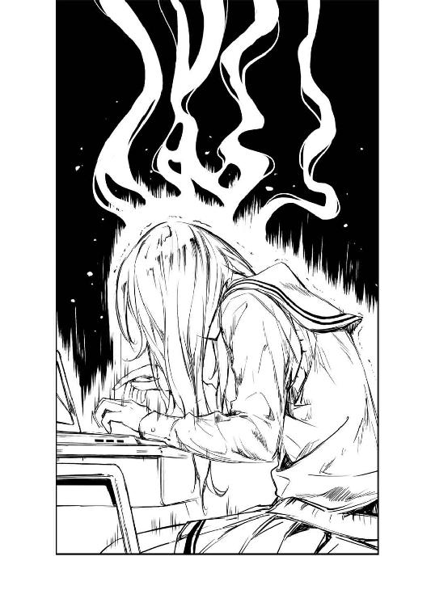
学校帰りに立ち寄った、お馴染みログハウス風の喫茶店。
そこには、ゲーム制作始動を祝い、ささやかな打ち上げを行う俺と加藤の姿があった。
「ていうか、疲れたねぇ～」
「そうだな～」
......ていうか初日から加藤のフォローをしなくてはならないくらい、今日のサークル活動は情け容赦なく俺たちの体力と精神力を削り取った。
その証拠に、加藤はメニューも見ずに次々と甘いものを注文し、しかも小倉トッピングまで追加してしまったほどだ。
さすがに俺でも二度聞き返したぞ。その、こいつらしくない〝立った〟オーダーは。
「わたし、今日初めて本物の澤村さんに会ったような気がするよ......」
「そうか、それはよかったな」
俺に比べて汚染度が一○年分も少ないなんて、なんて幸せな人間だ。
「なんていうか、澤村さんって、実は〝俺様〟なんだね」
「やっとわかってくれたか、あいつの凶悪な本性を......」
英梨々は凶悪、詩羽先輩は邪悪......
ここにも、日本語のニュアンスの難しさが見て取れるね。
「でもさ、それを安芸くんが訳知り顔で解説するのはどうかと思うけど」
「そりゃだって、あいつの一番の被害者は何を隠そうこの俺......」
「逆でしょ」
「逆？」
「安芸くんってさ、もしかして澤村さんの人格形成に致命的な影響与えてない？」
「............全然、まったく、これっぽっちも」
せめて『重要な影響』とか言うべきじゃないのかと突っ込みたかったけど、それを言い出したら自分の致命的な罪を認めてしまうことになるかもしれないのでここは全（体的には）否定しておく。
「なんていうかさ、澤村さんの言葉の端々に安芸くんの影がちらつくんだよね......だからある意味驚いたけど、戸惑いはしなかったっていうか、なんかいつも通りの自分でいられたっていうか」
「だから気のせいだっつってんだろぶっ殺すぞコノヤロウ......じゃないごめん」
いかん、あまりの酷い言い様に人格分裂しそうになった。
気を落ち着かせるため、俺は自分のアイスコーヒーを一気に喉に流し込む。
コーヒーのまろやかな苦味に、蜂蜜とガムシロップとミルクと生クリームのどぎつい甘みが絶妙に広がり......ってバランス悪すぎるだろなんだよこれ。
「ま、まぁ、英梨々はそのうちなんとかなるだろ......それよりも別の話をだな」
「じゃあ、今度は安芸くんの方の反省会だね」
「辛いです......やることなさすぎて」
「あ、ごめん」
まさか加藤に同情されるくらいに存在感が発揮できないとは思いもしなかった。
今日俺がしたことと言えば、英梨々に遮られたせいで尻切れトンボになった活動前の挨拶と、二人にさっさと帰られたせいで打ち切られた活動後の挨拶くらい......
「ま、まぁ、次頑張ればいいよね？ みんなの邪魔しない程度に」
「なにその戦力外通知！ 加藤、お前もしかして、俺がもう二度と浮上しないとでも思ってるのか？」
「するの？」
「ディレクターの仕事はこれからなんだよ！」
そう、ここで落ち込むのはまだ早い。
確かに俺は、絵も描けないし文章も書けない。もちろんヒロインにだってなれはしない（男の娘除く）。
こんな俺がゲーム制作の現場で存在感を発揮するためには、出来上がったものを監修したり、組み上げたり、制作進行をチェックしたりすることしかない。
だから今みたいに立ち上がってすぐの、誰も作業が止まってないし、何も上がってない現状ではやることないのが当たり前。
「なるほど、さすがはえらい人。わたしをゴリ押しするだけのことはあるよね？」
「いや、そっちはディレクターの仕事じゃなくてプロデューサーの旨味だから」
「ふぅん？」
「......あ、いや今のナシ」
じゃなくて『ゴリ押しとかどこの業界にもないから！ 都市伝説だから！』みたいなこと言うつもりだったのに......やっぱ俺も疲れてるんだな。
「ま、それはそうと、やっとゲーム作り始まったね～」
「そうだな、うん、やっとだ」
「一段落ついたら遊びに行きたいね～」
「って、おい、始まってすぐに終わった時の算段かよ」
「あはは、ごめん」
「ま、けど先週の不義理のこともあるしな......待ってろよ、六天場モール......っ！」
「......ええと、そこまでプレッシャー感じるなら別のところでいいよ？」
「感じてないよ!? 誰そんなデマ流したの！ ウィンドウショッピングとか恋愛映画とかバッチコイよ？」
「だから無理しなくていいよ。わたしジョ○ポリスとかでも全然楽しめるし」
「なにその上から目線ムカつく！ こうなったら意地でも六天場モール行くから！ スイーツ食べ放題の店に入ってドリンク一つしか頼まないから！ しかもストローは二つ！」
「ええと、それはこっちからして無理だし」
「よし勝った！」
「え、わたし今負けたんだ？」
そんなふうに......
しばらくの間、俺たちはまるで本物のカップルのように、お喋りに興じた。
あ、それと......
二人とも、最後まで今日の詩羽先輩については触れなかった。
※ ※ ※
「......というわけで、これがプロットの初稿。まだ基本設定とメインヒロイン周りのストーリーしかないけどね」
「早っ!?」
そして翌日、またしても放課後の視聴覚室。
昨日のジ・アンタッチャブルこと霞ヶ丘詩羽先輩は、明らかに腫らした目をこすりつつ、クリップで留められた紙束を机の上に放り出した。
表紙には、フォントＭＳＰゴシック、文字サイズ二四ポイントでこう書かれている。
『倫理君の、倫理君による、倫理観に満ち溢れた超健全ギャルゲー企画（仮）』
「......で、何この仮タイトル？」
「健全でしょ？ それならあの○○○いＣＥＲ○も文句のつけようがないわね」
「いやタイトルだけが審査対象じゃないし。同人だから倫理○構は関係ないし」
そもそも相変わらず内容に全然触れてないのに、わざわざ新しい仮タイトルつける意味あるのこれ......？
「ま、とにかく、これで今週分の作業は一応終わったことになるわよね？」
「えっと......十分すぎます」
ペラペラとめくってみたけれど、数枚のＡ４用紙がびっしりと文字で埋め尽くされていて、どう見ても俺がゴールデンウィーク中に書いた企画書の倍以上はある。
しかも多分、量だけでなく、内容はそれのさらに数倍の濃さがありそうで。
これをたった一晩って......商業作家って......
「そこで、あの、ここから先はちょっと相談なんだけど」
と、そんなふうに感嘆のあまり言葉を失っていると、詩羽先輩がなんだか申し訳なさそうな表情を見せる。
「いえ、私、この活動に参加するのが嫌と言ってる訳じゃないのよ？ だけど......」
「ああ......」
「ただ、この場での作業は、今後とも遠慮したいというか、なんというか......」
ここまでの成果を上げておきながらそんな顔されてもなんだかピンと来なかったけど、その先に続く言葉で、まぁなんか色々とその意図は透けて見えた。
「ああ、別に今日だってもう帰るとか言わないわ。何しろ社会に出たら、自分だけ仕事が先に終わってやることなくても、わざと残業して仕事の遅い同僚に勤務時間だけでも合わせないと『協調性に問題あり』とか上司に言われて、能ナシの同僚よりも評価が下がってしまう腐った組織もあるようだし」
「高校生の分際でそんな世知辛いこと言うのやめてよ!?」
......そんな感じで口調は申し訳なさそうなんだけど、その毒舌だけは相変わらず全方位に尖ったままなのは、さすが詩羽先輩というべきか。
「それと、ついでに、本当にどうでもいいことなんだけど、ちょっとだけ、お願いがもう一つ......できれば昨日の私の言動は忘れてくれると助かるんだけど」
そして最後に、誰もが見透かしている本題の方を口にした。
まぁ、非常に前置きが長かったけど、やっと言いたいことを言い終えた詩羽先輩は、ほんの少しの安堵と、ほんの少しの不安を瞳に浮かべ、俺たちを見据える。
「俺は別に気にしてないよ。そんなこと」
「ほ、本当？ 倫也君......？」
「ああ、だって、奇声上げて、ケタケタ笑い出して、酷い貧乏揺すりかまして俺たちをドン引きさせたって、詩羽先輩は詩羽先輩じゃないか」
「ドン引きしてるじゃない気にしてるじゃない......」
その不安そうな表情が思ったよりも新鮮で思ったよりも可愛かったせいで、俺は思わず後先考えず地雷原に踏み込んでしまった。
けれど、俺のそんな興味本位の反応とは対照的に......
「あんなの、クリエイターなら当たり前の習性じゃない」
「澤村さん......？」
一番煽ってきそうな奴が、なんか妙にさばさばした反応を返した。
「頭の中でモノ作るってことはさ、自分を世間から切り離して、ありえない妄想に浸って、ひたすら心削ってやることだもん。その中身が少しくらい口から零れてきたっておかしくないわよ」
「そ、そうよね？ 何しろ、私は創作しているんだもの。神様なんだもの。どうしても傲慢になるし、世界が自分の思い通りにならなかったらキレて当然だわ」
「せ、先輩......？」
と、その世にも珍しい援護射撃に共感した詩羽先輩が、『とんでもない、あたしゃ神様だよ』的な追随を見せる。
「だから支配する。世界を征服する。絵描きは色で、物書きは言葉で。だって、あたしたちが使える武器はそれだけだから」
かと思ったら神様が二柱に増えた......？
なにこの隠れ中二病患者たち？ クリエイターって皆こうなの？
「確かにそうね。それは世界の常識とかけ離れてるのかもしれない。だけど、物語を作ってる間はそうは感じない。どちらかというと世界の方がおかしいんじゃって思えてきて」
「わかる......わかるっ！ なのに、世の中には何の苦労もせず、ただ人の作品にケチをつけて自分が上だって見下す輩のなんて多いこと......っ」
しかも重度の被害妄想まで患ってるし!?
「本当、潰してやりたいわよね......そういう低脳は」
「あたし脳内で潰し方数パターン持ってる」
「澤村さん、あなたは物理的抹殺と社会的抹殺どっちが趣味？」
「まぁ、社会的がメインだけど......追い込む手段は数パターン考えてある」
「ネットを支配する力ってどのくらいまで備えてるかしら？」
「あたしの脳内スーパーハカーはかなり高性能よ？ スペック晒そうか？」
「やめろ！ お前らもうやめろ!?」
なんでこんな頭沸いた内容のときだけ気が合うんだこの二人は。
これがクリエイター脳ってやつなんだろうか......俺には完全についていけない世界だ。
あ、それと、今日ここまで加藤は一切発言してないけど、俺の傍らで子犬のようにぶるぶる震えていることだけはここに明記しておく。
......ちゃんといるんだよ？ いつも。
※ ※ ※
そして今日も、倫理観に満ち溢れた健全な創作活動が始まり......
「駄目！ 全然駄目！ 全くなってない！ ちょっと休憩！」
「は～い」
「って加藤さん、この状況でそんなに明るく答えないでよ......」
「ごめん澤村さん......あ、そういえばわたしロールケーキ持ってきたんだけど一緒に食べない？ まぁ、コンビニの安いやつだけど」
「人の話を真面目に......まぁ、いただくけど」
「コーヒーも持って来たんだけど、ブラックで大丈夫？」
「あ～、できればミルクは欲しいかも」
三○分も経たないうちに、健全につっかえたみたいだった。
「ねぇ、澤村さん」
「なに？」
「わたしってそんなにキャラ薄いかな？」
「薄いわね」
「どの辺かな、どのくらいかな」
「まんべんなく、しかも中途半端に薄いわね」
「それって無表情ってこと？」
「無表情なら感情のないキャラとして立つのよ。あなたの場合、そこまで表情が固定されてないから綾○系で押すわけにもいかない。ほんと、ここまで使えないキャラ初めて」
「う～ん、力になれなくてごめんね」
「......怒って表情崩したりしないのね」
「え、もしかして、今のってわたしの感情を引き出すためにわざと挑発したんだ。さすが澤村さん、色んな手を使ってくるね～」
「通用しないんじゃどうしようもないんだけどね」
二人のちょっとしたガールズトーク......とはとても言えないキャラ談義が、教室の反対側から、かすかに聞こえてくる。
その実りのない内容はともかく、あの二人、結構仲良くなってるっぽかった。
全然進まないキャラデザチームの、それだけが唯一の救いだ。
※ ※ ※
そしてこっちの、順調すぎるシナリオ作成チームの現状は......
「すぅぅぅぅ......」
一人、昨日と同じ廊下側の最後尾席で、机に突っ伏してすやすや眠るチームリーダー。
あの二人の言い争い......というか一方的な叱咤の声の中、よくも眠れるもんだな。
まぁ、昨夜徹夜したんだろうから仕方ないか。
「ん、んぅ......」
そういえば、去年も結構見た光景かも......
『先輩』
『......すぅ、すぅぅ......』
『先輩、詩羽先輩ってば』
『......ん～？』
『そろそろ起きて』
『......どうしたの？ 倫也君』
『いやあの、閉店だって』
『......何時？』
『二二時』
『そう、まだ話し足りないわね......ファミレスに移動しましょうか』
『いやあんた今までずっと寝てたでしょうが』
意見交換会とかファンの集いとか反省会とか、適当な理由をつけて約束しておきながら、ずっと人を放ったらかしにして寝てたことも一度や二度じゃなかったよな。
そっか、あの頃も前日は、もしかしたら数日間、ずっと徹夜で......
「ん、んぅ」
でも、全然退屈しなかったっけ。
何しろその時、俺の傍らには『恋するメトロノーム』があったから。
それに、のそりと起き出してから、物語の構想とか話してくれたもんなぁ。
あの頃、あの作品の熱狂的なファンだった俺にとっては、その、三時間のうちでたった三分しかない次巻のあらすじや新キャラ情報で、すでにお腹いっぱいだったから。
「すぅぅ......」
けれど、いつからだったか......
いや、わかってる、『恋するメトロノーム』が終わりに近づくにつれて、だった。
俺たちは、そうして二人で会うことを、だんだん遠ざけていった。
それは、先輩が作品の完結に向けて忙しくなっていったせいか、それとも......
※ ※ ※
「ほんと、この前は結構いい感じだったのになぁ、加藤さん」
「この前って......ゴールデンウィークの時の体験版？」
「そうよ、あの時の表情豊かで魅力的な加藤恵って女の子はどこに行ったのよ......？」
「そ、そんな絶賛されるほどでも......やだなぁ」
「ひるがえって今が酷評されてるってことだから照れないで欲しいんだけど」
「ん～、けど、わたしとしては何も変えてるつもりも......あ、しいて言えば」
「しいて言えば？」
「やっぱり......あの台本がよかったのかも」
「台本......？」
「あの台本、素人のわたしでも凄いと思ったもん。なんか色んな自分が詰まってるみたいで、色んな感情を持たせてくれる台詞もいっぱいで」
「それって、つまり......」
「台本通りに演技してるだけで自然と笑えてきたり、楽しくなったり、いつの間にか悲しくなったり、怒れてきたり......」
「なによ、結局、あの女......って、ちょっと倫也！」
※ ※ ※
「え......？」
と、ちょうど『忙しくなっていったせいか、それとも......』とか心の中で呟いていた瞬間、英梨々の鋭い声が、俺を現実に引き戻す。
「何してんのよ！ 寝てる女のコに触ろうとするなんて！」
「え？ お前一体なんのこと......ああっ!?」
で、そんな理不尽な言いがかりに反論しようと我が身を省みたところ、そこでは俺の右手が言い訳のできない方向に向かってするりと伸びていた。
そう、もう少しで先輩の頭に届いてしまいそうなくらいに......
「こ、これは違っ！」
「なにが違うかこの変態！」
「か、髪だからっ！ 俺はただ詩羽先輩の黒髪ロングをっ！」
「一番の萌えポイント狙いじゃないのよ！ 余計罪が重いわよこの変態！」
「え、セクハラの罪の重さってそういう観点で決まるんだ......」
「お前は余計な知識を吸収しなくていいから加藤！」
「ん、ん～......？」
恐ろしい......
これが回想シーンによる思い出補正ってやつなのか......
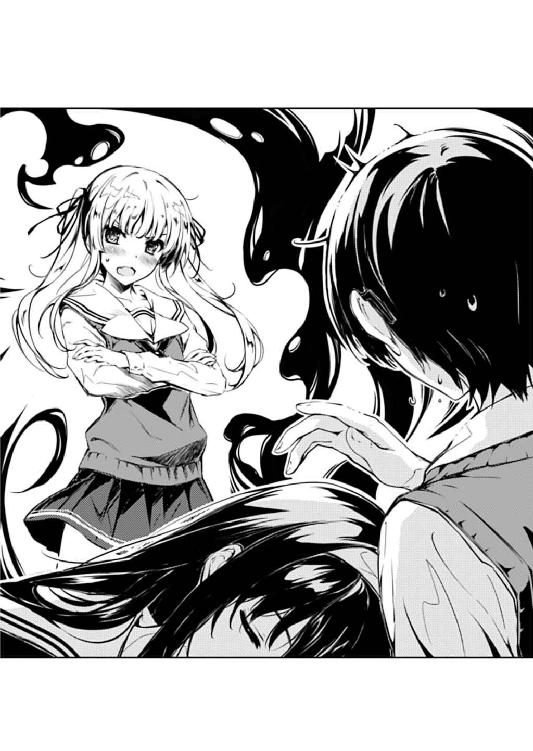
■同人ゲーム企画書（第一版）
■キャラクター（メイン二人のみ。ヒロインはあと二～三名追加予定）
・主人公（現世）：安曇誠司（あずみ・せいじ／一六歳）
転校生。親の転勤により引っ越してくる。お調子者。
・主人公（前世）：丙双真（ひのえ・そうま／一八歳）
誠司の前世（曾祖父）。責任感が強く真面目な性格。
・メインヒロイン（現世）：叶巡璃（かのう・めぐり／一六歳）
高校二年生。少しおっとりしたタイプであまり目立たないものの、よく見ると美少女。
・メインヒロイン（前世）：丙瑠璃（ひのえ・るり／一二歳）
巡璃の前世（曾祖母）。双真の実妹。病弱で色白。兄である双真を真剣に愛している。
■大まかなストーリー
・親の転勤により、とある地方都市に引っ越してきた主人公、誠司。
・家の近くの桜並木の坂で道に迷っているところ、地元の少女と出逢う。
・転校先のクラスで少女と再会する。彼女の名は叶巡璃といった。
・ある日、偶然帰り道で一緒になる誠司と巡璃。例の桜並木の坂を通る。
二人の出会いのときの話をする誠司、しかし巡璃はそれを『再会』と言う。
別れ際、巡璃はぽつりと呟いた。『おやすみなさい、お兄様』
・それから数週間が過ぎた頃。二人はお互いの気持ちを確かめ合い、恋人同士になる。
・しかしそれと時期を同じくして、巡璃の様子が少しずつ変わっていく。
誠司への異様な執着、時折見せる無意識の恐怖心、生まれる前の時代の記憶。
まるで、自分以外の誰かが自分の中にいるような......
・そして記憶の遡行に伴い、過去の恋心や一族の事件を思い出していく巡璃。
一族を滅ぼした黒幕が存在し、未だにこの街にいること。
自分は、その事実を外部に漏らさないためこの街に縛られていたという事実。
彼女が昔を思い出していくたびに、二人の周囲に不可解な出来事が起こり始める。
・何度も生命の危機に遭うことで、お互いを守るため敵と戦うことを決意する二人。
瑠璃の記憶を呼び覚まし、事件の真相に迫る巡璃。
そして双真の過去の行動に干渉し、過去の記憶を新しく『創出』する誠司。
・戦いののち危機は去り、誠司と巡璃は、いや、双真と瑠璃は七○年の時を経て結ばれる。
『これからもずっと一緒だね、お兄ちゃん』
「これはまた......思い切ったアレンジをしてきたわね」
で、詩羽先輩も目覚めたサークル活動終了間際の夕暮れ。
プロットを読み終わった英梨々は、そんな台詞とともに、感心したとも呆れたとも取れるため息をついた。
「アレンジというか、ほぼオリジナルだよなこれ」
「ええ、元々の企画書が『加藤さんをメインヒロインに』以外に何の情報もなかったから仕方なく」
「ごめんなさい申し訳ありません堪忍してください」
そんな空っぽな企画書の隙間を、ラノベ作家霞詩子先生こと豊ヶ崎学園三年Ｃ組霞ヶ丘詩羽先輩は、それはまた匂い立つような中二テイストで埋めてきた。
「あたし、霞詩子ってドロドロした恋愛モノしか書けないかと思ってた」
「たった一作品しか発表していない作家に対してそういう固定イメージを持つのはどうなのかしら柏木エリ先生？」
「ていうか英梨々、お前も『恋するメトロノーム』読んでたんだ？」
「は？ 読んでないし！ 適当にイメージで語ってるだけだし！」
「いやその発言はユーザーとしてもクリエイターとしても最低だろ......」
英梨々の言い方は色々な意味で話にならないけど、実は俺も同じようなことを考えていたというのはここだけの秘密だ。
これは確かに、今までの霞詩子カラーからは想像のつかない路線だよな......
「加藤はどう思う？ 何か意見あるか？」
「えっと......設定が凝ってると思った」
「......そうだな」
いつもいつも『ああ、聞くんじゃなかった......』と思わせてくれるリアクションはある意味貴重だ。
「こういう、いきなりの超展開って商業じゃ叩かれたりするけど、同人だといい意味で話題になりやすいのよ。だから今回はちょっと狙ってみようかなって」
「ああ、確かにそういう傾向ってありますね」
パッケージでまったり萌え学園モノを謳っておいて、いざ蓋を開けてみるとバトルだったりホラーだったり凌辱......は一般向け作品には関係ないので置いておくとして......
まぁ、とにかくそういう、途中で元ジャンルから乖離していく流れは、一昔前ならともかく、最近の商業じゃ絶対にやっちゃいけない禁じ手となっている。
『○○タンハァハァ』などとさっきまで萌えていたヒロインを突然惨殺されたときのオタクの怒りを甘く見てはいけない。ソースは本気で怒った時の俺。
しかし元がそれほど高くない上に、最初から『作り手の趣味』を認められている同人には禁じ手なんかない。いや消しは入れとかないといけないけど。特に抱き枕とかコスプレＣＤロム写真集とか見落としやすいものは気をつけないと。
それどころか、今まで一時代を築いてきた名作には、必ずどこかに超展開的なサプライズ要素があった。嘘だっ！ いや本当だ。
「どうかしら倫理君？」
「う、うん......これ、面白くなると思う」
確かにこれは、作りようによってはかなりいけそうだ。
設定や展開が凝ってるせいでシナリオやテキストに相当のスキルが必要になるとは思うけど、そもそもそのシナリオ担当が、俺が大ファンの現役ラノベ作家って時点でもはや俺にとっての神作は約束されたようなものだ。
それに何より......
「メインヒロインが前世では妹だとか、しかもどう見てもヤンデレだとか、なんてあざといのよ......」
そう、英梨々も指摘した通り、ちゃんとあざとい。
クラスメイトの女の子に『お兄ちゃん』と呼ばれ、思いっきり甘えられた上で（近○相○を）迫られるとか、なんという胸熱。
「で、これって巡璃も瑠璃も加藤さんが担当することになるの？」
「ま、そのつもりで作ったんだけれど」
「え、わたし一人でクラスメイトでひいおばあちゃんで病弱な妹なの？」
そう、しかも妹以外にも様々なキャラを付加して役柄の幅を持たせるとは......
「加藤......試しに『お兄ちゃん』て言ってみてくれ。あ、別に『お兄様』でもいいぞ？」
「え、なにそれ......」
「早く！ 上目遣いで、吐息交じりで、だだ甘な口調で！」
「で、でもわたしお姉ちゃんしかいないからどうやればいいのかわかんないよ」
「だったら俺を従兄弟の圭一くんだと思って！ ああやっぱり駄目だそれは！」
「いい加減いつまでも圭一くんにこだわるね安芸くん」
そう、『加藤恵という女の子の様々な魅力を引き出したい』という俺のコンセプトにもしっかり沿っている。
自分の色を出しながらも、ちゃんとクライアントの要求に応える......
さすがは詩羽先輩、抜かりのない優秀なプロの仕事だ。
でも......
「じゃあ、これが決定稿ってことでいい？」
「............」
「倫理君？」
たった今まで、このプロットをもとに色々な妄想を膨らませていたはずの俺は......
「......ごめん、もうちょっとだけその結論は待って」
なのに最後の〝ＧＯ〟の判断が下せない。
「どうして？」
「いや、いいんだけど、素晴らしいんだけど、完璧なんだけど、でも......」
「でも、何？」
「いや、えっと......」
目立った問題は見つからない。
加藤の妹キャラとか、ヤンデレとか、殺され演技とか、俺的見どころ一杯だ。
そもそも、霞詩子の初の伝奇作品とか、数万人のファン垂涎モノの企画だ。
でも、何かが......
伝奇とか転生とかタイムリープとか、そういうわかりやすい釣り針じゃない、もっと根本的な何かが......
何かが、引っかかってて......
「......じゃあ、今日のところは保留ね」
「すんません」
そんな俺の煮え切らない態度に、詩羽先輩が軽くため息をついて席を立つ。
その顔には、徹夜明けの疲れと、眠気と、ほんの少しばかりの落胆。
「何か直すところがあるなら今週中に言ってね。土日には終わらせたいから」
「悪い、先輩......」
「いいのよ、じゃあね」
と、先輩は、優しい言葉をかけてくれつつも、俺に一瞥をくれることもなくさっさと教室を出て行った。
後には、残された三人と、そして、少しだけ白けた雰囲気。
まぁでも、そんな嫌な雰囲気になっても仕方ない。
よくも悪くも、いつも即断即決な俺の、妙な躊躇に、俺自身が失望してる。
もしかして、これがプロデューサーの重圧ってやつなんだろうか？
大きな企画を前に動かすためには、もっと強い精神力が必要なんだろうか？
そう、それこそ自分のお気に入りのコを一押しというかゴリ押ししておいて涼しい顔をしてるような......
「どうしてこの状況でニヤけてんのよ倫也？」
「あ、いや......」
いや、ないよな？
そんな旨いこと、どこの業界にだって、ないよな......？
※ ※ ※
そして......
「一体いつまで待たせるの......？」
「......ごめんなさい」
金曜日。いつもの視聴覚室。いつものサークル活動。
日に日に温度の下がっていく、詩羽先輩の声とテンションが、俺に突き刺さる。
けれど先輩のその態度は、誰がどう見ても一方的に正しいもので。
「いい加減にしなさいよ倫也。だいたいあんたにダメ出しする資格あると思ってんの？」
そう、彼女の天敵にさえ、全面的に俺が悪いと思わせるほどに......
三日も早く上がったはずのプロットは、結局、三日の間塩漬けにされた。
しかも、そういうことをもっともやってはいけないはずの......
一番、締め切りに敏感でなくてはいけないはずの、この俺によって。
「何もしないどころか足を引っ張るだけ。作り手のモチベーションを下げるだけ。典型的な『百害あって一利なし』なディレクターね、あんた」
担当違いだけど、普段の仲は悪いけど、同じクリエイターな英梨々は、今はもう完全に詩羽先輩の味方......というか敵の敵だった。
「これってさ、もう意固地になってるだけなんじゃないの？」
「意固地......？」
「一度適当に駄目って言っちゃって、けど駄目なところが見つからずに、引っ込みがつかなくなってるだけなんじゃないの？」
なので、押し黙ってしまった詩羽先輩に代わり、今は俺の説得に回っている。
こいつの口調や態度だと、絶対にそうは見えないけれども、長い付き合いの俺にはなんとなく伝わる。
「もういいじゃない、とりあえずこの線で進めておいて、後で何か気づいたところがあったら微修正するって方向でさ」
今、この場で一番丸く収めようと頑張ってるのが、こいつなんだろうって。
だけど......
「ごめん、それは駄目だ」
「倫也!?」
「............」
怒りと呆れを半々にわかりやすく表情に織り交ぜる英梨々。
そして、ますます表情を消していく詩羽先輩。
けどそれは、加藤のフラットさとは全然違い、静かで深くて大きな怒りがどんどん沈殿していくのが見て取れる。
「多分、俺の思い描いてるものとほんの少しだけずれがあるんだ。今のうちに軌道修正しておかないと、後で大変なことになる」
それでも今の俺は、英梨々の言う『意固地』を貫くしかない。
だって、俺だってこの三日間、ただこの事態を放置してた訳じゃない。
あの数枚のプロットを、もう何百回読み込んだかわからない。
思うことや疑問点を次々と書き込んだら、紙が真っ赤になった。
それでも自分で解決できなかったところは、何度も詩羽先輩にだって聞いた。
その上で、言ってるんだ。
「その〝ずれ〟を具体的に言えないのは完全に俺の能力不足だけど......」
俺に能力が足りないのは間違いない。
納期に間に合わせられなかったのは責められて当然だ。
けど、多分......
「このまま進めると......俺が楽しくない」
俺のこの感覚は、間違ってない。
最初の頃の『なんとなく』な迷いとは違う。
今の俺には、確信がある。
このまま動かしたらいけないって。
俺のゲームじゃなくなるって。
その思いだけが、どんどん強まっていった。
ただ、その感覚を言葉として表現できなくて、もどかしくて......
「だったら自分でやればいいじゃない！」
「英梨々、それは......」
「それを言ったらおしまいでしょ澤村さん」
「な...っ!?」
そしてとうとう、俺がもっとも恐れていた方向に話が流れていこうとした瞬間......
その流れを阻止したのは、まったくもって意外な人物で。
「ディレクターがクリエイターに対してやってはいけないことがあるように、クリエイターがディレクターに言ってはいけない言葉もあるのよ。今のがそれ」
一番、そう思っててもおかしくはない、人物で。
「霞ヶ丘詩羽......っ！ あ、あなた......あたしが一体誰のために！」
「少なくとも、今のは私のためじゃない」
「っ......！」
けど、それは俺に対する助け船でもなんでもなく。
多分、彼女の矜持というか、譲れない部分にたまたま英梨々が触れただけで。
「もう、帰るわ......」
「あ......」
その証拠に、俺への態度温度は何一つ変わっていない。
視線も、口調も。
そして、その冷え切った表情も。
「またなんだ、倫理君......」
「え......」
と思ったら、最後にちょっとだけ......
「また、結論を出さないんだ......」
ほんのちょっとだけ、微妙に、その表情を歪ませた。
「............」
「安芸くん」
「......ああ、加藤か」
「って、さっきからずっとわたししかいないけど？」
「うん......」
二人が帰って、もう一時間以上も経っていた。
そして、俺がまた先輩のプロットを広げてブツブツと懊悩している間じゅう、加藤はなんか携帯をいじってソーシャルゲームらしきものを遊んでいた。
......どんだけ課金しているか気になったけど、今はそれどころじゃなかった。
「そろそろ帰ろっか？ 正門が閉まる頃だし」
「うん......」
確かに、いつもの帰る時間よりも暗くなっていた。
「考えごとなら、いつものお店で続きしない？」
「うん......」
それでも加藤は、以前みたいに帰りを急かしたり、それこそ勝手に帰ったりせず、なんとなく今まで以上に俺を気づかってくれていた。
まぁ、さっきのアレを見てしまったら、気づかうのも当然か。
「あのさ、安芸くん」
「うん......」
そして俺の方は......
たった今、またしてもサークル崩壊の危機に直面した俺の方は。
「霞ヶ丘先輩のこと......」
「なぁ、加藤......」
「え？」
そんな加藤の気づかいにも背中を押され、一つの決意を固めていた。
俺の、この懊悩を解く鍵は、もう、そこにしかない気がしていたから。
「明日、デートしよう？」
〝ガタッ〟
「......え？」
俺の、ゴリ押しメインヒロインの中にしか......
「デートしよう？ 俺たち」
「............はい？」
で、そんな明後日の方向とも取れる俺の誘いに、加藤は、いつものフラットからほんのちょっとだけずれた表情をしていた。
まぁ、ずれた方向がどっちなのかは置いといて。
「............」
「............」
そろそろ、闇に覆われようとしている教室。
なんか、いつもとはちょっと違う感じで見つめ合う二人。
あと、なんか廊下で変な音が鳴った気もしたが、今は気にしないことにした。
第五章 ラス前の章は上げて落とすのが基本ですから
そして、土曜日。
七月上旬の、そろそろ梅雨も明け、本格的に暑くなろうかという予兆を漂わせる、雲一つなく余裕で三○度を超えそうな陽射しの強い朝。
......って、よく考えたら、梅雨時の、雨が降ってる日の話、ほとんどしてなかった。
なんか季節の移り変わりを表現できてなくて申し訳ないが、じめじめしてた頃も色々あったと思いねぇってことでどうかひとつ。
「おはよ、安芸くん」
「あ、ああ」
ま、そんなしけた話はともかく、今日も加藤は、集合場所である駅前に、約束の二分前という、相変わらず話題性の少ない登場の仕方で現れた。
「ん～、晴れてよかったねぇ」
「焼けるだろそんなカッコ......」
「ん？ 大丈夫だよ？ ちゃんと日焼け止め持ってきてるし、帽子もＵＶカットのやつにしてきたし」
「じゃなかった、その服夏らしくて似合ってるな。今日もいい感じだ」
「ありがと。でも『じゃなかった』が付け足し感を加速させてるよ？」
明るい色のタンクトップの上から透け透けの白レースの半袖シャツを羽織り、頭の上には、ちょっと大きめのセーラー帽をふわりと被せ、ミニのスカートから覗く太股は、今日は白さが眩しい生足ときた。
......なんか俺が描写すると妙にオヤジ的ないやらしさが滲み出てしまうのは勘弁していただくとして、つまるところ今日も加藤はお洒落だった。
ほんっと、俺しか見せる相手がいないのにこんな凝ったコーディネイトしてきて、無駄にもほどがある。
「さてと、じゃあどこまで切符買ったらいいかな？」
「六天場モールなんだから玉崎だろ」
「本当にいいの？ わたしジョ○ポリスでとかでも構わないよ？ アキバぐるぐる回るのだって全然ＯＫだし」
「だからそうやって憐れまなくてもいいから！ 今日こそ、俺のキモオタにしてはマシな部類のリア充力を目にもの見せてやる！」
「いや、安芸くんも楽しめた方がいいかなって......ていうかその言い方ってちっとも平気そうじゃないんだけど」
だいたい俺と『アキバぐるぐる回るのだって全然ＯＫ』だなんて、二時間で本屋とゲーム屋とＣＤ屋の新品中古ショップ全部回って、各店の中古価格や在庫や売れ方を全部チェックして、しかも一通り回り終わった後にグ○ン○ァニアで記憶力テストする頃には誰も言い出さなくなるんだぞ？
俺だって、別に一人で回りたい訳じゃないんだけど......どうして誰もついてこれないんだ......
※ ※ ※
「着いたね～」
「お、おう......」
「楽しみだなぁ、今日だけでどれくらい回れるかなぁ」
というわけで、電車とシャトルバスを乗り継いで二時間弱。
目の前には、あのビッグサイトもかくやというほどの広々とした土地と巨大な建物。
これがつい先月、玉崎にオープンしたばかりの六天場モール。
中世ヨーロッパをイメージした、どこか横浜のレンガ倉庫を思わせるしっとりした外観。
南と北、二つの大きなゾーンに分かれて、あわせて二○○を超えるファッション、生活雑貨、アウトドア用品、飲食店が軒を並べる、一日いても飽きないくらいにバラエティに富んだ、まさにショッピングのための都市。
そして......カップルや家族連れで賑わう、リア充のための空間。
「............っ」
「安芸くん？ どうかした？」
「い、いや......」
その建物内に入った瞬間、俺の中にとてつもない違和感が湧き上がる。
「思ったよりも混んでるね......もうちょっと時期ずらした方が良かったかなぁ」
確かに加藤の言う通り、そろそろオープンして一月にもなろうというのに、人にぶつからずに歩くのが困難なほどの人が、この建物の中でひしめいている。
正確にはわからないけど、多分、何万人レベルの大混雑と言っていい。
けど、俺に押し寄せてきた嫌な感覚は、そんな単純な人の多さのせいじゃなくて......
「加藤......お前、平気なのか？ この無秩序が」
「そりゃ、だってバーゲンとか大体こんな感じだし」
「そ、そうなの？」
「ほんと、まるで戦争だよね」
違う、こんなの戦争なんかじゃない。
いくら人が多いと言ったって、この程度、〝あのイベント〟には程遠い。
人数にしてみれば、半分の、さらに半分にも満たないだろう。
なのに、この無駄な混雑感はどういうことなんだ......？
本当の戦争は、真に鍛えられた戦士たちは、もっと整然と戦うものだろ？
「はいそこ......走らないで......ゆっくり進んでくださ～い」
「あ、安芸くん!?」
そうだ、俺のこの違和感は、周りの客層とのギャップによるものじゃない。
一般参加者のマナーの悪さにあてられたせいだ。
一体なんなんだよこれは？ 俺の愛したコミ○ットの精神はどこへ行ってしまったんだ？ お前らちゃんとカタログ読んでるか？
「こちらには並ばないでください......最後尾はこちらではございません......一度外に出て、スロープをず～っと下っていってくださ～い......」
だいたいこいつら、なんで偉そうにお客様ヅラしてんだよ。こういう場所では全員が参加者としての自覚を持って......ああ、いや、この人たちは正しく客なんだっけ？
「あ、安芸くんしっかりして!? い、医務室！」
「医務室はやめて......本が買えなくなっちゃう......」
俺、今、どこにいるんだったっけ......西館？ 東館？ それとも企業......？
※ ※ ※
「......ごめん、本当申し訳ない」
「ううん、こっちこそごめんね？」
というわけで、六天場モールに到着して、たった一五分後。
そこには、入館した瞬間に混沌に飲み込まれ、撤退を余儀なくされ、フードコートでアイスコーヒーをすすりつつ荒い息を吐く俺の姿があったとさ。
......やってくれたぜ六天場モール。
まさにこれぞ『アウェーの洗礼』ってくらいの歓迎っぷりじゃないか。
開始早々、あっという間にディフェンスを崩されて失点した上に、センターバックが一発退場喰らって一○人で戦う羽目になったような感覚だ。
「やっぱり、もう帰ろうか？」
「いや、帰らない」
「安芸くん......」
だけど......
そこまで無様を晒しておいてなんだけど、まだ終われない。
俺たちの戦いは、始まったばかりだから......いやこれは割とマジで。
この程度で次回に期待を持ち越したら加藤に申し訳が立たな過ぎるだろ割とマジで。
「そんなわけでさ、悪いけど、あと三○分だけここで休ませてくれ」
「そりゃ、わたしは全然いいんだけど」
「そしたらその後は、きっとお前の役に立つ安芸倫也でいることを約束するから」
「役に立つ立たないって話じゃなくて......ここにいても面白くないなら、残ってたってしょうがないでしょ？」
「いや、多分大丈夫......俺も楽しめそうな戦い方を見つけたから」
「そうなの？」
英梨々は、言った。
アウェーでは、とにかく笑顔で引き分け狙いで行けって。
そして俺は、こう反論したんだ。
『俺は、いつでも、いつもの俺で勝ちたい』って......
「なぁ、加藤......」
「なに？」
確かに今日、俺はいきなりアウェーの洗礼を受けた。
「お前さ、出かける前に色々チェックしてるよな？ 今日、どこを回ろうかって」
「まぁ、そりゃ」
けれど今、この早すぎるハーフタイムで気づいたんだ。
ホームと同じメンタルを保てれば......
ホームと同じ、あるいは似たような武器さえ手に入れれば......って。
「じゃあ、その店、全部教えてくれよ」
「あ、でも、そんなに無理しなくても......」
「いいから、全部教えて。このフロアマップで指し示すだけでいい」
そして俺の手には、六天場モールのフロアマップ。
フードコートの片隅の棚で見つけた、俺の、新たなる武器だ。
「けどわたし、かなりたくさんのお店チェックしちゃったんだよね......まさかこんなに混んでるって知らなかったから」
「いいよ。とにかくまずは全部だ」
「安芸くん？」
そんなのは想定の範囲内。
だって、イベントに来たら誰でも、回れる回れないは別にして、気になったサークルは全部チェックするもんだろ？
いや、イベントじゃなくてショッピングだけど。サークルじゃなくてショップだけど。
「じゃあ、えっと......まずは『ルル・ビアンカ』。でもここ高いから見るだけになっちゃうし、飛ばしてもいいけど」
「いいや、ウィンドウショッピングは重要だろ......イーストアベニュー二○一二だな」
と、広げたマップにペンで印を打つ。
もちろん、『ルル・ビアンカ』のスペース......場所だ。
「それから『バーニング・ロス』......ここ秋物の新作でいいのがあってさ」
「七月でもう秋物なのかよ。よくわからん世界だな......ノースストリート七四三、と」
「それに『フォルテシモ』......今のバッグがちょっとヘタってきちゃって」
「同じくノースストリート六二二......ここ、さっきの店に近いから順路的には連続だな」
「それから、『トゥルーブルー』と『セルロース』と......あ、『ストラスブール』も」
「よっしゃ、どんどん来い！」
結局加藤は、なんだかんだ言いながらお目当ての店を一○以上も口にした。
俺にとっては、どの店の名前も、まったく意味不明な暗号を聞かされているようなもので、そこに何が売ってるかとか、その商品がどう凄くてなぜ欲しいのかとか、さっぱりわからなかった。
けれどそれは、どっちもどっち。
非オタが俺たちのチェックしたサークル名を聞いた時だってそう思うはず。
このジャンルが今どう熱いのかとか、その中でもこの作家のこのジャンルにおける役割や重要性とか、あと、どうしてこのカップリングでないと許せないのかとか......
そんな俺の、わかる人にしかわからない発言を、加藤はいつも平気で受け流して......いや、受け止めてくれていた。多分。
だったら俺だって、できるし、やれるし、やってみせる。
それも、楽しみながら......
「導線は......うん、こっちだな。となると順路をこう結んで、西から東......いや、南から北への流れはこうで......」
俺たちオタクのホームでの戦法は、決してリア充の非常識なんかじゃない。
使い方によっては、ここでも、どこでも通用する、しっかりとしたルールや手段だ。
そして俺は、それを最大限活用できるほど鍛えられているはずだ。
「じゃあ加藤......待たせたな」
「安芸くん......？」
大丈夫、このサークルマップ......じゃないけど、宝の地図さえあれば、俺は無敵だ。
「さあ、アウェーでも勝ちに行くぞ......逆転だ！」
さっきまでの嫌な汗は、いつの間にか収まっていた。
※ ※ ※
「お待たせ～」
「おう、お目当てのモノは買えたか？」
「うん！ 危なかった～、わたしのサイズあと一着しかなかったよ」
加藤がレジから息弾ませて戻ってくると、俺はその手にあった袋を受け取り、最初に文具店で調達しておいた特大のペーパーバッグに放り込む。
本当は、いつもの背負い鞄があればもっと効率的なんだけど、それはさすがにこのアウェーでは使えないユニフォームだ。
「さてと、じゃ次の店目指すか。今のところ予定より一五分押しだな」
「え、そっか、結構迷っちゃったんだなぁ」
「別にいい、それがショッピングの醍醐味だろ」
「うん、でも......待ってる間、退屈じゃなかった？」
「とんでもない」
それは見栄でも気づかいでもなんでもない。
俺は加藤がどの店に入っても、隅っこの壁に背中を預け、必死で『話しかけるなオーラ』を漂わせつつ買い物が終わるのをじっと待つという姿勢を崩さなかった。
だからといってその時間、何もせずにぼうっと店内を眺めてたり、誰ともすれ違わない携帯ゲームに興じていたりとか、そんな無駄な時間を過ごしてるほど暇じゃない。
なにしろ、加藤が服や小物のデザインに目を輝かせ、その値札に目を飛び出させているくらいの時間じゃ足りないくらいなんだ......
「というわけでこの先、お前には二つの選択肢がある。次の目的地である『ラノレフローレ』に行くか、それとも一つ飛ばして『ジュリー・サンダー』の方に行くか」
「そっか......」
「ちなみに、『ラノレフローレ』はここからちょっと離れてる上に、その近くに加藤がリストアップした店が他に一軒もない。俺たちから見たら僻地だ」
「うん」
「そして『ジュリー・サンダー』は、『ラノレフローレ』とはまるで反対側な上に、ここから続きで三軒も目的地が重なってて、ここを外す手はない」
「なるほどぉ......」
「というわけで加藤、君はどこに落ちたい？ じゃなくて行きたい？」
次から次へと変わる状況に対応するための、最新の作戦立案。
不可能と思われる作戦を成功させるための順路検索。
どれだけ考えても唯一の正解はない。複数の選択肢の中から可能性の高いモノを選びながら、バックアッププランも押さえつつ、しかも現場の状況を見ながらそれらをフレキシブルに切り替えながら対応する。
そんな頭を使う戦い方をしている以上、余る時間なんてあるわけがなかった。
「う～んとね......じゃあ、『ラノレフローレ』」
「そっちか......」
「せっかくここまで来たんだし、ちょっとくらい遅れても安芸くんがフォローしてくれそうだし......駄目かな？」
「いや、それだ。俺もその答えを待ってた」
効率を考えれば『ジュリー・サンダー』を選ぶのが妥当だけど、敢えて加藤はそうしなかった。
......加藤が、俺にワガママを言い出した。
これってつまり、この場所でも少しずつ、俺を信頼し始めてくれているってこと。
「じゃあ、行くぞ加藤！ ちょっと早足で歩くけど、俺にピッタリついてこい」
「了解！」
そして今日の俺は、加藤のそういうワガママを全力でサポートするのが役割だ。
それが俺の......加藤が買い物をしてる時の、店員の『ねぇ彼氏～、彼氏はどっちがお気に入り？』を避けるために知らんぷりしてる俺の、せめてもの罪滅ぼしだから......
※ ※ ※
「加藤、そっちじゃない、右に寄れ、右！」
「う、うん」
ウエストストリートを直進し、一度セントラルコートに出てから『ラノレフローレ』のあるサウスアベニューを目指す。
そんな、そこそこ単純な順路でも、行き交う客の数がハンパじゃないため加藤の足はたびたび止まる。
「がんばれ！ あと少しでサウスアベニューだ」
俺はそのたびに励ましの声を掛ける......決して責めてるわけじゃないんだからね？
そして加藤が足を取られるたびに秒単位で時間は過ぎていき、当初の予定到着時刻が分単位でずれていく。
けれど俺もそのたびごとに自分に言い聞かせる。
『待て、慌てるな、これは六天場モールの罠だ』と......
人混みは確かに凄いけど、それでもひしめき合っているというほどじゃない。
ただ、オープンして間もないショッピング街は雑然とし過ぎてて、ストリートの左右どちらを歩くのかすらわかっていない客が無秩序にぶつかり合う。
だからこそ、前に歩くスピードよりも、左右に細かく振れるフットワークが重要になってくるんだけど、そういう人混みでの機敏な動作に慣れていない加藤は、どうしても俺とは違って一般客並みの移動速度しか出せない。
しかし、このままではまずい......
なにしろここのストリートが終わると、次はサウスコートにたどり着くまでの避けては通れぬ難関、エスカレーターだ。
多分、もうあそこで時間は稼げない。取り戻すことは不可能。
なぜなら......
「うわ、なんか急に人だかりが増えてきたね」
「ああ......」
思った通り、エスカレーター前のホールは、遠目で見ても上り口付近が大混雑していてなかなか前に進めない状態になっている。
もともと人が多い通路の、さらにほとんどがその狭いエスカレーターに殺到するせいで完全に詰まってしまう。
しかもここは手慣れたスタッフのいるイベント会場とは違い、できたばかりのショッピングモールだ。
どれだけ混雑しても、ホールにジグザグにロープを張って順路を作ったりとか、『エスカレーターは歩かないで～、一段ずつ空けて立ち止まってお乗りください～！』とか言って統制を取ってくれるお兄さんやお姉さんもいない。
けど、だからと言ってルール無用の割り込みや、ステップの右側に寄って歩いて上るわけにはいかない。
それが俺の守るべきホームの掟だ。
「どうする安芸くん？ 一度建物の外に回る？」
「いや、それだとかえって時間を食う。どれだけ混んでてもここが最短なんだ」
「そうなんだぁ......これ抜けるのに一○分くらいかかりそうだね」
「......そうはさせない」
ならばどうする......？
そう、エスカレーターに到達するまでの、この長い直線で時間を稼ぐしかない。
ただし走らず、そして人にぶつかるほどにはスピードを上げず。
周囲に気を配り、我を出さず、持ってるスキルを最大限に活かし。
そう、アウェーに溶け込みつつ、自分の色を出すんだ。
行くんだ、安芸倫也......選ばれた徹夜禁止のイベント戦士よ。
「加藤！」
「え？」
「手を......来いっ！」
「あ......っ」
俺は、声とともに振り絞った勇気で加藤の手を強引に取り、歩くスピードを上げる。
最後に、勝つために......
「離すなよ！ 加藤！」
「安芸くん......」
右手には、二枚重ねして、さらに取っ手を補強したペーパーバッグ。
そして左手に......柔らかくて、温かい、加藤の右手の感触。
「うおおおおおおおぉぉぉぉぉぉぉぉ～～～！」
もちろんそのとき俺の脳内に流れているのは『翼をください』林原バージョンだ......
※ ※ ※
「ただいま～」
「おう、どうだった？」
「ん～、さすがにここは住む世界が違ったね。値札がみんな一桁は違うんだもん」
「ああ、わかる、わかるぞその気持ち......」
加藤が苦笑しながら出てきたその店は、つい先日、こいつが英梨々からもらったリボンを扱ってる英国ブランドのショップだった。
とりあえず、一度も行ったことがないというので道案内はしたが『行かなきゃ良かったって感想しか出てこないぞ？』という俺の忠告をしっかり身に刻んできたようだ。
まぁ、それはともかくとして......
「じゃあ、とりあえずこれで一通り回ったな」
「あ、うん」
店を訪れるたびにその位置を塗りつぶしていったマップは、もう真っ赤に変色していた。
この広大で大量の人が行き交うモールを縦横無尽に歩き回り、二○近くのショップを回ったにもかかわらず、まだ時計が指していた時間は二時ちょっと過ぎだった。
「腹減ったな～」
「だね」
まぁ、まだ遅めのイタリアンランチとかスイーツ食べ放題とかいう試練は残ってるけど、とりあえず一つの大きな山は越えた。
それも、ほぼ当初の予定通りの時間に。
最初に三〇分ほど出遅れたにしては、なかなかの成果と言えるんじゃないだろうか。
「さてと、それじゃセントラルコートの方に戻るか」
「あ、ちょっと待って安芸くん」
「ん？」
「あのね......悪いんだけど、もう一軒回ってもいいかな？」
と、今になって加藤が調子づいてきたのか、さらにちょっとワガママを言い出した。
けど......
「ああ、構わないぞ？ どっち行く？」
さっきも誓った通り、今日の俺は加藤のしたいことを全て受け止めるって決めていた。
それこそが〝今、俺が確かめるべきこと〟でもあるのだから。
「確かこっち......『アイオーン』って言うお店なんだけど」
「『アイオーン』......ああ、すぐそこじゃん。って、あれ？」
と、加藤が口にした店名を、マップの上の方で見つけた俺は、けれどその店の紹介を読んで、少し首をひねった。
「どしたの？」
「あのさ、この店って......」
「さっ、早く行こ？」
「加藤......？」
『アイオーン』って、この店......
「へ～、色んなタイプのがあるんだね～」
「なぁ、加藤」
「ん？」
「お前、視力悪かったっけ？」
「ううん、両目とも二・○だよ？」
「じゃあ、なんで......」
マップでの紹介によれば、この『アイオーン』って店が取り扱ってる商品は、眼鏡......
「これなんかどうかな？ 結構安芸くんに似合うと思うけど」
「え......？」
そう、加藤が使わないはずの商品を扱ってる店、だった。
「レンズはさすがに......だけど、フレームだけでも」
「お前、何を......？」
「今日、付き合ってくれたお礼だよ」
「は？」
と、加藤が選んだ眼鏡フレームが、俺の顔にふっとかかる。
その時気づいたんだけど、俺、いつの間にか自分の眼鏡を外されてた。
そんな可愛らしい悪戯を、加藤にされてたんだ......
「ありがとう、安芸くん」
「............」
あれ？ なんだこのイベント？
なんだか......なんだか......あれぇ？
「あ、もしかして細フレーム駄目だった？ じゃあ、もうちょっと待ってて？」
ちょっと待てよ、だいたい俺、午前中は迷惑掛け通しだったんだぞ？
午後だって、買い物そのものには全然つきあってないんだぞ？
「もっと太いやつ......やっぱり今かけてるくらいのがいい？」
しかも、結局自分のペースに巻き込んで、走らせたり急かしたりしたんだぞ？
そもそも、今日のこの......なんつーか、コレだって、一度ドタキャンして、しかも昨日急に誘い直してとか、色々と無茶振りだらけなんだぞ？
なのに、なんで......
「加藤......」
「ん～？」
駄目だ、ここは落とさないと。
理不尽に怒ったり、オタクネタで誤魔化したりして、加藤の真心を台無しにしないと。
でないと、俺は......
「じゃあ、俺は帽子ってことで......」
「え？」
「向かい、帽子屋だし、だから......」
「......だから？」
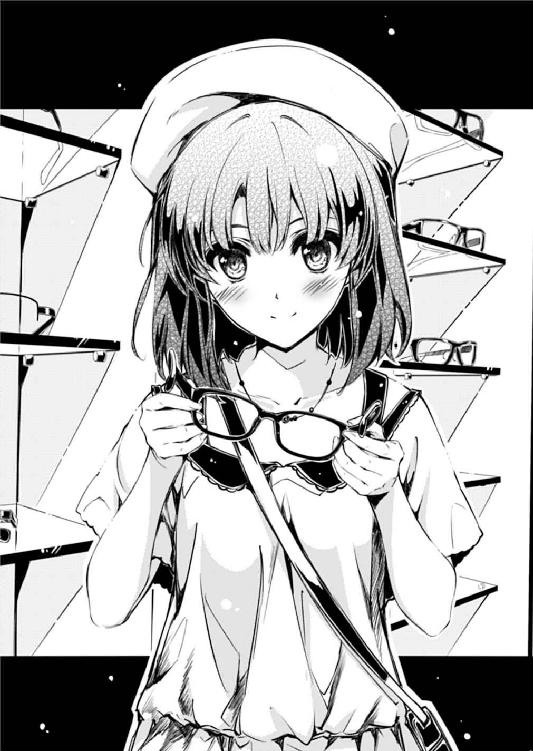
「その代わり、俺にはどういうのがいいかわからないから、加藤が選べよ？」
「............ありがと」
なのに、なんなんだよ......
なんでこんな、萌えゲーみたいなオチの付け方しようとしてんだよ、俺......
「うん、ありがとう、安芸くん！」
「だからそこで弾けるように笑うな馬鹿！ それだとキャラが立っちまうだろ！」
「え、わたしって立っちゃ駄目なんだっけ......？」
いや、駄目なことじゃないんだけど......けど......
けど、それは、マズいことだろ。
※ ※ ※
「すげぇ！ 今まで行ったことなかったから気づかなかったけど、女の子さえ一緒なら天国だったんだなスイーツ食べ放題っ......ありがとう加藤！」
「ま、まぁ、そんなに感謝されると......むしろ退くけど」
そしてショッピングを済ませた俺たちが続いて入ったのは、センターコートのスイーツバイキング。
常にカップルや女の子連れだけで賑わっている、いつもはＫＥＥＰ ＯＵＴな店内に、今日の俺は加藤という免罪符を引き連れて堂々と居座っていた。
「お、このタルトいけるぞ！ 三種類のベリーがたっぷりで、複雑な酸味が利いてるところにカスタードクリームの過剰な甘さがガツンと来ていいバランス保ってるわ！」
「そ、それわよかったね......どうでも」
最初は『どんな拷問だよ』とか尻込みしてたけど、カウンターに並べられた色とりどりのスイーツを次々と試食していくに従い、そんなしょっぱい考えは口中に漂う麻薬的な甘さに覆われていった。
「紅茶シフォンも最高！ とろけるように柔らかくて香り高いシフォンケーキに、たっぷりと盛られた生クリームが全然くどくなくマッチして、一緒に口の中ですうっと溶けていくこの独特の食感！」
「相変わらずボキャブラリー豊富だね......無駄に」
そうだよ、なんで忘れていたんだ......
子供の頃、誰だってアイスやケーキがあんなに好きだったじゃないか。
誕生日やクリスマスのホールケーキをいつか一人で丸ごと食いたいとか思ってたじゃないか。
男の子は、いつの間にあの頃の純粋な気持ちを忘れてしまったんだ。
そして大人は、どうしてあの頃の記憶を間違っていると糾弾してしまうんだ。
「果物の豊富なビタミンと、スポンジの炭水化物が疲れた体を癒してくれるけど、クリームの糖質と脂質が過剰に蓄積されてしまうというジレンマ！ ああっ、しかしこれは美味い！ やめられない！」
「って、安芸くん、それで一二個目......」
そうだよ大人の男が喫茶店でパフェ頼むのの何が悪いんだ。
男四人で全員がデザートだけ頼んでもお願いだから退かないでよ店員さん！
「それにしてもさ、オタクの人って何事についても熱く語るってイメージがあったけど、まさかスイーツについても当てはまるとは思わなかったよ......」
「そりゃオタクってのは、いいものは何であれ皆に触れてもらいたい、楽しんでもらいたいっていう崇高な自己犠牲精神で成り立ってるからな」
「......そんな信者特有の澄み切った目で言われても反応に困るよ」
「うん、これもうまい！ 加藤も一口食べるか？ あ～ん」
「ううん、御免です」
「あ、そ」
加藤に思いっきり冷たく拒絶されたケーキの欠片は、そのまま俺の口にあっさり飲み込まれていく。
うん、さっきまで二人の間に漂っていた甘酸っぱい空気は、いつの間にか、ものの見事に払拭されてしまったな。主に俺のおかげで。
「けど、楽しかったね今日」
「まぁ、思ったよりはな～」
ケーキをぱくつきまくる俺と、見てるだけでお腹いっぱいな加藤という、普通なら男女逆のちょっと痛々しいコンビは、それでもさっきまでの買い物行脚を笑顔で振り返るほどには楽しい時間を共有してた。
「また来たいなぁ。チェックしてなかったお店でも良さそうなところ一杯あったし、なにしろこれだけ広いと一日じゃとても回りきれないしね」
「なら次回は早朝から並んで開店と同時に突入、最初に壁サークル......じゃなくて人気店でお目当ての商品をゲットした後、島中......じゃなくて他の店をゆっくり冷やかす戦法で行こうか」
回る店の数だけでなく成果にもこだわるなら、仲間を増やして共同購入チームを結成するのも手だが、さすがにこういった買い物は本人の一期一会が基本だよな。
「にしても、安芸くん凄かったよね。わたしだけなら半分も回れなかったよ」
「オタクの物欲をなめるなよ」
「自分のものはひとっつも買い物してないのに？」
と、加藤は手に入れたばかりの新しい帽子を手元でくるくる回して遊んでいる。
「人が本当に欲しい物を手に入れた瞬間の、何物にも代え難い嬉しさを知ってるからな」
で、今、俺がかけている眼鏡にはレンズがない代わりにタグがある。ちょっと不便。
「そういう考え方が布教活動に繋がっていくんだね」
「だから布教ってのは、元は純粋な親切心から始まってんだよ」
「ありがたいときもあるけど、超うざいときもあるよね」
「超とか使うなｊｋ」
「あはは、なにそれ」
うん、楽しい。
普通が、楽しい。
甘酸っぱくなくても、いつもの俺たちのテンションのままでも、十分に楽しい。
普通に出かけて、普通に失敗して、普通にリカバーして、普通に二人で歩いて、普通に手を繋いで、普通にプレゼント交換して、普通に甘いもの食べて、普通にお喋りしてる。
加藤のまま、俺のまま。
大したサプライズもなく、ただお互いのコミュニケーションで楽しい時間を作ってる。
加藤は自分の買った服やアクセサリについて色々と解説してくれるけど、よくわからない俺はそれをことごとくオタクネタに歪め。
けど向こうはそんな仕打ちをあんま気にする様子もなく、適当にツッコミを入れてさらりと流し、また性懲りもなく俺のついて行けないネタを振る。
そんなオタクと一般人の、ちょっと普通とは違うけど、全然運命っぽくない会話が、こんなにも楽しい。
けれど、だからこそ......
こんなにも楽しいからこそ、言わなくちゃならないことがある。
「なぁ、加藤......」
「ん？ なに？」
「悪いけど俺、帰り、送れない」
ここでの目的は、もう達成したから。
「今すぐ、行かなくちゃならないところがあるんだ......」
今は、新たな目的に向かって、立ち止まってなんかいられないから......
第六章 楽よね、回想シーン
──豊ヶ崎に入学してすぐ。
俺が、中学時代に受けた心の傷がもとで、すっかり自分を閉ざし、触るものみな傷つけていたあの頃......
なんてこともなく、今と全く同じオタクだった頃の話。
何気なく手に取った一冊の──正確にはファンタスティック文庫の発売日当日（ファンタスティックはフライングしないから）に秋葉に出かけ、平棚の新刊を（すでに切ったシリーズを除いて）全種類レジに持って行ったうちの一冊が、俺の新しく始まる高校生活を劇的に変えた。
寝食を忘れ、勉学に影響を及ぼし、アニメの視聴継続のハードルを激しく上げるほどまでに何度も読み返し、涙し、そして自分のブログやツイッターでの周囲を省みない布教活動にまで走らせた、それは魔性のライトノベル。
帯には『第四○回ファンタスティック大賞受賞 期待の新人デビュー!!』の輝かしい売り文句。
けれどその一押しっぽい煽りの割には、いつまで経っても書店の棚から減っていかない不動の在庫。
出版にあたり、応募時のタイトルが地味だと言う理由で編集部に直されたらしいその新タイトルは『恋するメトロノーム』と言った......
※ ※ ※
駅の建物を出ると、そこには数か月ぶりの景色が広がっていた。
ロータリーも、バスターミナルも、駅前公園も、さらにその先に広がる光景も、細部は変わってはいるものの、相変わらず頭の中に一巻見開きのカラー挿絵が蘇ってくるほどに再現度は高い。
そう、ここは和合市。
『恋するメトロノーム』の舞台にして、原作者・霞詩子が小中学生時代に住んでいた場所だ（四巻あとがき参照）。
そして今は、冷戦中の詩羽先輩を捜し求めて、俺が最後にたどり着いた場所だった。
六天場モールで加藤と別れた後、俺はすぐに詩羽先輩に連絡を取ろうと携帯にコールした。
でも、何度掛けても繋がらなかった。
英梨々のような瞬間湯沸かし器とは沸点が全然違うけど、一度本気で怒らせると魔法瓶のように怒りを持続するのが詩羽先輩なので、その沈黙は俺の肝を冷やした。
もしかして、また音信不通の数か月が続くのか、と......
けれどその後、駄目もとで実家にかけてみたところ、先輩の母親らしき人がえらく簡単に行き先を教えてくれた。
『確か、知り合いに会いに行くって言ってたわね。中学時代のお友達かしら』
年頃の娘の親にしてはなんて大らかな情報公開ぶりだろうか。
まぁ、あれだけ親の期待に応え続けてる優等生だからこその放任なのかもしれないけど。
......でもお母さん、あなたの自慢の娘さんは、優秀な学業成績を隠れ蓑に結構好き放題やっちゃってますよ？
......まぁ、そんなこんなで、先輩の行き先の手がかりをようやくつかんだ俺は、こうして玉崎から和合市まで一時間半かけてやって来たってわけだ。
向こうを出たのがすでに夕方だったこともあり、辺りはもう暗くなっている。
こんな夜の闇の中、ただ『この街のどこかにいる』一人の女の子を見つけようだなんて、ぶっちゃけ無理ゲーとしか言いようがない。
それでも俺は、この街を、今は彼女を求めてさまようしかない。
どうしても、今日中に話をしないと。
一刻も早く、俺の思いを伝えないと。
でないと、俺は......
※ ※ ※
通りを進んで最初に訪れたのは、帖文堂書店和合市駅前店。
ある意味予定調和ではあるけれど、それってつまり、先輩がいる確率が高い場所ってことで。
だってここは、一巻四八ページで、主人公、直人とメインヒロイン......だったはずの、沙由佳が出逢った場所。
そして僭越ながら、俺と詩羽先輩が、初めてお互いの存在を認識しあった場所......
『初めまして！ お会いできて感激です、霞先生！』
『あ、ありがとう......あなた、随分早くから並んでくれたんですって？』
『大丈夫です！ 徹夜してませんから。ちゃんと始発で来ましたから』
『そんなに無理しなくても......整理券、まだ半分以上余ってるらしいし』
『一番乗りできてラッキーでした。俺『恋するメトロノーム』の大ファンですから！』
『あ、えっと、それはどうも......』
『一巻なんか二○回以上読み返したし。まだ毎週読んでは泣いてるし』
『へ、へぇ、そうなんだ......そうなんだぁ』
『終盤の、直人が沙由佳のために頑張るところがいちいちツボに来て......なのにお互いが微妙にすれ違うところがまたもどかしくて』
『............』
『沙由佳の方は、こう言ったら失礼かもしれないけど、最初のうちはちょっと共感できない部分とか、いまいち考え方に納得いかない部分もあったんですよ』
『......？』
『でも、五回くらい読んだ頃になんかするっと入ってきたっていうか、ああ、そういう歴史を持った人間なんだなって』
『この声......？』
『そんな感じで、読み返してみると色々わかってくるんですよね。俺の読解力が足りないだけかもしれないけど、深いなぁって』
『この、無駄に熱くて長い喋り......？』
『ほんと、そんなこんなで昨夜は緊張のあまり眠れなくて......霞先生？』
『あなた......もしかして』
『？ なにか？』
『入学早々、職員室で山城先生とやりあってた......』
『や、山城？ なんで俺の担任の名前を......？』
『バイトを認めろって一時間以上も......今みたいに職員室中に響く声で』
『っていうか、なぜ豊ヶ崎学園の職員室での出来事を霞先生が？』
『それは、その......』
『......あれ？』
『............』
『えっと、こっちもつかぬことを伺いますけど、この前の全国模試で表彰されてたりとか？』
『やっぱりあなた......確か、安芸君、だっけ？』
『......って、ええっ！ 二年の霞ヶ丘詩羽!? なにそれ霞詩子ってほとんどまんまじゃん！ すっごいやっつけなペンネーム！』
『ちょっと、大声で本名呼ばないで......あとファンを名乗る割には失礼ねあなた』
あれは二巻発売後の重版御礼サイン会だったっけ。
ほぼ初対面でドン引きさせてからもう一年......
先輩にとっては、作家として初めてのサイン会で初めてサインした相手が、実は同じ学校の後輩だったとか、運命と言うより悪夢だっただろうなぁ......
......そんな懐かしい出来事に思いを馳せながらも、俺は三階建てのその本屋の各フロアを、隅々まで見て回った。
でも、どこを探しても、長い黒髪の美人が自分の作品を目立つところに並べ直している場面にはお目にかからなかった。
......ここだけじゃなく、大抵どこの本屋でもやるんだよな、あの人。
※ ※ ※
それからも、口は悪くてもなんだかんだで人のいい先輩は、俺みたいなフーリガンにさえ嫌な顔ひとつどころかいっぱいしながら話をしてくれるようになった。
だけど、校内じゃ作家やってるってのは秘密だったから、俺たちが言葉を交わしたのは、大抵がこの和合市駅の周辺だった。
自分がハマりまくった作品の聖地で、しかも原作者から直接シーン解説をしてもらえるとか、あの頃の俺は、あの作品において一番幸せなファンだったのかもしれない。
他にも、色んな話をこの街でした。
『恋するメトロノーム』の今後の展開とか、ラノベ界隈におけるこの作品の位置づけとか、メディアミックスの要望とか、ヒロイン論とか、主人公爆発し論とか......
色んな話といいながらも、二人ともまるっきり作品限定ってところがオタク作家とオタクファンらしいような気もするけど。
それでも俺たちは、この街で、駅前の安っぽいファーストフード店で......
たくさん、夢を語った。
『ちょっとマジで勘弁してくださいよ三巻の引き......どうなるんですかこれ......一体どうなっちゃうんですかこれ～!?』
『だから店内で騒がないの。たかが小説のストーリーごときで』
『そりゃ、神様にとっては〝ごとき〟なのかもしんないけど、その気まぐれに振り回される登場人物と読者の身にもなってほしい訳で』
『......ふふ』
『って、詩羽先輩マジ極悪。俺にはこの先の展開がまったく読めない......』
『実はね、四巻では......』
『あ～！ やめてやめて～！ 読む時の楽しみが減る～！』
『......そんなに必死で耳を塞がなくても、本当にバラす訳ないでしょ？』
『～～～っ！』
『......ってのも聞こえてないわけね。お～い倫也君』
『いてっ！ 何すんだよ先輩......』
『ちゃんと人の話を聞きなさい。というわけで逆に質問。あなたはこの先どうなると思う？ どうなるのがあなたの好み？』
『え？ なに？ 言っていいの？』
『作者が読者の感想や願望を聞くのは自然なことでしょ？ それにあくまで参考よ』
『まずですね、このダブルヒロインの拮抗具合が反則なんです。ここまで真唯がまくって来るなんて普通あり得ない』
『......てことは君は沙由佳派？』
『どっちも選べないんですよ！ だからあり得ないって言ってるわけで』
『優柔不断～、まるで直人みたい』
『そう仕向けさせる神様が悪い。すでに悪魔の所業』
『まぁ神様なんてギリシャ神話の時代から鬼畜って相場が決まってるし』
『あ、それと、あの雨の中のシーンですけど......』
『ん？ あれがどうかした？』
『あの時の、直人が沙由佳に言った台詞って、この前話した俺の妄想まんまですよね？』
『......作家ってのは日常生活のどこからでもネタを切り取ってくるものよ』
『やっぱ鬼畜......』
今年の春に、加藤と詩羽先輩と俺の三人が初めて顔を合わせたバーガー屋。
去年の秋に、二人がよく座った、駅前公園を見渡せる窓際の席。
けれどそこにも、あの、眠たい瞳をした徹夜明けの作家が、客が待っているにもかかわらずまるで席を立つ気配もなくキーボードを打ち続けている姿はなかった。
......冷静に思い返せば、いつまでもネタが尽きずに喋り続けてる俺と合わせて、周りには迷惑極まりなかったんだろうなぁ。
※ ※ ※
来たときは、夏の訪れを告げるかのように勢いよく水を噴き出していた駅前公園の噴水は、いつの間にか止まっていた。
時計を見たら、そろそろ一一時。
電車の数もめっきり減り、駅から出てくる人たちもまばらになり、駅に入っていく人たちはほとんどいなくなって。
そんな少し寂しくなった駅の出入口を、俺は公園のベンチに座りながらぼうっと眺めていた。
こっちに来てから数時間、心当たりを回りまくったけれど結局手がかりはなく、あとは帰りの電車に乗り込む詩羽先輩を押さえる手しか思いつかない。
終電までに、あと電車は三本を残すだけ。
そのうちのどれかに、俺も乗らないと帰れない。
そこまでに捕まらなかったら、もう、今日は諦めるしかない。
冷静に考えれば、何も焦ることなんかない。
たった一日、多くて二日会えないだけ。
月曜に、教室まで押しかけてちょっと話せばあっさり解決する問題のはず。
......けど、俺たちには、三か月以上も会わなかった、口もきかなかった歴史が、ほんの少し前に横たわってる。
お互い、すぐには謝らなかったことが、仲直りしなかったことが、あんなにも深い溝を作ってしまったことを覚えている。
出会った夏。
語らった秋。
そして、一度は決別した冬。
そう、あの日はやっぱり雪だった......何がやっぱりなのかはさておき。
『読めませんよ、こんなの......』
『大丈夫よ、あなたがバラすなんて思ってないし、編集さんの許可も貰ってる』
『なんでそんな......俺、知りたくないです』
『世の中に出る前に、読んで欲しいんだけどな』
『どうして？』
『できれば、認めてもらいたいから、倫也君に』
『だから、なんで......』
『............』
『俺、最終巻がちゃんと本屋に並んだら、絶対買って、いくらでも感想言います。それに、どんな展開でも、先輩が書いたものなら絶対に認めますから』
『そんなのただの盲目的な追従じゃない。私が欲しいのはそんな感想じゃない』
『じゃあ先輩は、俺に何を求めてるんですか......？』
『読めばわかる......かもしれない』
『かもしれない......って』
『あなたが、この結末から何を感じ取るのか......その上で、どんな答えをくれるのか』
『............』
『......もう一度聞くわよ？ ここにある最終回の初稿、どうしても読んでくれないの？』
『......お断りします』
『......っ』
『だって俺は、この作品に責任を持てません』
『どうして......？』
『............』
『何も、言ってはくれないの？』
『......っ！ 言わなきゃわかんないのかよ!?』
『え......』
『そんなの、大ファンだからに決まってんだろ！』
最終巻の先読みとダメ出し......
それは、ファンとしてはあり得ないほどの、とんでもない特権だった。
けれど俺は、先輩の優しさごと、その申し出を拒絶した。
最終回そのものを読みたくないって気持ちもあった。
『恋するメトロノーム』という作品に、いつまでも触れていたかった。
けれどそれが叶わないのなら、せめて結末は、本当の最後の日に迎えたかった。
混じりけのない作品だけのメッセージを受け取り、純粋に翻弄されたかった。
でも、そんな俺というファンの気持ちは、結局、最後まで詩羽先輩に伝わらなかった。
それは、彼女のその後の表情や態度からも明らかだった。
そして多分、あの時の霞詩子という作家の気持ちも、結局、最後まで俺に伝わらなかったんだろう。
それは、未だに俺の中に残る、このもやもやした気持ちからも明らかだった。
その後しばらくして『恋するメトロノーム』は完結した。
直人と結ばれたのは、二巻から登場した、二番目のヒロインのはずの真唯だった。
物語的には意外で、人気的には順当なその結末については、今でも一部のファンの間で激しい論争となっている。
※ ※ ※
それから時間は、駅前の時計が一一時四○分を指し示すまで進んだ。
結局その間、駅に入っていく人たちの数は五○人にも満たず、その中に黒髪ロングの眠たそうな美人は一人も見当たらなかった。
相変わらず本数の少ない電車は、けれど二本ほど俺を置いて発車し、あとは終電がホームに残っているだけ。
「帰るか......」
ため息とともに、久しぶりの声を振り絞る。
そして、自分の声に促されるようにベンチを立つと、ゆっくり駅の改札へ向かう。
結局、あんなに時間をかけながら、なんの成果もないまま徒労感にまみれて帰宅する。
何もかも中途半端なまま、色んな人に迷惑をかけたまま、週明けに具体的なプランを持たないまま、この週末を悶々と......
『じゃあ、ここでお別れね』
『最終巻、楽しみにしててね』
『さよなら、〝倫理〟君』
「......あ」
改札をくぐろうとしたとき、その半年前に交わした別れの挨拶がふいに頭をかすめた。
それは、俺の呼び名が『倫也』から『倫理』に変わった瞬間の......
公園から改札に至るまでの、ほんのちょっとの寄り道の......
「あ、あ......っ！」
その場所の映像が脳内に蘇った瞬間、俺は改札から回れ右をして全力で駅の外へと駆け出していた。
もし空振りだったら終電も逃してしまうとか。
もしそこに本当にいたとしても、どうやって捜せばいいのかわからないとか。
そんな些細なことは、とっくに頭の中から消えていた。
「いた......」
そんな俺の向こう見ずな行動が、とうとう神の同情を買ったのか......
あまりにも簡単に、それは見つかった。
「いた......っ！」
窓ガラス越しに、艶のある長い黒髪の後ろ姿が。
そこは駅から徒歩三分。駅前のビルの中でも一番高くそびえ立つ、このあたりでは一番高級な宿泊施設。
『ね』
『はい？』
『今日、泊まっていかない？』
『っ......今そういう冗談言わないでよ先輩！』
ホテルジェファーソン和合。
色々と痛すぎて、いたたまれなすぎて、封印していた記憶の眠る場所。
けれどやっぱり、今日も、その思い出の場所の、ロビーにあるカフェに......
詩羽先輩は、いた。
「先輩！ 詩羽先輩！」
俺は、窓ガラスを思いっきり叩きながら先輩の名を叫ぶ。
あの後ろ姿は絶対に見間違いなんかじゃない。
それに、たとえ見間違いだとしても、今、ここで躊躇する理由なんかない。
「先輩ぃぃぃぃぃ～～～！！！」
〝どんどんどん〟 どんどんどんどん！〟
そんな俺の常軌を逸した行動に、カフェにいた人たちが一斉にこちらを向き......
そして、奥のテーブルにいた黒髪ロングの彼女だけが、一瞬こちらを見て、即座に他人のふりしてそっぽを向いた。
酷いや、先輩......
※ ※ ※
「ねぇ、倫理君」
「は、はい......」
「死んで欲しいんだけど今すぐ」
「必死で追いかけて死にものぐるいで捜したのに冷たい!?」
ホテルのカフェのテーブル。
周囲の好奇に満ちた視線が思いっきり突き刺さる中で、俺は先輩からの超冷たい視線に晒されていた。
まるで俺のことを『人妻と関係を持った後にその娘と仲良くなり、人妻を捨てようとしたら逆ギレされて娘を他の男と結婚させようとしたから、そうはさせじと結婚式に乗り込んで娘を強奪した鬼畜男』と蔑むような目で見ている。酷いや。
「そもそも、あんな恥ずかしい真似せずに普通に自動ドアから入っていればこんなに冷たくはなかったでしょうね」
「いや、さっきまでの俺の並々ならぬ苦労を考えたらあのくらいのパフォーマンスはしなくちゃ割に合わない気がして」
「あなたは自分の苦労の大きさに見合う羞恥プレイを他人に要求するの？ いつも？」
「いや、俺もかなり恥ずかしかったよ？」
「なら尚のことあんな意味不明な真似はやめなさい」
うん正論だ。冷静になって考えてみれば俺も全面的に詩羽先輩を支持する。
だから俺があなたを見つける前にそう諭して欲しかったなと。無理だとわかってるけど。
「にしても捜しましたよ......心当たりをほとんど当たったのにことごとく空振りで」
「私、この街に来るときはいつもここに泊まってるんだけど。あなたもそのことを知ってたと思うんだけど」
いや、それはわかってたんだけど、俺の深層心理に刻まれたアレでナニが思い出すことを拒否していたというか......とも言えず。
「え、えっと......そもそも携帯が繋がればこんなことには！」
「仕方ないじゃない。夕方からずっと打ち合わせだったんだもの。それというのも......」
と、詩羽先輩がちらっと気怠そうに自分の隣を向いた瞬間......
「ちょっと詩ちゃん詩ちゃん早く紹介してよ！ 彼がＴＡＫＩ君なんでしょ？」
低く通った、けれどテンションの高い声が、身内しか知らない俺のＨＮを口にする。
「......るっさいなぁ、ちょっと黙っててよ町田さん」
「......先輩？」
と同時に、表情通り気怠げな、けれどいつもより精神年齢が肉体年齢に近めな詩羽先輩の口調がそれを緩くかき消す。
そう、詩羽先輩のテーブルには、実は最初から先客がいた。
俺の目の前に差し出された名刺に書かれた作戦目的とＩＤ......ではなく所属と名前にはこうあった。
株式会社不死川書店
不死川ファンタスティック文庫編集部
町田苑子
出版社の編集にしては珍しく上から下までビシッと黒いスーツで決めている。
けれど化粧薄め、ヒール低め、髪型ショートカットで随分と活動的にも見える。
年齢は三○を微妙に超えてる感じだけど、迂闊に確認するわけにもいかない。
「や～、けど本当に実在したのねＴＡＫＩ君って。私、最初のうち、あのサイトって、てっきり詩ちゃんが自分で作ったステマブログだと思ってたもん。でなきゃこんなポっと出の新人にあんな熱狂的なファンがつくわけないってさぁ」
「自分のところで選んだ新人賞作家に対してそこまで言う......？」
......で、その顔と髪型と服装にはかすかに覚えがある。
確か一度だけ、先輩が『前の打ち合わせが伸びちゃって』と待ち合わせ場所に三○分遅れで現れたとき、後ろでやたらと煽っていた大人げない大人の女性だ。
「ねぇＴＡＫＩ君、あなたのブログ、今後は正式にウチと連動してやっていかない？ そしたら発表前の情報や素材とかも流せるし、お互いいいことづくめよ？」
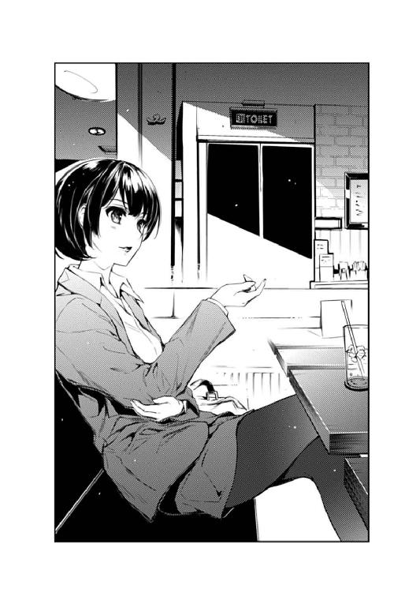
「いやそれやったら正式にステマですから！」
「なんなら公式名乗ってもいいのよ？ 私、というか弊社はあなたの宣伝力に興味があるの。なにしろあの地味すぎる典型的な『評判が良くても売れないタイトル』の筆頭だった『恋するメトロノーム』をネット通販ランキングのラノベ部門一位にのし上げたのは、間違いなくあなたのブログの功績なんだから」
「い、いやそれは過大評価ですって！」
「私に対しての過小評価でもあると思うのよね......」
「だぁ～ってねぇ？ 一巻って、出た当時はまるっきり重版かかる気配なかったのよ？ 編集長もこりゃ三巻で打ち切りだなって。私、その頃もう五巻の最終話までのプロット全部もらっちゃってたから気の毒で言い出せなくて」
「え、そんなにヤバかったの!?」
「永遠に言い出さないで欲しかったわねその情報......」
「そしたら二巻出した直後から、急に書店から追加オーダーが来始めてさ、なんでだろうってネットで検索してみたら、あなたのサイトがトップを飾ってて......いやウチの公式よりも先に出てきたのはちょっとショックだったけどね」
「あ、いや、それは御社が悪いと思うんですが」
「あの頃の公式の放置っぷりは本当に酷かったものね......」
「ま、まぁ、それはともかく！ そういうわけでこの作品の売り上げの三割に関してはあなたの功績だと編集部では分析してるのよ。どこかの勘違い作家が『本当に面白い作品なら宣伝しなくてもいつか必ず売れる』とか世迷言ほざくことがよくあるけど、ぶっちゃけそんな遅くに評判になっても、その頃にはとっくに打ち切られてるから、こっちとしてはメディアミックスとかの旨味もなくて扱いに困るのよね」
「いやそんなことユーザーにぶっちゃけていいの!?」
「私は言ってない......勘違いなんかしてない......」
「それでね、ここからが本題なんだけど、『恋するメトロノーム』のヒットで下地はできたから今度は最初から攻めていく予定なの。一巻から和合市と大々的にご当地タイアップしていくことになっててね」
「え、また舞台は和合市なんですか？」
「そりゃ、これだけ街を挙げて支援してくれるところがあるなら手放す手はないわね」
「あ、あ、じゃあ！ 次回作が同じ舞台ってことは、前作とのリンクも......？」
「察しがいいわね。同じ場所、同じ時間軸の違う登場人物たちの物語って感じで、ちょこちょこっと前作のキャラとかが絡む感じでいけたらなって思ってるんだけど」
「なるほど、霞詩子ワールド？ 共通の世界観で売っていくつもりなんですね！」
「そういうこと。だから昼間は書店さんだけでなく、作中に出てくる候補地にもご挨拶して協力をお願いしていたの」
「うおお！ 夢が広がる！ じゃ、じゃあ、それ以外にも観光協会に声かけてパンフレット作る計画とか、早めに現地のイベントホール押さえておくとか！」
「そう！ そういうことなのよ！ さすがあのＴＡＫＩ君だわ。話が早い！」
「あの、二人とも......」
「あと、鉄道会社とかバス会社を押さえるのも基本ですよね？ ラッピング電車とかどのくらい費用かかるんです？」
「それはさすがに原作もアニメも関連商品もバカ売れってところまで持って行かないと話にならないけど、最初からその線を捨てる手はないわね」
「ちょっと......」
「そういえばドメイン押さえておきました？ タイトル発表された後だと変な奴にクリティカルな名前確保されるから早めに動いといた方がいいですよ？」
「ああ忘れてた！ 他にも作家抱えてるから、かかりっきりって訳にはいかないのよね。悪いけどあなた色々と候補になりそうなの取っといてくれない？」
「そのために必要な情報としては、タイトルとキャラ設定とキービジュアルと......」
「倫理君............っ」
「はいっっっ!?」
その声は、決して大きくない、というか今までよりも低く、小さな声だったけれど......
でも、どうやら震源の深さが相当なものだったらしく、俺の腹にまでずしんと響いた。
「まったく、この二人は絶対に会わせちゃいけないってなんとなく感じていたけれど、こうして目の当たりにしてみると想像を絶するウザさね」
「すいません先輩......」
「そんなこと言われたって喋る職業なんだもの仕方ないじゃない......」
詩羽先輩の怒りは、俺だけでなく町田さんの方にも向けられていた。
ていうかずっと年上の担当編集に対してまでその言い草ってどうなのよ。
「本当、私の周りのオタクって、どうしてみんな、こんなに語りたがりなのかしら」
「うわぁ、オタク相手に商売してるのにそのお客様を見下すような発言。自分が大物にでもなっちゃったんじゃないかって勘違いしてる痛い作家によくある中二病の一種ね。ちょっと編集部としては今後の付き合い方を考え直すレベルというか～」
「指摘した直後に実践してくれなくていいですから」
けれど、町田さんの方はめげることなく......というか、最初からまるっきり気にしていないレベルで詩羽先輩を挑発し続ける。
そうか、先輩の毒舌は日々こうやって鍛えられてるんだな。必要悪として......
「それに......」
と、詩羽先輩は、今度は正面の俺の方を見据え、そしてやっぱり深々とため息をつく。
「生まれて初めて出来たファンは、ウザいだけじゃなくてヘタレでチキンで......まったく、どうしてこんなことになっちゃったのかしら」
「あ、今の台詞ってなんかすっごくテンプレっぽくないですか？ ほら『あ～あ、私、どうしてこんなやつのこと好きになっちゃったんだろ』的な」
「......ＴＡＫＩ君、それは笑えないからこれ以上言わない方がいいわよ？」
「けどそう思いません？ あの『恋するメトロノーム』の霞詩子にしてはちょっと安易な台詞選びかな～とか」
「だからそういう意味じゃなくてね......あまりにもニアピン過ぎるというか何というか」
「え？ 町田さん今なんて言いました？ その鈍感難聴主人公でなくても聞こえないレベルのつぶやきはやめて下さいよ？」
「さて、宴もたけなわではございますが......二人とも黙れ」
今度の先輩の声は、震源地がブラジルあたりっぽかった。
「さてと......倫理君」
「はい......」
そんなこんなで、町田さんは去り際も散々詩羽先輩を煽りつつ、ようやくカフェを出ていった。
するとこの場には、さっきまでと比較するのもおこがましいほどの静寂が訪れ、俺たち一体周りにどんだけ迷惑掛けてたんだよと思い知らせてくれた。
しかしこれで失礼ながら邪魔者も消え、やっと本題に入ることができる。
「先輩、俺......」
俺は、膝の上でぎゅっと両の拳を握りしめ、改めて厳かに口を開き......
「私たちもそろそろ出ましょうか」
「まだ話始まってすらいないんですけど!?」
そして一瞬ですかされた。
「ここ、ラストオーダーが二四時なのよ。だからそろそろ出ないと」
「げ、まじ？」
時計を見ると、そろそろ、そのラストオーダーから三○分が過ぎている。
そういえば俺、結局なにも注文してなかったな......迷惑の上塗りだ。
「でも確かにこのままじゃ倫理君も無駄足だし......どうしようかしらね」
「あの、じゃあここ出て近くのファミレスにでも行きません？」
「長いの？ 話って」
「まぁ、そこそこには」
「そう......じゃあ、ついてきなさい」
「あ、はい......」
と、詩羽先輩は携帯メールのチェックが終わると伝票を手に取り俺を先導する。
だから俺は、深く考えずに先輩の後ろをひたすらついていく。
......けれどその『深く考えずに』というのがまずかった。
※ ※ ※
「............」
窓の外には、和合市の夜景が広がる。
この、都心からそこそこ離れたベッドタウンの深夜は、駅前周辺から徐々に灯りが少なくなっていき、煌めくような光の洪水とはまた違う、落ち着きのある風情だった。
「............」
静かだ。
防音完備された建物の内部は外の音を何一つ拾ってはこない。
交差点を行き交う車も、まだ営業している店も、道を歩く人も、ただその姿は目に入っても、その生活の音はここには届かない。
「............っ」
いや、その静寂に混じる、ほんの少しだけの雑音がやたらと耳に響く。
それは、俺がさっきからじっと見つめている扉の先。
ホテルの部屋の、浴室から届く、シャワーの音......
「えええええっ！ 何コレ!?」
今、この俺のいるこの場所は、ファミレスでもネカフェでもありません。
確か扉には一三二五とか書かれてたのでそれが店の名前......なわけもなく、つまりここは一三階の二五番目の部屋。
もちろん、ビル最上階のガ○トとかそういうオチじゃないよ？
つい三○分前『ついてきなさい』という詩羽先輩の言葉に、俺は深く考えずに従った。
頭の中では、ファミレスで話をした後の行動計画を頭に思い浮かべつつ。
話がだいたい一、二時間として、そこから始発までの数時間をどうやって潰すか......
詩羽先輩だけホテルに帰して、一人で朝までドリンクを友達に粘るか、それともネカフェに移動して朝までドリンクと新刊を友達に粘るか。
それに朝は松○とすき家と吉○家と東京チ○ラめしのどこにするかとか、てか牛丼決まってんのかよとか、そもそも東京じゃないのに東京チカラ○しあるのかよとか。
......そんなどうでもいいことばかり考えていたせいで、詩羽先輩がホテルの外に出たのではなく、ホテルのエレベーターに乗ったことにすら全然気づいていなかった。
「あ......ああっ!?」
そして今......とうとう、浴室のシャワー音も、止まった。
「お待たせ」
「あ、いや、その......」
浴室のドアが開くと、そこには当然ながら、ここの部屋の今日の主がいた。
白いバスローブを体に羽織り、長い黒髪をタオルで挟むように拭きながら。
「ごめんね、昼間歩き回って汗かいたから気持ち悪くって」
「ご、ごもっとも」
「倫理君も入る？」
「いや結構！」
「............」
「......っ!?」
その会話の最後、詩羽先輩はふっと力を抜いた軽い笑みを浮かべつつ、ごく自然に腰掛けた。
......俺のすぐ隣に。ベッドに。
というか何故こんなクリティカルな場所に座ってんだよ俺の馬鹿。
「ね、倫理君」
「は、はい......」
詩羽先輩が、たぶんこっちを見る。
湯上がりの石鹸とシャンプーの香り、そして効き過ぎた冷房をほんの少し和らげる人肌のぬくもりが、ふわりと俺を包むように漂う。
「ていうか俺失礼しますから！」
「......まだ何も話は終わってないけど？」
「で、でも！ 宿泊客でもない人間が部屋に入るのは禁止なんじゃ？」
「もう宿泊客よ？ 倫理君」
「いつの間に!?」
「さっき町田さんが出てったとき、彼女がフロントで手続きしてくれたって。ほら、これがそのメール」
「あんたら仲悪いふりして連携完璧だな！」
さっき、カフェを出る前にチェックしてたメールはそれか......
ていうかこの女性二人組、いったい何の得があってこんなこと？
俺にはそこまでのオタク資産価値があるとでも......？
「ね、倫理君」
「は、はい......」
そんなわけで、フラグはまったく折れる気配を見せず、また数秒前の状況に戻る。
「私を追ってきたの？」
「いや、それは......はい」
そこで嘘をついても仕方ない。
「それで、終電まで逃したの？」
「まぁ......はい」
嘘をついたら、いけない。
「ほんっと、バカなんだから......」
「......それはもう、はい」
そんな正直な俺に、詩羽先輩がちょっとだけ優しい。
それを嬉しく思う俺は、なんていうか、いけない奴だ。
「............」
「............」
先輩が、押し黙った。
そんな優しい言葉を最後にしたことで、温かい雰囲気で部屋を満たしてしまった。
「............」
「あの、先輩」
「............」
もう、問いかけても応えない。
ただ、ちょっと俺の肩にかかる重みが増えただけ。
彼女が、頭を乗せてきた、だけ。
「............」
「......寝ちゃいました？」
「そんなわけないでしょ」
「ですよね～」
それって、つまり......
後は、こっちの判断に任せるってことなんだろうか？
半年前、ネタなのか本気なのかわからないまま逃げてしまった俺に。
先輩の言う〝倫理君〟になった俺に。
「............」
「............」
教えてくれ、神様。
俺はどうすればいい？
あと何回こういう状況を彼女と繰り返せばいいんだ？
ＣＥＲ○は何も答えてくれない......教えてくれ、神よ！
※ ※ ※
窓の外には、和合市の夜景が広がる。
相変わらず、静寂なままの夜景が。
「......先輩」
「............」
部屋の中には、詩羽先輩がいる。
相変わらず、静寂なままの彼女が。
だから、その静寂を破るのは、やっぱり男である俺の役目で。
「俺、今日、六天場モール行ってきたんですよ」
「加藤さんとデート？」
「デートだったかもしれないけど、取材です」
「............」
ほんの少し、先輩の体が硬くなった気がした。
ほんの少し、先輩の体温が下がった気がした。
「電車とシャトルバス乗り継いで二時間近くかかって。しかもオープンして間もないからとんでもない人混みで。着いたら俺、いきなり気分悪くなって......」
「それでも......楽しかったんでしょ？」
「はい、すごく」
「............」
そうやって即答できるほど、本当に、楽しかった。
ダウンしかかった俺を、普通に心配してくれたこと。
それでも帰らないと意地を張った俺を、普通に受け止めたこと。
行きたい店を、正直に、包み隠さず、何の遠慮もなく並べ立てたこと。
行く先々で、きちんと買い物やウィンドウショッピングを満喫してたこと。
少しだけ予定時間をオーバーするくらいにはハマっていたこと。
それでも全部回りたいと、ちょっとだけワガママになったこと。
急ぎ足でモールを駆け回る俺に、ちょっとだけ必死でついてきたこと。
そして......嫌がらなかったこと。
ごく自然に......いや、ちょっとだけ特別に、お礼をしてくれたこと。
こっちの慣れない返礼を、やっぱり、ちょっとだけ特別に受け取ってくれたこと。
スイーツを貪り食う俺を、ちょっとだけ退きつつ普通に眺めていてくれたこと。
なんかデートっぽい会話も、適当にフラットな態度で中和してくれたこと。
そういう雰囲気に慣れてない俺を照れさせない程度に、友達っぽく振る舞ってくれたこと。
なのに途中で帰ると言い出した俺に、少しだけ、怪訝そうな顔をしてくれたこと。
けれど事情を話したら、ちゃんと納得してくれたこと。
別れ際、笑顔で送り出してくれたこと......
本当に、楽しかった......
アウェーでも、楽しかった。
相手が加藤だからこそ、アウェーに引っ張り出された訳だけど。
でも、加藤がいたから、楽しかった。
全然俺を置いていかない、けれど俺が染まることを強要しない。
俺が強く出ればうまく吸収してくれる。だってフラットだから。
俺が変な振る舞いをしても溶け込ませてくれる。だって目立たないから。
加藤が普通だから楽しかった。
俺は、楽でいられた......
「............」
「............」
そんな俺の話が一通り終わった頃には、肩にかかっていた先輩の重みも体温も、いつの間にかなくなっていた。
ただ、残り香だけがまだほんの少し漂っているだけで。
「それで......？」
ついでにその声も、またちょっと低く冷たく戻っていたりした。
「私は今、こっぴどく振られたわけ？」
「いや、そんな話はしてないから」
「じゃあ、都合良くキープしようってわけ？」
「童貞オタクにそんなハードルの高い要求しないでよ!?」
そもそもこの状況からしてビビりまくりなのに。
多分、八○パーセントの確率でからかわれていることは知っているけど。
......ついでに言えば、こっちが想定外にその気になったら『まぁ、それならそれで』ということになるような気もするけど。八○パーセントくらい。
ああ、汗かきすぎてシャワー浴びたい。それが罠だというのは知っているけど。
『このまま進めると......俺が楽しくない』
「だから、リテイクなんです......先輩のプロット」
けど俺はそんな胸の動悸を必死に押さえつつ......
やっと、本題に入った。
※ ※ ※
「先輩のプロット、確かに面白かったです。壮大で、スケールがでかくて、超大作感溢れてて......」
「それみんな同じ意味よ倫理君」
「......えっと、凄かった、に訂正で」
とうとう、始まった。
本当なら、金曜までに済ませておくはずだった、プロットのダメ出しが。
「そんなベタ褒めなのに、どうしてリテイクなの？」
「........................それは、だって、あのプロットには数世代にわたった因縁しかない。数奇な運命しかない。血のなせる宿命しかない」
「......今、その三つの表現に重複がないか喋る前に必死でチェックしてたわね？」
さんざん茶化しているようで、先輩の表情は、真剣そのものだった。
「日常を取り戻す展開がない。巡璃が......瑠璃じゃない、ただの同級生の女の子が帰ってくる結末がないんですよ」
「それは......」
「どうしてそうしたんです？ なんで、あの普通に可愛いコを見殺しにするんです？」
「だってそうしないと、瑠璃が消えてしまうもの」
いつの間にか俺たちは、ベッドの上に並んで腰掛けるんじゃなく、椅子に座り、テーブルを挟んで向かい合っている。
「瑠璃を消してしまったら、過去編に何の意味もなくなる。何世代も積み重ねてきたストーリーの根底が無駄になるのよ？」
「でも、今の誠司にとってはさ、瑠璃だけじゃなく、巡璃も大事なんじゃないの？ 特に共通パートなんかさ、記憶が戻る前の巡璃と普通に仲良くなってってるじゃん！」
「......あれが今の巡璃かどうかは判断が分かれるところね」
「それ、どういう意味？」
「だって、巡璃は生まれつき過去の記憶を継承してる。今の巡璃の人格形成に過去の記憶が関わってないわけがないわ」
「たとえそうだとしても、巡璃の本質が瑠璃だとしても、今の世界で作り上げた記憶や性格は消えていいものとは思わないよ！」
「え......」
そして、本気で議論を戦わせる。
「確かに巡璃はさ、過去の記憶に悩まされたり、振り回されたりして、自分の人生が変わったり、前世から連なる因縁の相手を好きになるのかもしれない」
喧嘩まがいに互いの意見をぶつけ合い、間違っていたら容赦なく指摘する。
時には大きな声を上げたり、机を思い切り叩いたりもする。
俺たちは、それだけ真剣に、激しくぶつかり合う。
「けどさ、普通に両親に愛されて、普通に学校に通って、普通に男の子と出逢って、恋をして......そんな、自分一人の意志や歴史や記憶だけで生きてきた部分を、もっと大切にしてもいいじゃないか！」
「っ......」
だから、先輩のバスローブの隙間から何かがこぼれそうになっているのはただ話に熱中していて気づいていないだけだ。そうに違いない。指摘するなど野暮だ。
「俺、普通の女の子と普通に遊ぶのが楽しかったんです」
端から聞いていると、きっと、すごく馬鹿馬鹿しい議論なんだろう。
「アウェーでも、加藤が......いや、巡璃がいれば楽しくなると思うんです。巡璃との普通の日常も、すごく楽しいと思うんです」
できてもいないゲームの、書かれてもいないストーリーの、ただ紙やディスプレイの上の、記号でしかないキャラクターの人生を本気になって心配して、なんとか彼や彼女を幸せに導こうとする。
「だから、運命に負けずに日常を取り戻す展開が欲しいんだ。ただの巡璃エンディングが欲しいんだ。がんじがらめな前世の因縁に、何気ない恋が勝つルートが欲しいんだ！」
でも、今ならはっきり言える。
それが、オタクなんだって......
「それって面白くなるの？」
「なる！ ......いや、少なくとも俺は楽しいとしか言いようがないけど」
「ううん、それだと無視できない。今までのあなたの感性と市場の評価を見るとね」
「だったら......いいでしょ？ 俺、巡璃ともっとイチャイチャしたいんだ！」
痛くて、熱くて、そしてキモくて。
そんな、愚かしくも愛すべき人種なんだって......少なくとも身内から見れば。
「けど......今のプロットだとそれを組み込むのは困難よ？」
「わかってます。だからずっと引っかかってたんです......先輩のプロット、ガチガチすぎて入り込む余地がなかった」
「仕方ないわよ、一番最初にその展開を切り捨てたんだもの。不純物だと思ったから」
「なら、もう一度最初から考えようよ！」
「最初、から？」
「前半の描写を追加したり、中盤にシーンを追加したり、終盤にルートそのものを追加したりとかさ......今ならまだ、間に合うでしょ？」
「............」
「先輩？」
けれどそんな俺のオタク的な熱さを、先輩はまだ受け止めかねているのか、目を伏せ、腕組みを解き、ひどく疲れた表情を見せた。
そして、しばらく逡巡した後、喉の奥から絞り出したその言葉は......
「じゃあ、瑠璃は殺しちゃうの？」
「え......」
そんな、俺が推したのとは別のキャラを、俺と同じように惜しむ声だった。
「あなたは......やっぱり、過去の因縁よりも、現在の気持ちが重要？」
「先輩......？」
それはすごく冷たくて、そして煮えたぎるような熱い吐露。
「だったら一から作り直した方が......その方が、なにもかも諦められる」
俺の主張を認めても、自分の考えも諦めきれない、悔しそうな声。
そう、詩羽先輩は、俺の暑苦しいこだわりについてこれなかったんじゃない。
ただ、彼女には彼女の、オタクとして譲れない、暑苦しいこだわりがあっただけ。
だったら俺は......
「残そうよ」
「え......」
先輩の、その冷たい熱さごと、前に進むことを決めた。
「俺、巡璃が可哀想だって言ってるけど、瑠璃だってすげー萌えるよ？ 過去の記憶をいつまでも引きずる関係も大好物だよ？」
「り......倫也君？」
「盲目的に慕ってくるところなんか悶えるよ？ 『お兄ちゃん』も『お兄様』もめっちゃアリだよ？」
「......なんだ、ただの節操なしか」
「いいじゃん節操なしで。どっちも取れる方がいいじゃん。その方がユーザーニーズにも幅広く対応できるし」
「ふふ......」
そして、俺のその決断を、先輩は普段の、ちょっと冷たい微笑を取り戻すことで認めてくれた。
今はその反応が、とてつもなく嬉しい。
「よし、じゃあ今からプロット修正な！ とりあえず選択肢を追加で、最後の最後まで巡璃か瑠璃かどちらかを選べる方向性で！」
「つまり、誰を選ぶかの結論は、最終巻まで引っ張るってことね？」
「ゲーム内ではね！」
※ ※ ※
「こんな感じ？」
「いや、もうちょっとキャラ薄めで」
「......まだ薄く？ もうそれ単なる通行人よ？」
「もうちょっとクラスメイトＢ感が欲しいんだよ......クラスメイトＡの毒にも薬にもならないボケに大したことないツッコミを入れるようなポジションのさ！」
「それで何が表現したいんだか私にはわからない......」
「心安まるヒロインっていうかさ......ちょっと癒し系に近いかな？」
「もう、だいぶ加藤さんになってると思うんだけど......」
「......誰も加藤そのまんまにしろなんて言ってないけど？」
「さっきから指定が完全にそっち向いてるわよ？」
「じゃ、じゃあ仕方ないから加藤を基準に考えようか？」
「今さらツンデレとか......」
時刻は、午前三時。
俺たちの〝修正作業〟は佳境に入っていた。
まずは巡璃のキャラ修正。
詩羽先輩が次々と上げるキャラクターの台詞サンプルを俺が見て、次から次へと修正指示を送り、先輩が指示に従って直しての繰り返し。
これで〝キャラが強すぎる〟という理由でのリテイクは三回目。
『サンプルなんだからデフォルメされてるに決まってるじゃない』という先輩のもっともらしい泣き言は全て却下。
創作って、残酷だ......
「なんていうかさ......もっと手強く、けれどチョロくないといけないんだよ」
「どうやってその二つを同居させるのよ......」
「そうだな、半歩近づくのはチョロいんだけど、それをどれだけ繰り返しても一歩近づいたことにはならないって感じ？」
「......アキレスと亀？」
「そう、そんな微妙な安らぎと、嫌な安心感と、もどかしい絶望感に悶えさせたいんだ」
「ごめんなさい、やっぱりわからない」
窓から見える夜景も、この部屋に来たときよりだいぶ光が減っていた。
先輩は相変わらず、ひっきりなしにノートのキーを打ちつつ、俺の指示を画面に反映させていく。
けれど俺は、彼女が呼ぶまでそちらを向かず、ただ徐々に闇に飲まれていく和合市の風景を瞳に焼きつける。
ちょっと冷たい態度にも思えるけど仕方ない。
なぜなら、窓に映る先輩の姿は......
「～～～っ！」
裸けてる！ じゃなくてはだけてる！ というかもうほどけてるから！
「そこまでキャラが薄いとさ、ふとした瞬間の変化にドキっとするんだって。急に可愛く見えるっていうか」
「ギャップ萌えみたいなものかしらね？」
「近いかも。ただ、その状態で固定させちゃ駄目なんだ。『あ、こいつ可愛いかも』と思った次の瞬間には今まで通りのフラットな加藤に......じゃなくてキャラに戻ってるって言うか」
「......いいわよもう加藤さんで」
「そういう可愛い瞬間を『ウェット』、いつもの感じを『フラット』って表現するとさ、配分的にはフラット、フラット、ウェット、フラット、フラット、フラット、フラット、ウェット......くらいの感じで」
「む、難しい......」
「詩羽先輩ならできる！ いや、先輩じゃなきゃできない！」
「いつか必ず○してやる......」
※ ※ ※
「うん、そう！ このちょい萌え感！ これぞ加藤恵......じゃなくて叶巡璃！」
「......じゃあ、このキャラと仲良くなる方向性でプロット直していくわね？」
午前四時。
とうとう、キャラが固まった。
......という記念すべき瞬間なのに、俺の超絶に高いテンションに比べて、詩羽先輩のそれは地を這っていた。
ていうか眠いんだろう。まぁ、俺もすごく眠いんだけどさ。
「じゃあ、今日のところはこれで......」
「ええ、あなたはもう寝てもいいわよ？」
「え、先輩は？」
「私は......そこに籠もって続きを書いてるわ」
と、先輩がノートパソコンを抱えながら指し示したのは、部屋の隅にあるユニットバスへの扉だった。
「そ、そんな......どうして？」
「その方が倫理君も安心でしょ？」
「もとから心配してませんから!?」
というか、普通なら完全に逆の立場なのにどうして俺と先輩は......
「朝までに目鼻を付けておかないといけないのよ。明日も町田さんと打ち合わせでね」
「そんな......じゃあ徹夜？」
「作家なんだからよくあることよ」
詩羽先輩は、こともなげに言う。
確かにこんなんじゃ、普段眠そうなのは当然といえば当然だ。
これでどうやってトップの成績までキープしてるんだ。本当に底が知れない人だ。
「それに、今からはプロット書きだから、その......」
「あ......」
と、その瞬間、脳裏に浮かんだ映像は二人とも同じモノだったはず。
力いっぱいキーボードを叩きつつ、何かが憑依したかのように笑い続ける詩羽先輩......
確かに、あの光景を他人に見られるのは、先輩にとっては苦痛に違いなくて。
けど......
「そんなわけで、おやすみなさ......」
「いいよ、ここで書けば」
「え？」
「それとも、俺がそっちに行くよ？ 先輩がどうしても見られるの嫌だって言うなら」
「倫理君......」
うら若き女子高生がユニットバスのトイレに腰掛けてキーボードを打つさまはちょっと便所飯っぽくて寂しすぎる。
というかトイレにノートを落としたら大惨事だ。
「だいたい、ディレクターや編集者が締め切り間際の作家に貼り付くのは当然でしょ？ 今さらなに恥ずかしがってんですか？」
「......知らないわよ？ どんな醜態さらしても」
「幻滅なんかしませんよ。だいたい幻想持つほどイメージよくないし」
そんな、徹夜のせいかなんなのか、結構身も蓋もないことを言う俺を、詩羽先輩は曇りのない笑顔を浮かべて見つめてくる。
冷静に考えれば『朝まで一緒にいて』って言ってるのと同義なんだよな......
「それじゃあ......夜が明けるまでお付き合い願いましょうか？」
「おう！ 俺が寝ちゃいそうだったら叩き起こしてよ？」
でも、別にいいじゃん。
笑ってよ、詩羽先輩。
いつも通り、クリエイターの本性をむき出しにしてよ。
俺は、そんな霞詩子先生の大ファンなんだからさ。
※ ※ ※
............なんてのは、俺の認識が甘すぎたとしか言いようがなかった。
「くそっ、くそっ、くそぉっ！」
「せ、先輩......？」
「なによコイツ！ なんなのよこの女！ 後から出てきたくせに私のあのひとを横からかっさらうなんて！」
笑うだけかと思ってたのに......違う方向性もあるなんて......
「殺してやる......殺してやるっ！ あんたが私の生まれ変わりなんて認めないっ！」
「やめてやめてやめて!?」
「愛してるのに......こんなに愛してるのにっ！ どうして私の想いは届かないの!?」
というか、瑠璃が憑依する可能性をすっかり失念してた。
今の詩羽先輩は、最愛の兄を孫に取られて狂乱する修羅の妹......
「なによ！ 作家は恋をしちゃいけないって言うの？ ファンに本気になっちゃいけないって言うの!?」
「ってそれ瑠璃の台詞じゃなくない!?」
女......じゃなかった。
クリエイターの本性って......怖い。
※ ※ ※
「おはよう」
「............」
「おはよう、倫理君」
「あ......？」
目を開いた瞬間、飛び込んできたのは朝焼けの光。
その太陽を半分遮っている、和合市のビル群。
そして......
「よく眠れた？」
「ひぃっ!?」
そして、修羅の妹......
「って、何よ、まだ寝ぼけてるのね？」
「ね、寝ぼけ......？」
じゃなかった、修羅の詩羽先輩。
......いや、だから修羅はいらない。
「さっきからうなされてたわよ？ 何か悪い夢でも見たのね？」
「いや、うなされてたのは夢のせいじゃなくて、さっきの詩羽先輩の......」
「それも含めて夢だった......いいわね？」
「う、うす」
と、その瞬間、まさに〝さっきの詩羽先輩〟をその表情に垣間見た俺は、色々と言いかけた言葉を飲み込んだ。
時計を見ると、もうすぐ八時。
明るくなってだいぶ経つんだな......ずっと布団を被ってたせいで気づかなかった。
で、そんな暑い格好で寝てたせいで、シャツもＧパンも全部脱いでた俺は、初体験明けの女の子みたいに慌ててシーツを体に巻きつけた。
「ふあぁぁ～......あれ？」
「なあに？」
目をしょぼしょぼさせながら、もう一度詩羽先輩の方を見て、さっきから感じていた違和感の正体に気づく。
「朝飯でも行くんですか？」
いつの間にか、詩羽先輩は服を着ていた。それも制服に。
てことは、俺の目の前でスカートやストッキングを穿いてたってことだよな。
まぁ、見てないからよくな......いいんだけど！
「ううん、私はもう出るから」
「って、早すぎない？」
「午後から模試があるのよ。だから打ち合わせは八時スタート」
ああ、だから制服なんだ。それにしても......
「大変だなぁ」
「好きでやってることだもの、なんでもないわよ」
ほんと、なんてバイタリティ溢れる......
学校では、その魔神の本性を隠してるけど。
その本性は、男だと俺くらいしか知らないけど。
でも、強くて、たくましくて......綺麗で、知的で、魅力的で。
時々、黒い本性がむき出しになるけど。
それでも、作家として本当に尊敬してて、そして、すごくいい女。
なんで俺、この人と......
なんで俺、こんなにくされてしまったんだろうな。
昨夜だって、二人きりで夜を明かしたってのに、こんな......
「なんか気怠そうね。昨夜の激しい行為の余韻に浸ってるの？」
「激しい行為ってプロット作りのことだよね!?」
「大丈夫よ、二人には言ったりしないから」
「二人って誰のこと!?」
そうだよ、一番のネックはこの身も蓋もなさ過ぎる言動だと思うんだ。
倫理君は悪くない。
「チェックアウトは一○時までにお願いね。支払いは済ませてあるから後はキーを返すだけでいいわ」
「あ、ああ......」
詩羽先輩は、もう俺をからかうのに飽きたのか、荷物を抱えるとさっさとドアを開ける。
そして去り際、ドアを半分まで閉めたところで、小さく呟いた。
「嬉しかったわ、昨夜のこと」
「だからそのネタはもう......」
「やっぱりあなたとモノを作るのは楽しい。それを再確認した」
「え......」
それはネタでも、からかいでも、嫌味でもなく。
「クリエイターの世界へようこそ、安芸倫也君」
それは、同業者としての激励。
「あなたになら、きっとできる」
それは、先輩としての信頼。
「だってあなたには、私を本気にさせた情熱があった。発想力と表現力が確かにあった」
それは、ほんのちょっぴり、女としての、艶。
「あのときの私は、たったひとりのファンのために、血反吐を吐きながら書いてた」
今思えば、あのときの俺は、作者に作品の今後の構想を語る、向こう見ずなファンだったはずで。
「その、しつこくて、鬱陶しくて、迷惑なファンを見返したくて、何度も何度も推敲を重ねて、編集とぶつかって......それでも、心折れることなく書き上げた」
でもあるときは、その要望についての回答が、あるときはアンチテーゼが。
「だからあなたにも、それを望むわ」
『恋するメトロノーム』の後半には、そんな宝物がたくさん埋め込まれていて......
「......たとえ、それが他のひとのためだとしても、ね」
俺はその宝物を......確かに受け取った。
「これからもよろしく......一緒に血反吐を吐きましょう？」
だから今度は、いつか返せるようになればいいなって......そう願う。
「そんなわけで私、倫理君のアンチ第一号ね」
「......うん」
〝ファンじゃないの!?〟
なんて、言わないよ。
そんな無粋なツッコミは、俺たちの新たな門出に相応しくないって、そう思ったから。
エピローグその一 または、第五・五章
「本当にごめん加藤！ 近いうちに絶対埋め合わせするから！」
六天場モールのスイーツバイキング。
土曜の夕方という、大量のカップルや女性客でひしめく時間帯。
テーブルにくっつくくらいに頭を下げた俺と、その向かいに座る加藤には、恥ずかしいくらいの視線が突き刺さっていた。
いや、多分恥ずかしさの度合いでは加藤の方が圧倒的に上だと思うとさらに申し訳なさが際立つわけで。
「大丈夫、気にしてないよ？ うん、本当に」
「そっか......ありがと」
たった今、加藤に全部話したところだった。
『詩羽先輩のプロットで感じた違和感の正体を見つけるため』
今日のこのデートの、そんな不純な目的を。
そして、ここで得られた成果を。
だから、今からすぐに行動すべき内容を。
詩羽先輩のもとへ、行くことを......
「というか、一度決めたら、いてもたってもいられないところが安芸くんらしいよね」
「俺らしい、かな？」
「我慢がきかないっていうか、人のこと顧みないっていうか、わがままっていうか」
「ごめんなさいごめんなさいごめんなさい」
「ああ、別に悪い意味じゃないから」
「今の表現のどこにいい意味が隠れてたのか聞きたいくらいなんだけど」
そんな、もしかしたら女の子にとっては結構酷いネタばらしにも、加藤は、やっぱりいつも通りのフラットな、けれど少しだけ優しい視線で応えてくれた。
「けど、だったら急いで戻らないとまずくない？ 向こうに着く頃には夜になっちゃうよ？」
「でも......」
「わたしだったら、もうちょっとしてから帰るよ。あと少しだけ休憩したら、ケーキもう一個くらい食べられそうだし」
「そっか......本当悪いな、一緒に帰れなくて」
「多分、一緒に帰っても別々でも同じだよ。帰りの電車、きっと二人とも寝ちゃってる」
「それは、まぁ......俺の方は絶対の自信あるけど」
「わたしも。だって今日五時起きだよ？」
「俺はほとんど寝てないけどな！」
「あはは、気合入ってたんだね」
今の俺には、そのあっさりした態度が一番嬉しい。
本当、加藤といるとぬるま湯みたいで心地いい。
この感じ、絶対にゲーム内でも表現してやる......
「じゃ、お先！」
「あ、安芸くん」
「なに？」
「頑張って仲直りしてきてね？ 月曜日、霞ヶ丘先輩ちゃんと連れてきてね？」
「おう、任せとけ！」
もう、振り向かない。
きっと、いつものキャラの薄い笑顔で手を振っている加藤を後に残して、俺は、スイーツバイキングの店を出て行く。
......伝票持ってくるの忘れたけど、それは月曜に別途精算することにしよう。
※ ※ ※
「ふぅ........................さてと、わたしも帰ろかな」
「あ、今動かないで」
「さ......澤村さん!?」
「こんにちは、加藤さん」
「なんでここに？」
「すごい偶然ね」
「ありえないよね普通？」
「だから人生って面白いのよね」
「なんでスケッチブック持ってるの？」
「美術部員の必需品だから」
「で、なんで今スケッチしてるの？ それもわたしを」
「だから動かないでって言ってるでしょ！」
「は、はいっ！」
※ ※ ※
「............」
「............」
「あの、澤村さん」
「動くなって何度言えばわかってもらえるのかしら？」
「せめて口だけでも」
「なによ？ さっきから言ってる通り、あたしがここにいるのは単なる偶然......」
「うん、もうそのことは何を言っても無駄だし聞かないことにするけど」
「......いちいち言い方が引っかかるけど、で？」
「前から思ってたんだけど......澤村さんって、安芸くんのことそんなに嫌い？」
「どうしてそういう結論にな......今さらそんな当たり前のこと聞くのよ」
「えっと、今のって、言い直す前の言葉をそのまま続けると......」
「いちいち話の腰を折ってないで、先を続けなさいよ」
「いつも安芸くんのこと怒ってばかりだよね。幼なじみなんでしょ？」
「あんな人間のクズに長いこと触れていれば嫌悪感も凄いことになるでしょ」
「悪い人じゃないと思うけどな」
「最悪、極悪、不必要悪」
「そりゃ、ちょっとうざいけど、一生懸命だし、行動力あるし」
「相当ウザくて、一生懸命人の足引っ張って、無駄な行動力しかない」
「澤村さんって人の悪口言うのにも全力なんだね」
「それに飽きっぽいし、すぐ人を裏切るし、なにより浮気者」
「え、浮気されたことあるの？」
「あなたがね」
「は？」
「たった今、デートの最中に他の女のもとに走られた気分はどう？」
「だってサークルのためだし。そもそもデートってわけでも......」
「そんな言い訳程度で納得してるの？」
「言い訳じゃないと思うよ？ だって、霞ヶ丘先輩はサークルの大事な仲間だし、ゲーム作りにとっても大切な人だし」
「そうね、大事で大切な人よね。あの馬鹿にとってもね」
「それに、二人が早く仲直りしてくれるのは、わたしの望みでもあったんだし」
「ふぅん......」
「？ なんか含むところでもある？」
「別に......」
「あ、でも、そういえばさ」
「なに？」
「こうして、澤村さんと二人きりで話すのって、実は初めてじゃない？」
「そうだったかしらね」
「ほら、サークルだといつもみんな一緒だし、他だと接点ないし」
「......そうかもね」
「そういう意味では、今日の〝偶然〟に感謝しないとね、あはは」
「............」
「ね、澤村さんはさ......」
「できた！」
「え、なにが？」
「ほら、あなたの『ムッとしたときの表情』！」
「............」
「良く描けてるでしょ？ うん、ようやく掴んだわ、あなたの特徴」
「......わたし、全然こんな顔してないよぅ」
「してるわよ？ 今のあなた、さっきからずっとこんな感じ」
「してないって。怒ってないんだってば、わたし......」
「こういうのって、表に出るものより、内面からにじみ出てくるものの方が捉えやすいのよね」
「............」
「おかげですごく描きやすかった。これだけでも今日ここに来た甲斐があったわ......うん、いい表情よ、加藤さん？」
「......澤村さんって、結構ヤなコだね」
エピローグその二
『お休みのところ申し訳ありません。フロントですが』
「あ、はい......」
ベッドの上の電話のコール音に起こされた俺が受話器を取ると、そこからは物腰柔らかな男性の声がした。
『そろそろチェックアウトのお時間を過ぎておりますが......時間延長なさいますか？』
「あ、ごめんなさい出ます出ます！」
電話の横の時計を確認すると一○時一○分......
結局、詩羽先輩が出て行ってから思いっきり二度寝してしまったらしい。しかも、二時間近くも。
慌てて受話器を置くと、その辺りに脱ぎ散らかしていた服を拾い集める。
どんだけ適当に脱いだのか、床の上にはシャツやＧパンだけでなく、そのポケットから零れ出た財布やキーホルダーなんかも散らばっていた。
「あれ......」
と、その中から携帯を拾い上げたとき、メールの着信ランプが点滅していることに気づいた。
寝ぼけていた......いや、ぼうっとしていた俺は、深く考えず、差出人も確かめずに届いたメールを開き......
「ぎゃあああああああああああああああ～～～！！！」
その瞬間、ホテルの全フロアに俺の絶叫がこだましたとかしないとか......
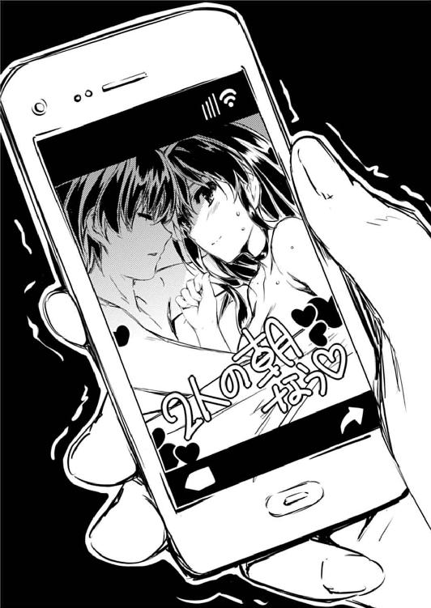
あとがき ─冴えない近況の報せかた
どうも、丸戸です。
というわけで『冴えない彼女の育てかた』無事二巻を出すことができました。
これも手にとっていただいた皆さんのおかげです。本当にありがとうございます。
さて、もともとエロゲー業界の引きこもりだった僕が今回ラノベを出させていただくにあたって、実は一つ、純粋に本を書く以外の目的がありました。
それは、出版業界の知識を得ることです。
ゲームを作っているだけではわからない出版業界の様々な常識、非常識に触れて、創作活動の糧にするだけでなく飲み会のネタとしても活用しようというとてつもなく腐った......いや前向きな意欲に満ちてこの世界の門を叩いたわけです。
で、結果として、たくさんの役に立つ、そして面白い情報や知識に触れることができて、これだけでもラノベを書いてよかったなぁと心から思ったりしました。
例えば印税の割合、重版決定から実際に書店に並ぶまでの日数、売り上げランキングと実際の販売数の差異の読み解き方、書店ごとの力関係、その他諸々......
他にも、思ったよりデジタル化されていない紙中心の文化......これは二巻の締め切り間際の攻防で超身に染みました。すげぇ、こんな大量の修正でも手書きで直すんだ......
いや、なんかネタ的に生臭いものばかりなのは気のせい......じゃないですね。いや本当に勉強になります。今後の創作活動に役立つ......というかすでに作中で縦横無尽に使わせていただいてたりしますが。
そうそう、あと、ゲームと一番違いを感じたのは仕事の来かたでした。
ゲームの場合は、シナリオのボリュームは大量ではあるけれど、最初から終わりが見えているため、ゴールに向かって長い道のりをコツコツ計画的にこなしていく感じでしたが、小説は一冊の量は大したことなくても、それが断続的に続くので、仕事の方も五月雨式にばらばらとやってきて、最初はなかなかその感覚に慣れなかったものです。
それでも読者の皆さんや、編集さん、その他大勢の関係者の方々の多大なご支援もあり、なんとか続けていく手応えが掴めました。本当に皆さんありがとうございます。
おかげで三巻も出せることが決まりました。ありがたいことです。え、発売月と締め切りもう決まってるんですか？ はぁ、頑張らせていただきます。
そしてなんとコミカライズが三誌も決まりました。大変光栄なことです。ほう、オリジナルストーリーもあるんですか。バラエティに富んでていいですね。え、基本プロットの締め切りそんな直近なんですか？ は、はぁ、大丈夫、間に合わせます。
さらに、ドラゴンマガジンさんで一巻に引き続き特集を組んでいただけることになりました。毎度毎度お世話になっております。え、短編だけじゃなくあらすじや紹介文も？ い、いやぁ、こんなに載量をいただけて本当に光栄です。
え、そんなわけで来週も東京で打ち合わせ？ 僕、名古屋人なんですけど？
もしかしてラノベの仕事って、五月雨式というより雪だるま式にやってくる......？
などと考える間もなく今日も編集さんからご丁寧なメールが届きます。連絡ありがとうございます。もちろん新規の仕事の内容と締め切りの提示は抜けてません。あ、はい、来週までには必ず......
さてここからはちょっと趣を変えて、今回の作中に出てきたゲームの企画書の話を少し。
いや、内容はまぁ僕の好きな伝奇系ゲームをミックスして適当にひねり出した、どうしようもなくボツの香りのする駄企画なんですが、ここで言いたいのは内容の方じゃなくて書式の方でして。
今回、巻末に参考資料として掲載させていただいた完全版企画書は、項目から形式から、実際に僕がゲーム会社に提出しているそのまんまです。
パ○フェもこん○ゃくもホワ○バ２も細部は違えどほぼあんな感じです（もちろん全キャラ分書くので分量はこの数倍はありますが）。
つまり、あんな感じのものを書けば、ちょっと心の優しいクライアントさんなら騙され......いや、話を聞いていただけるということは僕が保証します。
というわけで、皆さんも興味があればエロゲー作ってみませんか？ いや一八歳未満の方は一八になってからってことでお願いしますが。
何しろエロゲライターってよく逃げるからすぐにチャンスが巡ってきますよ？（禁句）
では最後にお馴染みの謝辞を。
深崎さん、今回も相変わらず気合の入ったイラストをありがとうございます。心の底から身の引き締まる思いです。編集さんに『その露出レベルはＮＧ』と怒られつつ、エロゲー制作者同士これからも頑張りましょう。
萩原さん。出版業界の洗礼色々とありがとうございました。おかげで僕も立派な紙媒体の人に......ごめんなさい本当ごめんなさい。もう二度とあんなご迷惑はお掛けしませんから。せめて今年のうちは。
そして、一巻で見切らずについてきてくださった読者の皆さん......約束通り一生ついていきます僕は重たい男です。そしているかどうかわかりませんが二巻から先に手にとっていただいた読者の皆さん、一巻は金髪ツインテールと緑ジャージが目印ですのでどうかよろしくお願いします。
それでは、次は三巻で。
二○一二年、秋
丸戸 史明
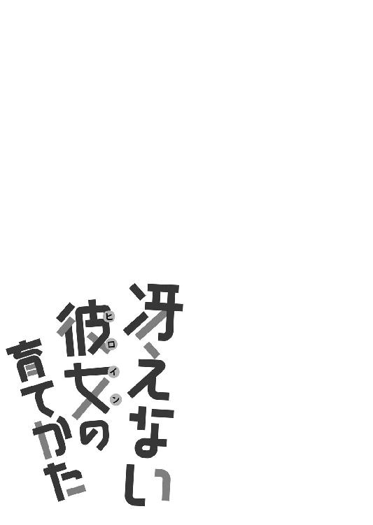
参考資料
同人ゲーム企画書（第一版） ２０１２／０７ 霞詩子
■タイトル：倫理君の、倫理君による、倫理観に満ち溢れた超健全ギャルゲー企画（仮）
■ジャンル：ＡＤＶ
・オーソドックスなコマンド選択式アドベンチャーゲームとする。
■コンセプト：恋愛＆転生＆過去改変
・ヒロインとイベントを重ねて仲良くなるオーソドックスな恋愛アドベンチャーに、転生的要素（前世の因縁、記憶の継承能力）を付加し、ヒロインとの絆をより強固に描く。
『○』、『久○の絆』等、過去の転生モノの名作の要素を取り入れつつ、この作品独自の要素も付加する。
・また、前世の記憶に介入することで、現世の悲劇を回避するという、避けられない運命からの逆転劇によるカタルシスを描く。
『ＹＵ─Ｎ○』、『シュ○インズ○ート』等をモチーフとする。
但しシステム面ではなくあくまでストーリー面での継承にとどめる。
■舞台：
・とある地方都市。
新興住宅街から少し外れた昔ながらの景観が残る街。
街の中心に長い坂があり、春には綺麗な桜が道の両脇いっぱいに咲き誇る。
■システム：
・行動選択肢と場所選択肢の両方を採用。
場所選択でヒロインを絞り込み、行動選択でヒロインの好感度を上げる方式とする。
・また、現代編と過去編があり、現代編の行動が過去編に影響を与えることもある。
■キャラクター数：
ヒロインは３～４名。
メインヒロインが１名、サブヒロインが２～３名。
■キャラクター：
●主人公（現世）：安曇誠司（あずみ・せいじ／16歳）
・転校生。親の転勤により引っ越してくる。
・リーダーシップが強く、皆を引っ張っていくタイプ。しかしお調子者。
・少し懐古癖があり、昭和ネタや知識に強い（実は父親の記憶を継承している）。
・巡璃（めぐり）と出逢うことにより、さらに昔（戦時中）の記憶までもが蘇ることに。
●主人公（前世）：丙双真（ひのえ・そうま／18歳）
・誠司の前世（曾祖父）。
・誠司と同様、責任感とリーダーシップが強い。
しかし誠司と対照的に、真面目な性格。
・妹の瑠璃（るり）を愛しているものの、一族や政府の方針には懐疑的。
日本の敗戦を冷静に見極め、今後の一族のあり方について悩んでいる。
●メインヒロイン（現世）：叶巡璃（かのう・めぐり／16歳）
・高校二年生。転校してきた誠司と同じクラスになる。
・誠司が街に越してきて、坂の上の桜並木で初めて出会う女の子。
・性格は少しおっとりしたタイプであまり目立たないものの、よく見ると美少女。
・初めは誠司のアプローチもそれほど興味なく受け流していた。
しかし徐々に彼の内面に触れ、気になる存在になっていく。
●メインヒロイン（前世）：丙瑠璃（ひのえ・るり／12歳）
・巡璃の前世（曾祖母）。
・双真の実妹。病弱で色白。体は弱いが能力的には一族最強を誇る。
もともと女系家族のため、その記憶継承は平安時代にまで遡るという。
・兄である双真を真剣に愛しており、彼のためなら命を捨てても構わないと思っている。
●その他ヒロインは別途。
■転生関連の設定
・厳密には転生ではなく、記憶の継承。
・主人公、メインヒロイン共通の先祖の丙一族には、古来から受け継ぐ特殊な能力がある。
その能力とは、自分の先祖の記憶をほぼ全て引き継ぐことができるというもの。
・一族の血が強ければ強いほど、その継承能力も強く、そして長期にわたる。
つまり能力が高ければ（血が強ければ）、父母のみならず祖父母、曾祖父母と何代にわたっての記憶保持が可能となる。
・ただし継承は同性同士でしか行われない。男子は父親の、女子は母親の記憶のみ。
そのため何代も記憶が継承されていくには、何代も男子（または女子）の出生を続けていかなければならない。例えば子供が全て女子ばかりになった場合は、その父親の記憶はこの時点で途切れてしまう。
・このような特殊能力を持つ一族のため、常に時の政権に保護され利用されてきた。
そして様々な技術、歴史、文化を（表裏とも）後世に残す役割を担ってきた。
・先述の通り、血が強ければ能力が高まるため、一族内では近親婚が当然のように重ねられ、純度が高い子供ほど、一族の長や要人に大事にされ、身分も高かった。
・主人公とヒロインの前世（主人公の曾祖父とヒロインの曾祖母）は元々兄妹で、しかも将来を約束されていた許嫁の間柄だった。それは一族では当然のことであり、しかも彼らの家系は相当に純度が高かったため、一族の長の後継としての期待も高かった。
・しかし第二次大戦での敗戦が、日本だけでなく彼らの一族の運命も狂わせた。
時の政府はこの一族の存在を闇に葬ろうと、終戦と同時にその集落を焼き払った。
しかし双真、瑠璃の兄妹は、一族の長老たちの死を賭した行動によりなんとか脱出に成功。いつか再会することを祈りながら散り散りに逃げていった。
・しかし結局、二人の再会はかなわず、別々の相手と子をもうけ、薄くではあるものの記憶継承の能力を細々と残していく。
・現在の主人公、ヒロインとも血が薄まったせいで継承能力そのものは低くなり、曾祖父母の記憶はかすかにしか継承されていない。
しかし前世の二人の能力が高い上、悲恋への想いが強いため、現世の二人が惹かれ合うようになると、その記憶を思い出していく。
・最終的シナリオにて、この記憶の継承能力が、逆に記憶の遡上能力として進化することにより過去改変を可能にする。
（詳細は未定、過去改変をシナリオに組み込むかどうかも含めて検討が必要）
■大まかなストーリー構成
●共通ルート
・親の転勤により、とある地方都市に引っ越してきた主人公、誠司。
初めて見る地なのにどこか懐かしい。
・家の近くの桜並木の坂で道に迷っているところ、地元の少女と出逢う。
なんとなく運命的なものを感じる誠司。
・転校先のクラスで少女と再会する。彼女の名は叶巡璃といった。
しかし巡璃は誠司のことを全然覚えておらず、運命の再会とはならなかった。
そのことでかえって意地になる誠司。持ち前の厚かましさを駆使して巡璃につきまとう。
巡璃はそんな誠司の態度に怒りも喜びもせず、ごく普通の友達として接し続ける。
それが誠司にはもどかしく、ますます彼女への興味をかき立てていく。
・その他、他のヒロインも登場し、学園ラブコメが展開される。
（他ヒロインのシナリオについては別途）
・ある日、偶然帰り道で一緒になる誠司と巡璃。例の桜並木の坂を通る。
二人の出会いのときの話をする誠司、しかし巡璃はそれを『再会』と言う。
あの時が初対面だったはずだと疑問に思う誠司。
しかし巡璃の方もそれ以外はいつもと同じ態度だったため、
あれは聞き違いだったに違いないと誠司は自分を納得させる。
・そしてその日の別れ際、巡璃はぽつりと呟いた。
『おやすみなさい、お兄様』
●巡璃ルート
・それから数週間が過ぎた頃。相変わらず巡璃につきまとう誠司。軽くあしらう巡璃。
しかし端から見たら、二人はもう相思相愛としか思えないほどの馴染みようだった。
そしてさらにしばらくの後、二人はお互いの気持ちを確かめ合い、恋人同士になる。
・しかしそれと時期を同じくして、巡璃の様子が少しずつ変わっていく。
誠司への異様な執着、時折見せる無意識の恐怖心、生まれる前の時代の記憶。
まるで、自分以外の誰かが自分の中にいるような......
・そして記憶の遡行に伴い、過去の恋心や一族の事件を思い出していく巡璃。
（詳細は『転生関連の設定』参照）
一族を滅ぼした黒幕が存在し、未だにこの街にいること。
自分は、その事実を外部に漏らさないためこの街に縛られていたという事実。
彼女が昔の風景や出来事を思い出していくたびに、二人の周囲に不可解な出来事が起こり始める。
（巡璃や誠司が死亡したり離れ離れになるバッドエンドを数か所配置する）
・何度も生命の危機に遭うことで、お互いを守るため戦うことを決意する二人。
瑠璃の記憶を呼び覚まし、事件の真相に迫る巡璃。
そして双真の過去の行動に干渉し、過去の記憶を新しく『創出』する誠司。
絶体絶命のピンチに、過去の行動から新しい情報（抜け道や相手の弱点）を得た誠司はその情報を使って敵を撃退する。
・そして危機は去り、二人は七○年の時を経て結ばれる。
・昭和二○年、終戦後の桜並木を二人で歩く双真と瑠璃（ずれた世界線での回想）。
『これからもずっと一緒ですね、お兄様』
そして現在、戦いの後の桜並木を二人で歩く誠司と巡璃。
『これからもずっと一緒だね、お兄ちゃん』
■テキスト容量：
共通：２００ＫＢ
個別：３００ＫＢ×ヒロイン数
計：約１．１ＭＢ～１．４ＭＢ
■制作期間：
プロット作成：１Ｍ
シナリオ作成（共通）：１Ｍ
シナリオ作成（個別）：１Ｍ×ヒロイン数
計：約５～６Ｍ
冴えない彼女の育てかた２
丸戸史明
平成24年11月25日 発行
発行者 山下直久
発行所 株式会社富士見書房
〒102-8144 東京都千代田区富士見1-12-14
http://www.fujimishobo.co.jp/
(C) 2012 Fumiaki Maruto, Kurehito Misaki/Fujimishobo